المؤلف: Aleksei Boklag · الترخيص:
النص CC BY
4.0، وقوائم الشيفرة MIT · نُشر في basalt بتاريخ 26 نوفمبر
2026 · تُرجم من الأصل الروسي بمساعدة الذكاء الاصطناعي، والنسخة الروسية هي المرجع المعتمد.
على امتداد سبعة عقود من التطوّر — من المُدرِك الحسّي (Perceptron) العتادي
Mark I (1958) إلى النماذج الهجينة المتناثرة ذات التريليونات من
المعاملات، والأنظمة الكلامية كاملة الازدواج، ومحوّلات الانتشار ذات العمق
التكراري الكامن في مطلع 2026–2027 — تطوّرت نظرية الشبكات العصبية وهندستها
على امتداد أربعة محاور رياضية أساسية: طوبولوجيا توجيه
الأوزان (من المصفوفات الكثيفة إلى خليط الخبراء
(Mixture-of-Experts) دقيق التحبّب في الفضاء الجزئي الكامن)، وضغط
السياق الزمني (من الشبكات العصبية التكرارية غير الخطية
والانتباه التربيعي إلى نماذج فضاء الحالة
الثنائية (dual)، وقاعدة دلتا، والانتباه المتناثر المتوافق مع العتاد)،
وعمق الحساب التكراري (من الوصلات المتبقية إلى إسقاط
الوصلات الفائقة على منطوية بيركهوف وحلقات الاستدلال الكامنة)،
والنقل الاحتمالي المتصل والمتقطع (من الحدود التغايرية
إلى تدفقات Flow Matching المُقوَّمة، والمرمّزات التلقائية السببية ثلاثية
الأبعاد، والتكميم الاتجاهي المتبقي للصوت)1. يقدّم هذا المونوغراف إعادة
بناء زمنية متصلة لهذا التطوّر بمعدّل فصل واحد لكل سنة بالضبط على امتداد
الفترة الممتدة سبعين عامًا من 1958 إلى 2027، يفتتحها
دليل القراءة ومعجم صارم للرموز التنسورية، وتختمها جداول مجمَّعة لمعايير
القياس الموثَّقة (الملحق أ)، وتطبيقات مرجعية قابلة للتنفيذ لجميع الآليات
الرئيسة على PyTorch (الملحق ب)، وببليوغرافيا منظَّمة تضم 445 ورقة
علمية وكتابًا أساسيًا ومستودعًا مفتوحًا6.
عند تفسير المقاييس التجريبية ينبغي مراعاة قيدين منهجيين اعتبارًا من
25 نوفمبر 2026. أولًا، تعتمد مؤشرات المعماريات الرائدة
في 2025–2026 (DeepSeek-V3.2 وV4 Pro، وKimi K2.5 وK3، وQwen3.8، وGemma 4،
وGLM-5، وNemotron 3 و3.5، وWan 2.2، وLTX-2.5، وPersonaPlex) اعتمادًا
جوهريًا على ميزانية الاستدلال المخصَّصة وقت الاستنتاج (reasoning_effort،
وطول مسار CoT)، وعلى صيغة التكميم (BF16 وFP8 وMXFP4 وNVFP4) وبروتوكولات
التقييم؛ ولذلك فُصل في النص وفي جداول الملحق أ بين بيانات التقارير
التقنية للمطوّرين والقياسات المستقلة (Artificial Analysis وEpoch AI
وInferenceX وFull-Duplex-Bench)10. وثانيًا، يستند فصل
2027 حصرًا إلى أعمال موثَّقة حتى نوفمبر 2026 اجتازت
الانتقاء إلى وقائع مؤتمرات شتاء–ربيع 2027 (WACV 2027 وAAAI/IAAI 2027
وWSDM 2027 وDATE 2027)، وإلى مقدَّمات مؤتمر ICLR 2027 المفتوحة المحكَّمة على
منصة OpenReview، دون أي تنبؤات تخمينية15.
مقدمة: بنية
التطوّر العصبي ودليل القراءة
كثيرًا ما يُروى تاريخ التعلم العميق بوصفه سلسلة من «الشتاءات» المتفرقة
والقفزات التجريبية المفاجئة، بيد أن تحليل المصادر الأولى يكشف عن
استمرارية رياضية متصلة في الأفكار7. فقد شكّلت طريقة المعادلات المرافقة
المتصلة لهنري كيلي (1960)، والانحدار التدريجي العشوائي الشامل لسيونيتشي
أماري للشبكات خماسية الطبقات (1967)، والشبكات متعددة الحدود ثمانية
الطبقات لأليكسي إيفاخنينكو (1965–1971)، والاشتقاق التلقائي بالنمط العكسي
لسيبو لينّاينمّا (1970، 1976) — الجهازَ التحليلي الكامل للتدريب قبل زمن
طويل من الانتشار الواسع للانتشار العكسي للخطأ عام 1986 7. وبالصلة
الوراثية المباشرة نفسها ترتبط قاعدة تصحيح الخطأ لويدرو—هوف (1960) وشبكات
برمجة «الأوزان السريعة» (Fast Weight Programmers، 1991–1992، 2021)
بالمحوّلات الخطية الحديثة القائمة على قاعدة دلتا (DeltaNet وGated
DeltaNet وKimi Delta Attention وRWKV-7)، المنقولة إلى عمليات مصفوفية
متوازية كتليًّا على نوى التنسور في وحدات GPU9.
على المستوى الماكروسكوبي يمكن اختزال المسار الممتد سبعين عامًا في اندماج
أربعة خطوط معزولة تاريخيًا عبر ثلاثة عصور تقنية في حزمة متعددة الوسائط
موحَّدة لعامي 2026–2027 1:
محور التصميم
الأساس الكلاسيكي (1958–2011)
عصر الشبكات العميقة والانتباه
(2012–2023)
النواة المتقاربة (2024–2027)
سعة الأوزان وتوجيهها
البيرسبترون، MLP، خليط الخبراء المحلي MoE
(1991)
Sparsely-Gated MoE، وSwitch Top-1،
وMixtral Top-2
LatentMoE دقيق التحبّب
بخبراء مشتركين + موجَّهين مع موازنة بلا عقوبات في دالة الخسارة27
للعمل الفعّال مع هذا المرجع يُنصح بترتيب القراءة الآتي:
نظام الترميز الموحَّد (القسم التالي): قبل قراءة الصيغ
والشيفرة قارنوا ما فيها بمعجم الأبعاد التنسورية والآليات الأساسية
الاثنتين والعشرين — فهذا يزيل الالتباس بين مصطلحات نظرية التحكم (SSM)
والفيزياء الإحصائية (الانتشار) ومعالجة الكلام (المحوِّلات transducers
والمرمِّزات codecs).
البحث الزمني والمجالي عبر الفصول (1958–2027): كل
فصل من الفصول السبعين معنون بسنة، وفي سطره الأول وسوم تصفية للمجالات
(الأساس، التحسين، المرمِّز، الانتباه/LLM، MoE، الحلقات/SSM، الانتشار،
الفيديو، STT، TTS، STS). وتُورَد داخل الفصل الاشتقاقات الرياضية للآلية
الرئيسة في تلك السنة، ومفاضلاتها الحسابية، وإحالات من الشكل (№ 1)–(№
445) إلى الفهرس الببليوغرافي الكامل.
التطبيق الهندسي (الملحق ب): اثنتا عشرة قائمة شيفرة
وحدوية على PyTorch (ب.1–ب.12) تتيح الانتقال من المعادلات التحليلية
مباشرة إلى شيفرة تنسورية عاملة لكل آلية.
معجم المصطلحات والرموز
الرياضية
ثُبّتت في الجدول أدناه الأبعاد المستعرضة والمؤثِّرات المستخدمة في جميع
فصول المونوغراف وقوائمه البرمجية:
الرمز
الكائن الرياضي وبُعده
المعنى الفيزيائي / الخوارزمي
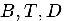
الأعداد الطبيعية
حجم الدفعة الصغيرة (mini-batch) ()، وطول متتالية الرموز أو الإطارات ()، والبعد المخفي للنموذج ( أو )
الأعداد الطبيعية
عدد الطبقات الفيزيائية الفريدة () وعدد التكرارات التكرارية على العمق /
الحلقات (
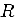
)3
الأعداد الطبيعية
عدد رؤوس الاستعلامات ()، وعدد رؤوس المفاتيح—القيم ( في GQA/MQA)، وبُعد الرأس الواحد ()30
متجهات
متجه الدخل في الخطوة والحالة المخفية في الطبقة في الخطوة
مصفوفة أو
متجه
حالة تكرارية ثابتة الحجم (أوزان سريعة /
ذاكرة ترابطية) في SSM والانتباه الخطي25
فيما يلي التعريفات الصارمة للآليات المعمارية والخوارزمية
الأساسية:
الاشتقاق التلقائي بالنمط العكسي (Reverse-Mode AD /
Backpropagation) — خوارزمية لحساب تدرّج دالة الخسارة العددية
بدقة بالنسبة إلى جميع عقد الرسم الحسابي
اللادوري في زمن يتناسب مع تمريرة أمامية واحدة، وذلك بنشر المشتقات
المرافقة
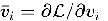
تكراريًا من الخرج إلى
الدخل7.
زمن الحساب التكيّفي (Adaptive Computation Time, ACT / Early
Exit Gate) — آلية لتخصيص عدد التكرارات ديناميكيًا لكل رمز عبر بوابة إيقاف قابلة
للتعلّم
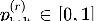
، تتيح إنفاق عمليات حسابية أكثر
على المواضع المعقدة منطقيًا41.
الأوزان السريعة والتدريب أثناء الاختبار (Fast Weights /
Test-Time Training, TTT) — معاملات شبكة فرعية داخلية أو مصفوفة
ذاكرة ترابطية تُحدَّث ديناميكيًا في مرحلة
الاستدلال (عبر قاعدة هيب أو قاعدة دلتا أو خطوة انحدار تدريجي على دالة
خسارة ذاتية الإشراف) لضغط السياق الطويل في حجم ذاكرة ثابت44.
التكميم الاتجاهي والمتبقي والسلّمي المنتهي (VQ / RVQ /
FSQ) — تقطيع المتجه الكامن المتصل بالبحث عن أقرب عنصر في دفتر الشيفرة (VQ)، أو
بالتكميم المتتالي للبواقي على من دفاتر
الشيفرة (Residual VQ في SoundStream وEnCodec وMimi)، أو بالتقريب المباشر
لكل إحداثي في شبكة صحيحة محدودة دون دفتر شيفرة قابل للتعلّم (Finite
Scalar Quantization في CosyVoice 3)46.
الانتباه ذو الاستعلامات المجمَّعة (Grouped-Query Attention,
GQA) والانتباه متعدد الاستعلام (MQA) — مشاركة مجموعة واحدة من
إسقاطات المفاتيح والقيم بين جميع رؤوس
الاستعلام (، MQA) أو داخل من المجموعات (، GQA) لتقليص حجم ذاكرة KV-cache وحركة
البيانات من ذاكرة الفيديو HBM عند فك الترميز بعدة أضعاف39.
الانتباه الكامن متعدد الرؤوس بذاكرة مخبّأة مضغوطة (Multi-Head
Latent Attention, MLA) — آلية تُسقِط الحالة المخفية في متجه واحد
منخفض الرتبة () مع فرع منفصل صغير الأبعاد للترميز الموضعي
Decoupled RoPE؛ وفي الاستدلال يُخزَّن مؤقتًا الكامن المضغوط وحده، فتنخفض
ذاكرة KV-cache بنسبة 93.3% على مستوى النموذج (حتى 98.24% لكل طبقة قياسًا
إلى MHA ذي 128 رأسًا)50.
التحسين النسبي الجماعي للسياسة (Group Relative Policy
Optimization, GRPO) — خوارزمية تعلّم معزَّز دون شبكة ناقد منفصلة
(value model)، تقدّر الأفضلية بتوحيد
معياري للمكافآت داخل مجموعة من مسارًا
مولَّدًا لموجِّه (prompt) واحد53.
قاعدة دلتا في الانتباه الخطي (DeltaNet / Gated DeltaNet /
KDA) — استبدال الكتابة التراكمية بانعكاس هاوسهولدر معمَّم مع اضمحلال ، يمحو القيمة القديمة عند المفتاح قبل كتابة القيمة الجديدة (حيث — عددي
في GDN أو مصفوفة قطرية في KDA)24.
انتشار النص المتقطع (Masked / Uniform Diffusion Language
Models, dLLM / MDM / UDLM) — نماذج لغوية غير انحدارية ذاتيًا
قائمة على محوّل ثنائي الاتجاه، تستعيد الرموز على التوازي من الأقنعة
[MASK] (MDM: وهي MDLM وLLaDA وDream وMercury) أو من الاستبدالات
العشوائية في المعجم (UDLM) بتصغير حدٍّ تغايري موزون للأرجحية35.
المحاذاة الكامنة للتمثيلات (Representation Alignment, REPA /
JEPA) — عائلة من مبادئ التدريب: ففي فهم العالم البصري (I-JEPA
وV-JEPA) تتنبأ الشبكة بالتمثيلات المخفية للكتل المقنَّعة في فضاء مرمِّز EMA
دون توليد البكسلات؛ وفي التوليد بالانتشار (REPA) تُحاذى الطبقات الوسيطة
في DiT بتشابه جيب التمام مع سمات معلّم بصري مدرَّب مسبقًا (مثل
DINOv2)36.
الوصلات الفائقة المقيَّدة بالمنطوية (Manifold-Constrained
Hyper-Connections, mHC) — توسيع للتيار المتبقي في المحوّل من
متجه واحد إلى من المسارات المتوازية ، حيث تُسقَط مصفوفة خلط المسارات بخوارزمية
سينكهورن—كنوب على متعدد وجوه بيركهوف للمصفوفات ثنائية العشوائية، لنشر
الإشارة بلا تمدّد (
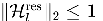
) على أي عمق2.
نماذج فضاء الحالة (Structured State Space Models, SSM / S4 /
Mamba) — نظم ديناميكية خطية
تُقطَّع بخطوة ؛ وفي SSM الانتقائية
(Mamba-1/2/3) تعتمد المعاملات على
الدخل، فتتيح تدريبًا متوازيًا خطيًا بالنسبة إلى وذاكرة ثابتة
لكل خطوة في الاستدلال32.
التنبؤ متعدد الرموز (Multi-Token Prediction, MTP) —
معمارية تدريب وفك ترميز تأملي ذاتي، تتنبأ فيها رؤوس متتالية فوق الجذع
المشترك للنموذج بعدة رموز نصية مستقبلية أو بمستويات البواقي في دفاتر
شيفرة الصوت RVQ29.
الزخم المصفوفي المتعامد (Muon / MuonClip) — مُحسِّن
للطبقات المصفوفية ثنائية الأبعاد، يستعيض عن تدريج التدرّج لكل إحداثي
بتعامد تقريبي لمصفوفة الزخم بتكرارات
نيوتن—شولتز كثيرة الحدود ()، مما يسوّي
طيف القيم المفردة لخطوة التحديث65.
الوصلات المتبقية بالانتباه على العمق (Attention Residuals,
AttnRes) — استبدال الجمع الثابت لمخرجات جميع الطبقات السابقة
بانتباه softmax قابل للتعلّم على امتداد محور العمق (عبر الكتل السابقة)،
يزيل تلاشي معيار السمات في محوّلات Pre-LN العميقة34.
النماذج الكلامية كاملة الازدواج (Full-Duplex
Speech-to-Speech, STS) — معماريات (Moshi وPersonaPlex
وNemotronLabs VoiceChat) تعالج بتزامن تيار رموز الصوت الوارد من المستخدم
وتولّد تيارات متوازية لـ«المونولوج الداخلي» (النص) ولرموز صوت الإجابة دون
تقطيع إلى ردود متناوبة، مما يدعم المقاطعات وأصوات التعجّب بزمن تأخير
160–205 مللي ثانية68.
التضمينات الموضعية الدوّارة (Rotary Position Embedding, RoPE
/ p-RoPE / 3D-RoPE / TMRoPE) — ترميز الموضع النسبي بتدوير أزواج
إحداثيات الاستعلامات والمفاتيح بزوايا ،
بحيث يعتمد الجداء السلّمي
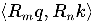
على الإزاحة
وحدها؛ ويُعمَّم على تدوير جزء من الفضاء
الجزئي (-RoPE) وعلى المحاور
المكانية–الزمنية للفيديو والصوت (3D-RoPE وTMRoPE)71.
خليط الخبراء المتناثر (Sparse Mixture-of-Experts, MoE /
LatentMoE) — استبدال طبقة FFN الكثيفة بمجموعة من من الشبكات الفرعية الخبيرة مع تنشيط
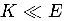
من الخبراء لكل رمز؛ وفي
LatentMoE يُضغَط متجه الدخل مسبقًا إلى كامن منخفض الأبعاد
لتقليل حركة قراءة الأوزان والإرسال بين الخوادم All-to-All27.
الانتباه المتناثر المتوافق مع العتاد (NSA / DSA /
CSA) — آليات انتباه متناثر قابلة للتعلّم (Native Sparse
Attention وDeepSeek Sparse Attention وCompressed Sparse Attention)
تستخدم ضغطًا كتليًا هرميًا أو مفهرسًا خفيفًا (lightning indexer) لانتقاء أفضل
top- من المفاتيح لكل استعلام، فتخفض تعقيد
الانتباه من إلى 31.
المحوّل التكراري العمق (الحلقي) (Looped / Recurrent-Depth
Transformer, PLT) — معمارية بأوزان مشتركة على العمق، تمرّر
الحالة المخفية عبر كتلة طبقات مشتركة
مرة (Huginn وOuro)؛ وفي Parallel Loop Transformer (PLT)
تُنفَّذ التكرارات المتتابعة للرموز المتجاورة على نحو أنبوبي في تمريرة
متوازية واحدة (Cross-Loop Parallelism)3.
التدفقات المُقوَّمة ومطابقة التدفقات (Flow Matching / Rectified
Flow) — تدريب المعادلة التفاضلية العادية التوليدية بانحدار مباشر لحقل السرعات على امتداد
الاستيفاء الخطي بين البيانات والضجيج
الغاوسي، مما يتيح توليدًا حتميًا سريعًا بعدد صغير من خطوات أويلر5.
محوِّل الرموز والمدد (Token-and-Duration Transducer,
TDT) — توسيع لفاكّ ترميز ASR التدفقي RNN-T، يتنبأ بالتزامن
بالرمز دون الكلمي وبعدد الإطارات الصوتية التي يغطيها، لتخطي المقاطع الساكنة والوقفات
في الاستدلال79.
1958
المجالات: الأساس
كانت نقطة انطلاق التعلّم المعلمي للشبكات العصبية الاصطناعية نشرَ فرانك
روزنبلات لـ «The Perceptron: A Probabilistic Model for Information
Storage and Organization in the Brain» في مجلة Psychological
Review (№ 1)، والتنفيذ العتادي لآلة Mark I Perceptron في مختبر
كورنيل للطيران (بعد محاكاة أولية على الحاسوب المركزي IBM 704)82. وخلافًا
للعناصر المنطقية الثابتة لدى ماكولوك وبيتس (1943)، فصل بيرسبترون
روزنبلات بين الشبكية الحسية (الكتلة -)،
وطبقة من الإسقاطات الترابطية اللاخطية العشوائية (الكتلة -، السمات )،
ومجمِّع عتبي قابل للتعلّم (الكتلة -) يحدّد
المستوى الفائق الفاصل:
حدّثت قاعدة التصحيح بالخطأ الأوزان على
الكائنات المصنَّفة خطأً فقط ، حيث ، وفق الصيغة 83. وفي السنة نفسها 1958 صدر بعد الوفاة
مونوغراف جون فون نيومان «The Computer and the Brain» (№ 2)،
الذي قارن للمرة الأولى بين البنية المتوازية على نطاق واسع ومنخفضة التردد
للذاكرة المشبكية في الدماغ وعنق الزجاجة التسلسلي للحواسيب الرقمية. ومع
أن روزنبلات نظر منذ 1958 في مخططات متعددة الطبقات، فقد افتقر إلى
خوارزمية قابلة للاشتقاق لإسناد الفضل (credit assignment) للطبقات
المخفية7.
1959
المجالات: المرمِّز الأساس
في عام 1959 ظهرت ثلاث ركائز مفاهيمية للشبكات العميقة المستقبلية: التسلسل
الهرمي العصبي-الفيزيولوجي للمرشِّحات البصرية، والتعرّف المتتالي المتوازي،
والاستنهاض الذاتي (bootstrapping) لدالة التقييم عبر الزمن. فقد اكتشف
ديفيد هيوبل وتورستن فيزل في مقالة بمجلة The Journal of
Physiology (№ 3) في القشرة المخططة للقطة حقولًا مستقبِلة محلية
انتقائية الاتجاه، صارت النموذج البيولوجي الأولي للنوى الالتفافية85. وفي
الوقت نفسه قدّم أوليفر سيلفريدج في ندوة تيدينغتون معمارية
Pandemonium (№ 4) — تسلسلًا هرميًا متوازيًا من «شياطين
السمات» و«الشياطين المعرفية» التي تزنها و«شيطان القرار» الأعلى الذي
ينتقي أقصى استجابة 87. وفي العام نفسه
نشر آرثر صامويل في IBM Journal of Research and Development عمله
الشهير عن لعبة الداما ذاتية التعلّم (№ 5)، فثبّت مصطلح machine
learning (تعلّم الآلة) وأدخل تحديث أوزان كثير حدود التقييم بحسب
الفرق بين تقييمي الوضع الحالي والتالي — وهو النموذج الأولي المباشر
لطريقة الفروق الزمنية (TD learning) والناقد في التعلّم المعزَّز.
1960
المجالات: الأساس التحسين
أنجز الانتقال من قاعدة العتبة المنقطعة للبيرسبترون إلى التحسين التدرّجي
الأملس برنارد ويدرو ومارسيان هوف، اللذان قدّما العقدة الخطية التكيفية
ADALINE وخوارزمية المربعات الصغرى LMS
(Widrow–Hoff / Delta Rule، № 6)88. وتمثّل الجديد المبدئي في ADALINE في
حساب الخطأ من الخرج الخطي المتصل قبل المُكمِّم العتبي الثنائي. وقد أعطى الانحدار التدريجي العشوائي
على الخطأ التربيعي اللحظي قاعدة دلتا
الكلاسيكية:
وهذه المعادلة بالذات — معادةً كتابتها للذاكرة الترابطية المصفوفية على
الصورة
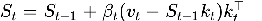
— هي أساس المحوّلات الخطية
الحديثة DeltaNet وGated DeltaNet
(2024–2026)25. وفي العام نفسه 1960 نشر هنري كيلي في ARS Journal
مقالة «Gradient Theory of Optimal Flight Paths» (№ 7)، مشتقًّا
طريقة المعادلات المرافقة المتصلة للنشر العكسي لمشتقات دالي الكلفة على
امتداد مسار نظام ديناميكي — السلف التحليلي لكل من الانتشار العكسي للخطأ
وNeural ODE7.
1961
المجالات: الحلقات الذاكرة الأساس
في عام 1961 نشر السيبرنطيقي الألماني كارل شتاينبوخ في المجلد الأول من
مجلة Kybernetik عمله «Die Lernmatrix» («المصفوفة
المتعلِّمة»، № 8) — أولى المعماريات المصفوفية للذاكرة الترابطية غير
المتجانسة على شبكة متقاطعة من الموصِّلات91. وفي مصفوفة شتاينبوخ كان متجه
السمات الداخل ورمز الصنف
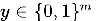
يرتبطان بقاعدة محلية من نمط هيب ، ويجري الاستخراج بضرب مصفوفة في متجه على
التوازي مع انتقاء تنافسي للأقصى. وجبريًّا
وضعت «المصفوفة المتعلِّمة» النموذج الأولي للذاكرات الترابطية الخطية
الحديثة من نوع مفتاح–قيمة
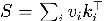
. وفي العام
نفسه قسّم إدواردو كاياييلو في Journal of Theoretical Biology (№
9) الديناميكا العصبية إلى مقياسَي زمن مترابطين: «معادلات عصبية» سريعة
لاسترخاء التنشيطات، و«معادلات ذاكرية» أديباتية بطيئة لليونة الأوزان
المشبكية.
1962
المجالات: الأساس المرمِّز
في أبريل 1962 قدّم عالم الرياضيات ألبرت نوفيكوف برهانًا صارمًا وموجزًا على
مبرهنة تقارب البيرسبترون (№ 10؛ ونشر هـ. د. بلوك في
السنة نفسها تقديرات مماثلة، № 13)92. وبيّن نوفيكوف أنه إذا كانت العيّنة
ذات معيار مدخلات محدود قابلة للفصل خطيًا بمتجه وحدة (
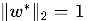
) بهامش
موجب ، فإن خوارزمية البيرسبترون المنطلقة
من المتجه الصفري
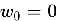
تنتهي بما لا يزيد على
من التحديثات. ففي كل مثال خاطئ يزداد
الجداء السلّمي مع الأوراكل بمقدار على
الأقل ()، في حين أن شرط الخطأ يحدّ الزيادة في مربع المعيار من الأعلى
بالمقدار ()، ومن ذلك ينتج تقدير لا يعتمد إطلاقًا على
بُعد الفضاء 83:
وفي العام نفسه صدر المونوغراف الختامي لفرانك روزنبلات «Principles of
Neurodynamics» (№ 11)، والمعمارية المتعددة الأجزاء الخطية
MADALINE لبرنارد ويدرو (№ 12)، ومقالة هيوبل وفيزل
الكلاسيكية (№ 14) التي وصفت تناوب الخلايا البسيطة (كاشفات حواف
خطية محلية) والخلايا المعقدة (تجميع pooling ثابت مكانيًا) في
القشرة البصرية87.
1963
المجالات: الأساس التحسين
تطويرًا لهندسة هامش الفصل نشر فلاديمير
فابنيك وألكسندر ليرنر في مجلة «Автоматика и телемеханика» مقالة
«التعرّف على الأنماط بواسطة الصور المعمَّمة» (№ 15)97. وبدلًا من
البحث عن مستوى فائق فاصل اعتباطي، صاغ المؤلفان مسألة تحسين تربيعي لإيجاد
المستوى الفائق ذي الهامش الأقصى الوحيد (النموذج الخطي
الأولي لآلة المتجهات الداعمة SVM)، يتحلّل متجه ناظمه على المتجهات الداعمة
الطرفية وحدها من العيّنة . وبذلك دخل في
نظرية التعلّم مبدأ التحكم في معيار الأوزان بوصفه مقياسًا لسعة المصنِّف. وفي العام نفسه
نشر شتاينبوخ وبيسكه في IEEE Transactions on Electronic
Computers تحليلًا لمصفوفات الذاكرة المتصلة عند الإشارات المضجَّجة (№
16)، وبسّط ستيوارت دريفوس اشتقاق قاعدة السلسلة للمضاعِفات المرافقة عبر
البرمجة الديناميكية (№ 17)7.
1964
المجالات: التحسين الأساس
في عام 1964 أُنشئت ثلاث أدوات رياضية تعمل مباشرة في أطر التعلم العميق
الحديثة. فقد نشر بوريس تيودوروفيتش بولياك في «Журнал вычислительной
математики и математической физики» طريقة «الكرة الثقيلة»
(Heavy-Ball Momentum) القصورية (№ 18) لتسريع الانحدار التدريجي
في المسائل الوديانية سيئة التهيئة100:
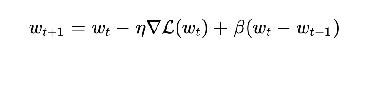
يكبح الحدّ القصوري
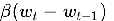
التذبذبات العرضية
للتدرّج، ويقلّص العدد الفعلي لشرطية المسألة التربيعية من إلى . وفي
الوقت نفسه أدخل مارك أيزرمان وإمانويل برافرمان ولِف روزونوير في
«Автоматика и телемеханика»طريقة الدوال
الكامنة (№ 19) — تأسيسًا صارمًا لـخدعة النواة المرتبطة مباشرة بتحليل النواة المستقبلي
للانتباه الخطي20. وفي العام نفسه قدّم روبرت فنغرت في Communications
of the ACM (№ 20) الخوارزمية البرمجية لـالنمط الأمامي
للاشتقاق التلقائي (Forward-Mode AD) على قائمة العمليات
الأولية.
1965
المجالات: الأساس التحسين
في عام 1965 نشر أليكسي غريغوريفيتش إيفاخنينكو وفالنتين غريغوريفيتش لابا
مونوغراف «Кибернетические предсказывающие устройства» (№ 21)،
واصفين أولى الخوارزميات العاملة للتدريب الطبقي لـالبيرسبترونات
العميقة متعددة الطبقات بعدد اعتباطي من الطبقات المخفية7. وكانت
كل عقدة في الشبكة تحسب كثير حدود تربيعيًا من نمط كولموغوروف—غابور بجداءات
ضربية للمدخلات (
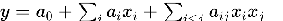
— سلف جبري لكتل
البوابات GLU وSwiGLU)، وتُوجَد المعاملات بطريقة المربعات الصغرى، وكانت
عيّنة التحقق تُقصي العصبونات مفرطة التكيّف قبل بناء الطبقة التالية7.
وبالتوازي برهن توماس كوفر في IEEE Transactions on Electronic
Computersمبرهنة كوفر الأساسية حول سعة الفصل الخطي
(№ 22): فعدد التقسيمات الثنائية القابلة للتحقيق خطيًا لـ من النقاط في الوضع العام في يساوي ، أي
نصف جميع الانقسامات الثنائية بالضبط
عند ، ويؤول أسّيًا إلى الصفر عند . وتفسّر هذه الحقيقة الهندسية ضرورة الإسقاطات
الواسعة للسمات في الطبقات المخفية لـMLP وMoE. وأتمّ العامَ كتابُ نيلس
نيلسون الكلاسيكي «Learning Machines» (№ 23)88 وطريقة هو—كاشياب
التدرّجية لأنظمة المتباينات الخطية (№ 24).
1966
المجالات: التحسين الأساس
في عام 1966 اختزل ياكوف زالمانوفيتش تسيبكين في عمله «Адаптация,
обучение и самообучение в автоматических системах» (Автоматика
и телемеханика، № 25) قواعد البيرسبترونات وADALINE والترشيح
المتفرقة إلى مسألة تغايرية واحدة هي تصغير التوقع الرياضي لدالة
الخسارة (المخاطرة المتوسطة)
بالتقريب العشوائي التكراري لروبنز—مونرو 105. وصارت هذه الصياغة اللغة المعيارية
لنظرية تحسين الشبكات العصبية الحديثة. وفي العام نفسه عمّم إمانويل
برافرمان طريقة الدوال الكامنة على مسألة التعلّم الذاتي والتجميع دون معلّم
(№ 26)20، وأصدر لورانس فوغل وألفين أوينز ومايكل والش مونوغراف
«Artificial Intelligence through Simulated Evolution» (№ 27)،
الذي افتتح اتجاه البحث التطوّري بلا تدرّجات.
1967
المجالات: الأساس التحسين
في يونيو 1967 نشر سيونيتشي أماري في IEEE Transactions on Electronic
Computers مقالة «A Theory of Adaptive Pattern Classifiers»
(№ 28) — أول عمل في التاريخ طُبِّق فيه الانحدار التدريجي العشوائي
الشامل (end-to-end SGD) لتدريب شبكة عصبية متعددة الطبقات ذات
طبقات مخفية لاخطية على توزيعات غير قابلة للفصل خطيًا7. وباستبدال درجة
العتبة بدوال تنشيط ملساء قابلة للاشتقاق، استنتج أماري قاعدة السلسلة
لتصحيح الأوزان المخفية ودرّب تجريبيًا
مصنِّفًا ذا 5 طبقات قبل تسع عشرة سنة من منشور 1986 في
Nature7.
وفي العام نفسه ظهر عملان ذوا أهمية مستقبلية كبرى: فقد برهن توماس كوفر
وبيتر هارت تقديرًا مقاربيًا لخطأ قاعدة الجار الأقرب (، № 29)، واضعين الأساس النظري للبحث المتجهي
وأنظمة RAG، ونشر ريتشارد سينكهورن وبول كنوب في Pacific Journal of
Mathematics مبرهنة وخوارزمية تكرارية للتطبيع المتناوب لصفوف مصفوفة
موجبة وأعمدتها إلى الشكل ثنائي العشوائية (№ 30) — وهو مؤثِّر
Sinkhorn–Knopp نفسه الذي ضمن في مطلع 2025–2026 استقرار
الوصلات الفائقة متعددة المسارات mHC في معماريات
DeepSeek2.
1968
المجالات: الأساس الحلقات
في عام 1968 صاغ أليكسي إيفاخنينكو طريقة المعالجة الجماعية للحجج
(GMDH / Group Method of Data Handling) في مجلة
«Автоматика» (№ 31)104، منظِّمًا التنمية التلقائية للشبكات متعددة
الحدود العميقة مع انتقاء منتظم لأفضل العصبونات وإيقاف مبكر للعمق على
مجموعة تحقق مستقلة. وبالتوازي نشر ستيفن غروسبرغ في PNAS نموذجًا
لاخطيًا للتعلّم الترابطي Outstar ومنظومة معادلات تفاضلية
للذاكرة قصيرة المدى (STM) وطويلة المدى (LTM) (№ 32)109:
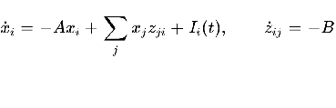
مبرهنًا على التقارب غير المشروط للأوزان المشبكية إلى النسب المكانية لنمط
الدخل. وفي العام نفسه نشر فلاديمير فابنيك وأليكسي تشيرفونينكيس في
«Доклады АН СССР» مبرهنة التقارب المنتظم للتواترات التجريبية
إلى الاحتمالات على صنف من الأحداث، مُدخِلَين مقياسًا تركيبيًا لسعة الأسر
الدالية — بُعد فابنيك—تشيرفونينكيس (VC-dimension) (№
33).
1969
المجالات: الأساس المرمِّز التحسين
في عام 1969 أصدر مارفن مينسكي وسيمور بيبرت المونوغراف التحليلي
«Perceptrons: An Introduction to Computational Geometry» (№
34)7. وبمساعدة نظرية لامتغيرات الزمر برهن المؤلفان بصرامة استحالة تحقيق
محمول الزوجية (بما فيه XOR ثنائي البتّ) ومحمول الترابط
الطوبولوجي بواسطة بيرسبترون وحيد الطبقة بسمات محلية محدودة الرتبة. ومع
أن المؤلفين نبّها إلى أن الشبكات متعددة الطبقات خالية من هذا القيد، فإن
غياب خوارزمية فعّالة معروفة على نطاق واسع في الغرب لتدريب الطبقات المخفية
أدّى إلى فتور الاهتمام بالاتصالية (connectionism) في الوسط الأكاديمي
الناطق بالإنجليزية7.
بيد أنه نُشر في عام 1969 نفسه عنصران محوريان من التعلم العميق الحديث. فقد
دوّن آرثر برايسون ويو-تشي هو في كتاب «Applied Optimal Control»
(№ 35) صيغًا متقطعة صريحة للنشر العكسي لمضاعِفات لاغرانج عبر سلاسل متعددة
الخطوات 7. وفي الوقت نفسه أدخل كونيهيكو
فوكوشيما في مقالة «Visual Feature Extraction by a Multilayered
Network of Analog Threshold Elements» (IEEE Transactions on
Systems Science and Cybernetics، № 36)85 شبكة بصرية متعددة الطبقات
بـمقوِّمات نصف موجية تماثلية — وهو أول تطبيق تاريخيًا لدالة التنشيط
ReLU في الشبكات العصبية متعددة الطبقات7.
1970
المجالات: الأساس التحسين
في عام 1970 دافع عالم الرياضيات الفنلندي سيبو لينّاينمّا في جامعة هلسنكي
عن رسالة الماجستير (№ 37)7 التي صاغ فيها لأول مرة ونفّذ بالشيفرة الآلية
خوارزمية عامة للنمط العكسي للاشتقاق التلقائي (Reverse-Mode
Automatic Differentiation) لرسوم حسابية اعتباطية. فإذا فُكّك حساب
دالة الخسارة العددية إلى عقد أولية
()،
فإن المرور العكسي من إلى يراكم المشتقات الجزئية تكراريًا:
ويتطلب حساب متجه التدرّج الكامل بالنسبة
إلى عدد اعتباطي من المعاملات مضاعفًا
ثابتًا من عمليات تمريرة أمامية واحدة114. وفي العام نفسه 1970 اشتق برويدن
وفليتشر وغولدفارب وشانّو بصورة مستقلة طريقة الرتبة الثانية شبه النيوتنية
BFGS (№ 38)، ونشر إيفاخنينكو في المجلة الدولية
Automatica استعراضًا للتنظيم الذاتي الإرشادي للشبكات العميقة (№
39)115.
1971
المجالات: الأساس الذاكرة
في أكتوبر 1971 نشر أليكسي إيفاخنينكو في IEEE Transactions on
Systems, Man, and Cybernetics مقالة «Polynomial Theory of
Complex Systems» (№ 40)115، واصفًا بالتفصيل بناء شبكة عميقة
ذات 8 طبقات ذات انتشار أمامي وتدريبها بطريقة GMDH مع انتقاء
تنظيمي للسمات على عيّنة التحقق7. وصارت هذه المنشورة من أوائل الأمثلة
المستشهَد بها على نطاق واسع في الأدبيات الدولية على التدريب العملي
لمعمارية عميقة ثُمانية الطبقات7.
وفي العام نفسه نشر ديفيد مار في Philosophical Transactions of the
Royal Society B النموذج الرياضي لقرن آمون (الحُصين) «Simple
Memory: A Theory for Archicortex» (№ 41)7. وبيّن مار أن الترميز
المتناثر لمتجهات الدخل في فضاء عالي الأبعاد، مقترنًا بيونة هيب المحلية
وعتبة كبح تكيفية، يتيح تسجيل حجم كبير من الارتباطات العَرَضية في تمريرة
واحدة واستعادتها دون خطأ من تلميحات جزئية — وهو المبدأ الذي تقوم عليه
وحدات الذاكرة الخارجية والوسيطية المتناثرة الحديثة.
1972
المجالات: الحلقات الذاكرة
في نوفمبر 1972 نشر سيونيتشي أماري في IEEE Transactions on
Computers مقالة «Learning Patterns and Pattern Sequences by
Self-Organizing Nets of Threshold Elements» (№ 42)، مشتقًّا قبل منشور
هوبفيلد بعشر سنوات معادلات استقرار الشبكات الترابطية التكرارية المتقطعة
(شبكة أماري—هوبفيلد) سواء للجواذب الساكنة بمصفوفة أوزان
متناظرة، أو لسلاسل المتتاليات الديناميكية بمصفوفة غير متناظرة7:
وفي العام نفسه 1972 أدخل تيوفو كوهونن في IEEE Transactions on
Computers بصورة مستقلة ذاكرات المصفوفات الارتباطية (№ 43)118، ووصف
جيمس أندرسون الذاكرة التفاعلية الخطية-العتبية في Mathematical
Biosciences (№ 44)، وبنى كاورو ناكانو المنظومة الترابطية
Associatron (№ 45)7، واشتق هيو ويلسون وجاك كوان في
Biophysical Journal منظومة ODE لاخطية لمجموعات عصبية مثيرة
وكابحة متقارنة (، № 46)، مبرهنين
تحليليًا على الصلة بين دورات الحدّ للتذبذبات والتخلّف المغنطيسي متعدد
الاستقرار للذاكرة119.
1973
المجالات: المرمِّز الحلقات
في عام 1973 نشر كريستوف فون دير مالسبورغ في Kybernetik مقالة
«Self-Organization of Orientation Sensitive Cells in the Striate
Cortex» (№ 47)115 — أول عرض حاسوبي لـالتعلّم الذاتي التنافسي
(competitive learning) لكاشفات السمات المحلية. وإذ جمع فون دير
مالسبورغ بين الإثارة القشرية الداخلية القريبة والكبح الجانبي وقاعدة هيب
مع حفظ -معيار المشابك الداخلة
لكل عصبون ()، فقد بيّن التشكّل
التلقائي لخرائط مرتَّبة من أعمدة الاتجاه دون معلّم.
وفي الوقت نفسه نشر ستيفن غروسبرغ في Studies in Applied
Mathematics تحليلًا صارمًا للشبكات التكرارية المُحوِّلة
(shunting) ذات التشبّع الضربي والكبح الجانبي القسمي (divisive)
(№ 48)109: وبرهن أن الخاصية الانتقالية السيغمويدية بالذات تكبح الضجيج
الخلفي صغير السعة وتحفظ التباين النسبي للنمط دون تشبّع مهما ازدادت السطوع
الكلي للدخل — وهو الأساس النظري لطبقات تطبيع التنشيطات. وعمّم هيو ويلسون
وجاك كوان ديناميكا مجموعاتهما إلى حقول عصبية متصلة مكانيًا للقشرة والمهاد
(№ 49)124.
1974
المجالات: الأساس التحسين الحلقات
في عام 1974 دافع بول ويربوس في جامعة هارفارد عن أطروحة الدكتوراه
«Beyond Regression: New Tools for Prediction and Analysis in the
Behavioral Sciences» (№ 50)7. وصاغ ويربوس طريقة «التغذية الراجعة
الديناميكية» — صيغًا صريحة للنشر العكسي التسلسلي لمشتقات دالة الهدف عبر
شبكات متعددة الطبقات اعتباطية ذات عقد لاخطية، مهيِّئًا التطبيق المباشر
للطريقة على الشبكات العصبية في مطلع الثمانينيات115.
وفي العام نفسه نشر الفيزيائي ويليام ليتل في Mathematical
Biosciences مقالة «The Existence of Persistent States in the
Brain» (№ 51)126، أرست تطابقًا مباشرًا بين الفيزياء الإحصائية
لـمنظومات سبين إيزينغ والشبكات العصبية التكرارية
العشوائية. وبإدخال درجة حرارة فعّالة لضجيج المشبك واحتمال لوجستي لانطلاق العصبون ، وصف ليتل الذاكرة طويلة المدى بأنها حالات
ذاتية عليا منحلّة لمصفوفة الانتقال المركوفية — وهو أساس آلات بولتزمان
والنماذج التوليدية الديناميكية الحرارية.
1975
المجالات: المرمِّز الذاكرة الأساس
في عام 1975 قدّم كونيهيكو فوكوشيما في Biological Cybernetics
الشبكة الذاتية التنظيم متعددة الطبقات Cognitron (№
52)86. ففي Cognitron جُمعت الحقول المستقبِلة المحلية المثيرة والكابحة مع
نسبة قسمية مُحوِّلة
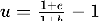
وتقوية تنافسية لمشابك
العصبون الأكثر نشاطًا فقط في الجوار؛ ومع ذلك لم تكن الشبكة تقاسم الأوزان
على المستوى بأكمله، ولذا بقيت حسّاسة لانزياحات الصورة129.
وبالتوازي ظهرت ثلاثة أعمال بارزة في مجالات مجاورة: فقد أنشأ جيمس ألبوس
المعمارية السريعة ذات التجزئة المحلية للمتحكم المخيخي
CMAC بحقول مستقبِلة خشنة متراكبة (№ 53)130؛ وأدخل ديفيد
شيرينغتون وسكوت كيركباتريك في Physical Review Letters نموذج
الزجاج السبيني SK القابل للحل بروابط عشوائية متناوبة
الإشارة (№ 54)126، الذي صارت طريقة
النسخ التحليلية فيه أساسًا لحساب الانتقالات الطورية وسعة الشبكات العصبية؛
ونشر جون هولاند مونوغراف «Adaptation in Natural and Artificial
Systems» (№ 55)، واضعًا رياضيات الخوارزميات الجينية.
1976
المجالات: التحسين الحلقات الأساس
في يونيو 1976 نشر سيبو لينّاينمّا في المجلة الدولية BIT Numerical
Mathematics مقالة بالإنجليزية «Taylor Expansion of the
Accumulated Rounding Error» (№ 56)23. وإلى جانب الخوارزميات الكاملة
من الرتبة الأولى والرتب العليا للاشتقاق العكسي على الرسم الحسابي، حلّل
لينّاينمّا لأول مرة المشكلة الجوهرية لذاكرة المرور العكسي — الحاجة إلى حفظ
الحالات الوسيطة لجميع العمليات وطرق خفض ذروة استهلاك الذاكرة، متنبئًا
بتقنيات إعادة الحساب الانتقائي للتنشيطات الحديثة (activation /
gradient checkpointing، المستخدمة خصوصًا في تدريب Ring Attention
وDeepSeek mHC2).
وفي العام نفسه صاغ ستيفن غروسبرغ في عمل من جزأين في Biological
Cybernetics (№ 57)126 معضلة الاستقرار—اللدونة (كيف
تُعاد تدريب الشبكة على أصناف جديدة دون التدمير الكارثي للتمثيلات المتعلَّمة
سابقًا) واقترح آلية ترشيح رنيني للسمات الصاعدة بالتوقعات النازلة
(Adaptive Resonance Theory, ART)، وبنى ديفيد ويلشاو
وكريستوف فون دير مالسبورغ نموذجًا مشبكيًا للتنظيم الذاتي للإسقاطات
الطبوغرافية المتصلة للشبكية (№ 58).
1977
المجالات: الحلقات الذاكرة التحسين
في عام 1977 نشر جيمس أندرسون وجاك سيلفرستاين وستيفن ريتز ورانديل جونز في
Psychological Review النموذج التكراري اللاخطي للذاكرة الفئوية
Brain-State-in-a-Box (BSB) (№ 59)122، الذي يقيّد مسار
التغذية الراجعة الموجبة بجدران مكعب الوحدة الفائق :
تعزّز مصفوفة روابط هيب المتناظرة
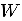
الإسقاطات على امتداد المتجهات الذاتية الرئيسة إلى أن تستقر الحالة في رأس
من رؤوس المكعب الفائق يقابل نمطًا أوليًا متقطعًا نقيًا للذاكرة. وفي العام
نفسه نشر سيونيتشي أماري النظرية الرياضية القانونية للإثارات الموضعية
(«نتوءات» الذاكرة العاملة) في الحقول العصبية المتصلة ذات الكبح الجانبي
(№ 60)124، وأصدر تيوفو كوهونن مونوغراف «Associative Memory» (№
61)، وأضفى آرثر ديمبستر ونان ليرد ودونالد روبين في JRSS-B طابعًا
صوريًا على خوارزمية EM لتعظيم أرجحية النماذج ذات
المتغيرات المخفية عبر حدّ ينسن التغايري (№ 62) — وهو الأساس التحليلي
لتدريب MoE والمرمّزات التلقائية التغايرية.
1978
المجالات: الذاكرة الحلقات الأساس
في عام 1978 نشر ويليام ليتل وغوردون شو في Mathematical
Biosciences عمل «Analytic Study of the Memory Storage Capacity
of a Neural Network» (№ 63)127. فبحلّ تحليلي لنموذج خطّي مُبسَّط لشبكة
عصبية عشوائية ذات روابط لدنة، بيّن المؤلفان بصرامة أن السعة المعلوماتية
للذاكرة العصبية الموزَّعة تتناسب مع عدد المشابك، لا مع عدد العصبونات 127. وفي الهندسة الحديثة يفسّر هذا القانون
بالذات لماذا يتطلب تخزين حقائق العالم توسيع العدد الإجمالي لمعاملات
الأوزان إلى مئات المليارات وإلى التريليونات في معماريات MoE المتناثرة
حتى حين تكفي مجموعة جزئية فعّالة صغيرة من العصبونات لمعالجة رمز
واحد.
وفي العام نفسه أدخل غيديون شفارتس في Annals of Statistics
المعيار المعلوماتي البايزي BIC لاختيار بُعد النماذج
المعلمية (№ 64)، وقدّم ستيفن غروسبرغ نظرية التجزئة الهرمية (chunking)
للمتتاليات في الذاكرة العاملة (№ 65)109، وحسّن كونيهيكو فوكوشيما قاعدة
المشبك من النمط التربيعي المتوسط للتعلّم الذاتي العميق دون معلّم (№
66)129.
1979
المجالات: المرمِّز الأساس
في أكتوبر 1979 نشر كونيهيكو فوكوشيما في المجلة اليابانية
Transactions of the IECE of Japan (المجلد J62-A، № 10، ص.
658–665) أول مقالة عن معمارية Neocognitron — أول شبكة
عصبية التفافية عميقة ثابتة إزاء الانزياح المكاني لصور الدخل (№ 67)7.
وبوحي من اكتشاف هيوبل وفيزل، نظّم فوكوشيما الشبكة بوصفها تناوبًا متعدد
المراحل لأزواج من الطبقات من نوعين: مستويات -الخلايا، حيث تملك جميع
عصبونات المستوى الواحد أوزانًا مشتركة متطابقة تمامًا (weight
sharing) وتستخرج سمة محلية في كل نقطة من الحقل ثنائي الأبعاد (عملية
التفاف ثنائي الأبعاد مع المقوِّم ReLU)، ومستويات -الخلايا التي تجمع استجابات
الجوار المحلي لخلايا - مع خفض الدقة
(عملية التجميع المكاني pooling)، وبفضل ذلك يتراكم هامش خطأ الانزياح
المسموح به برفق من طبقة إلى أخرى دون فقدان الهندسة المتبادلة للتفاصيل87.
وفي العام نفسه نشر ليون كوبر وف. ليبرمان وإركي أويا في Biological
Cybernetics نموذجًا مشبكيًا لتشكّل انتقائية عصبونات القشرة البصرية (№
68).
1980
المجالات: المرمِّز التحسين
في أبريل 1980 صدر في Biological Cybernetics (المجلد 36، ص.
193–202) المنشور الكلاسيكي بالإنجليزية لكونيهيكو فوكوشيما
«Neocognitron: A Self-Organizing Neural Network Model for a
Mechanism of Pattern Recognition Unaffected by Shift in Position»
(№ 69)86، الذي جعل التسلسل الهرمي الالتفافي-التجميعي معروفًا لدى المجتمع
العالمي كله. وكانت استجابة خلية - عند
الموضع من مستوى السمة في الطبقة مع
الكبح القسمي بالنشاط التربيعي المتوسط
في النافذة المحلية تُعطى
بالمعادلة:
وبذلك اكتمل بناء كل الطوبولوجيا البنيوية للشبكات البصرية العميقة —
التفافات ثنائية الأبعاد متعددة القنوات بمشاركة الأوزان، والتقويم ، والتطبيع التربيعي المتوسط المحلي، والتجميع
المكاني — بانتظار أن تحل محل قواعد التنظيم الذاتي المحلية انحدارٌ تدريجي
شامل87. وفي العام نفسه نشر ستيفن غروسبرغ في Psychological
Review مقالة جامعة عن الشيفرات المعرفية الرنينية (№ 70)، وبرهن
فيلفريد باور وفولكر شتراسن مبرهنة التعقيد الجبري الشهيرة (Baur–Strassen
Theorem، № 71): فحساب تدرّج أي دالة كسرية في عدة متغيرات على دارة حسابية
لا يتطلب أكثر من خمسة أضعاف عدد عمليات حساب الدالة نفسها114.
1981
المجالات: الذاكرة الحلقات التحسين
في عام 1981 أصدر جيفري هينتون وجيمس أندرسون المونوغراف الجماعي البرنامجي
«Parallel Models of Associative Memory» (№ 72)140، الذي برّر
الانتقال من العقد الرمزية الموضعية («مفهوم واحد — خلية واحدة») إلى
التمثيلات المتجهية الموزَّعة الكثيفة (distributed
representations)، حيث يُشفَّر كل مفهوم بنمط نشاط لعناصر كثيرة، مما يتيح
تعميمًا تلقائيًا بحسب تشابه السمات الدقيقة. وفي العام نفسه قدّم جيمس
ماكليلاند وديفيد روميلهارت في Psychological Reviewنموذج التنشيط التفاعلي لإدراك الحروف والكلمات بتغذيات
راجعة ثنائية الاتجاه بين الطبقات (№ 73)، ونشر أندرو بارتو وريتشارد ساتون
وبيتر براور في Biological Cybernetics نموذج الشبكة
الترابطية البحثية (№ 74)، جامعين التوليد العشوائي للأفعال مع
التعلّم بإشارة التعزيز العددية — السلف المباشر لطرائق التعلّم المعزَّز
التدرّجية.
1982
المجالات: الحلقات الذاكرة المرمِّز الأساس
في أبريل 1982 نشر جون هوبفيلد في PNAS مقالته الشهيرة
«Neural Networks and Physical Systems with Emergent Collective
Computational Abilities» (№ 75)124. فقد قرن بالشبكة التكرارية
الثنائية ذات مصفوفة الأوزان المتناظرة
()
دالة طاقة ليابونوف فيزيائية صريحة:
وبرهن هوبفيلد على عدم تزايد الطاقة رتابةً () عند التحديثات العتبية غير المتزامنة وعلى التقارب إلى الحدود الدنيا المحلية —
جواذب الذاكرة المعنونة بالمحتوى (تبلغ سعة الصيغة الثنائية الكلاسيكية نحو
من الأنماط غير المترابطة، بينما تمتلك
شبكات هوبفيلد الأسّية الحديثة للأعوام 2016–2020 سعة أسّية وتكافئ انتباه
softmax في المحوّل142).
وفي العام نفسه 1982 نشر بول ويربوس في مؤتمر IFIP للمرة الأولى صراحةً
تطبيق الانتشار العكسي للخطأ مباشرة على الشبكات العصبية الاصطناعية (№
76)7؛ وأنشأ تيوفو كوهونن خرائط السمات ذاتية التنظيم
(SOM) الطبوغرافية (№ 77)؛ واشتق إركي أويا قاعدة اللدونة المحلية
المطبَّعة (قاعدة أويا،
№ 78) التي تستخرج المتجه الذاتي الرئيس لمصفوفة تغاير البيانات (PCA
العصبي)؛ واقترح بيننستوك وكوبر ومونرو قاعدة التعديل المشبكي اللاخطية ذات
العتبة المنزلقة BCM (№ 79)؛ وصدر بعد الوفاة كتاب ديفيد
مار الأساسي «Vision» (№ 80).
1983
المجالات: التحسين الحلقات
في عام 1983 نشر يوري يفغينيفيتش نيستيروف في «Доклады АН СССР»
(Soviet Mathematics Doklady، 27(2)، 372–376) الطريقة المثلى
لتصغير الدوال المحدبة الملساء بسرعة تقارب — طريقة نيستيروف التدرّجية المتسارعة
(NAG) (№ 81)143:
وقد وفّر حساب التدرّج في النقطة القصورية الاستباقية تصحيحًا للمسار عند المنعطفات الحادة في مشهد
الخسارة، وصار معيارًا في التعديلات الحديثة لـSGD وNAdam وللزخم المتعامد
Muon. وفي عدد مايو من Science قدّم سكوت كيركباتريك وتشارلز جيلات
وماريو فيكي التحسين الشامل العشوائي بطريقة التلدين المحاكى
(Simulated Annealing) مع احتمال انتقال ميتروبوليس (№ 82)144، ونشر أندرو بارتو وريتشارد ساتون
وتشارلز أندرسون في IEEE TSMC المعمارية العصبية
Actor–Critic على مسألة إبقاء البندول المقلوب (№
83)144.
1984
المجالات: الأساس الحلقات الانتشار
في نوفمبر 1984 نشر ليزلي فاليانت في Communications of the ACM
مقالة «A Theory of the Learnable» (№ 84)146، التي أرست الأساس
الحسابي-الإحصائي الصارم للتعلّم الصحيح تقريبيًا احتماليًا (PAC
Learning): إضفاء الصورية على تعقيد العيّنة والتعقيد الحسابي
لبلوغ خطأ التعميم بموثوقية . وفي العام نفسه عمّم جون هوبفيلد نموذجه على
دارات ديناميكية متصلة بسيغمويد أملس رتيب ودالي ليابونوف متصل (№ 85)، وأدخل الأخوان
ستيوارت ودونالد جيمان في IEEE TPAMIأخذ العيّنات بطريقة
غيبس (Gibbs Sampling) على الحقول العشوائية المركوفية بتوزيع
غيبس للاستعادة البايزية للصور المضجَّجة
(№ 86)، وأصدر تيوفو كوهونن مونوغرافًا موسَّعًا «Self-Organization and
Associative Memory» (№ 87).
1985
المجالات: الأساس الذاكرة الانتشار
في عام 1985 نشر ديفيد أكلي وجيفري هينتون وتيرينس سيجنوفسكي في
Cognitive Science خوارزمية تدريب آلات بولتزمان
(№ 88)146 — شبكات طاقية عشوائية ذات متغيرات مخفية تنمذج توزيع المتجهات المرئية بالتهميش .
وانحصر تدرّج تباعد كولباك—لايبلر بالنسبة إلى الوزن المتناظر في فرق الارتباطات الثنائية في نظامين
ديناميكيين حراريين:
ومع أن التلدين الطويل بـMCMC حدّ من حجم آلات بولتزمان كاملة الاتصال، فقد
كان ذلك أول عرض صارم نظريًا لتدريب التمثيلات الموزَّعة العميقة في الشبكات
التوليدية150. وفي العام نفسه 1985 نشر يان لوكون في مؤتمر Cognitiva
85 في باريس (№ 89) وديفيد باركر في تقرير MIT
«Learning-Logic» (№ 90) بصورة مستقلة مخططات تدرّجية للانتشار
العكسي للخطأ للشبكات متعددة الطبقات، ونظّم ديفيد روميلهارت وديفيد زيبسر
التجميع التنافسي للسمات (№ 91).
1986
المجالات: الأساس الحلقات التحسين
في أكتوبر 1986 نشر ديفيد روميلهارت وجيفري هينتون ورونالد ويليامز في
Nature مقالتهم الشهيرة «Learning Representations by
Back-Propagating Errors» (№ 92)، تزامنًا مع صدور العمل الأساسي ذي
المجلدين لمجموعة PDP «Parallel Distributed Processing» (MIT
Press، № 93)7. وبيّن المؤلفون أن البيرسبترون متعدد الطبقات (MLP) ذا
التنشيطات الملساء
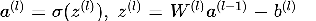
، المدرَّب بالنشر
التكراري لمتجه الحساسية:
يبني في الطبقات الوسيطة تمثيلات دلالية غير بسيطة ويحل المحمولات غير
القابلة للفصل خطيًا151. وفي إصدار PDP نفسه أدخل بول سمولينسكي الشبكة
الطاقية ثنائية الأجزاء بلا روابط داخل الطبقة Harmonium
— المكافئة رياضيًا لـآلة بولتزمان المقيّدة (RBM) ذات
الاستنتاج الشرطي الدقيق بخطوة واحدة (№
94)؛ واقترح مايكل جوردان شبكة تكرارية بتغذية راجعة من الخرج إلى متجه
حالة سياقي (Jordan
RNN، № 95)؛ وأظهر تيرينس سيجنوفسكي وتشارلز روزنبرغ مولِّف النسخ
الفونيمي للنص الإنجليزي NETtalk (№ 96).
1987
المجالات: STT الحلقات المرمِّز
في عام 1987 أنشأ ألكسندر فايبل وتاشيوكي هانازاوا وجيفري هينتون وكيوهيرو
شيكانو وكيفن لانغ شبكة التأخير الزمني (Time-Delay Neural
Network, TDNN) للتعرف على الفونيمات الكلامية (№ 97)87 — أول
شبكة التفافية أحادية البعد على محور الزمن بأوزان مشتركة، ثابتة إزاء
انزياح الصيغ الصوتية (formants) ومدرَّبة بالانتشار العكسي للخطأ. وفي العام
نفسه نشر جيفري هينتون وديفيد بلوت عمل «Using Fast Weights to Deblur
Old Memories» (№ 98)45، مزوِّدين كل رابط بزوج من وزن بطيء طويل المدى
ووزن سياقي سريع الاضمحلال (Fast Weights) — وهو المصدر
المفاهيمي المباشر لطبقات الانتباه الخطي الحديثة والتدريب أثناء الاختبار
(TTT وTitans). وبالتوازي اقترح دانا بالارد في مؤتمر AAAI التدريب المسبق
الطبقي الوحدوي للتسلسلات الهرمية العميقة بـكومة من المرمّزات
التلقائية (№ 99)، وأضفى غيل كاربنتر وستيفن غروسبرغ الصورية على
معمارية الرنين التكيفي ART 1 (№ 100)110، واشتق فرناندو
بينيدا في Physical Review Letters الانتشار العكسي المتصل
للتدرّجات للنقاط الثابتة للجواذب التكرارية (Recurrent
Backpropagation، № 101) — السلف التحليلي للشبكات التوازنية
DEQ.
1988
المجالات: المرمِّز التحسين الحلقات
في عام 1988 نشر وي تشانغ ومعاونوه أول شبكة عصبية التفافية ثنائية
الأبعاد ثابتة إزاء الانزياح (Shift-Invariant 2D CNN) للتعرف على
الرموز، مدرَّبة مباشرة بطريقة الانتشار العكسي للخطأ (№ 102)20. وأدخل ديفيد
برومهيد وديفيد لو في Complex Systemsشبكات الدوال
الأساسية الشعاعية (RBF Networks) (№ 103). وفي نظرية التعلّم نشر ريتشارد ساتون
في مجلة Machine Learning العمل الأساسي عن التعلّم بطريقة
الفروق الزمنية TD() (№
104)152، الذي يحدّث معاملات المتنبّئ بحسب باقي بيلمان قبل انتهاء الحلقة. وفي الوقت نفسه برهن
إيرفيه بورلار وإيف كامب أن المرمّز التلقائي الخطي ذا عنق الزجاجة بالبعد
يتعلّم مسقطًا متعامدًا على الفضاءات
الجزئية المفردة الرئيسة في SVD (№ 105)، وأدخل بارت كوسكو الذاكرة
الترابطية غير المتجانسة ثنائية الاتجاه BAM (№ 106).
1989
المجالات: المرمِّز الأساس التحسين الحلقات
في عام 1989 نشر يان لوكون وبرنهارد بوزر وجون دينكر ودوني هندرسون
وريتشارد هاورد وواين هبّارد ولورنس جاكل في Neural Computation
مقالة «Backpropagation Applied to Handwritten Zip Code
Recognition» (№ 107)87، فدرّبوا شبكة التفافية عميقة بمرشحات مشتركة
5×5 وأخذ عيّنات جزئي (stride 2) مباشرة على بكسلات مطبَّعة للرموز البريدية
المكتوبة بخط اليد في USPS، وأظهروا تحسنًا حادًا في التعميم بفضل المشاركة
المكانية للأوزان. وفي العام نفسه برهن جورج سيبنكو (№ 108) وبصورة مستقلة
كورت هورنيك وماكسويل ستينتشكومب وهالبرت وايت (№ 109) مبرهنة
التقريب الشامل للدوال المتصلة على المجموعات المتراصة بواسطة
بيرسبترونات ثنائية الطبقات بتنشيط غير كثير حدود. وتميّز العام أيضًا
بخوارزمية التدريب المتصلة للشبكات التكرارية RTRL
لرونالد ويليامز وديفيد زيبسر (№ 110)، وبإنشاء
Q-learning في أطروحة كريستوفر واتكنز (№ 111)، وبطريقة
الذاكرة المحدودة L-BFGS لدونغ ليو وخورخي نوسيدال (№
112)153 وبالتفسير الاحتمالي لدالة Softmax عند جون بريدل
(№ 113).
1990
المجالات: الحلقات التحسين الأساس
في عام 1990 نشر جيفري إلمان في Cognitive Science مقالة
«Finding Structure in Time» (№ 114)154، التي جعلت
الشبكة التكرارية البسيطة (Simple RNN / Elman Network) أداة أساسية لنمذجة المتتاليات وأظهرت
النشوء التلقائي لعناقيد نحوية-دلالية في الفضاء المخفي عند التنبؤ بالكلمة
التالية. وثبّت بول ويربوس في Proceedings of the IEEE الصياغة
العامة للانتشار العكسي عبر الزمن (BPTT) بالنشر خطوةً
بخطوة للرسم (№ 115). وفي مؤتمر NIPS قدّم يان لوكون وجون دينكر وسارا سولا
طريقة التشذيب المتناثر للأوزان من الرتبة الثانية Optimal Brain
Damage (OBD) بقطر الهسيان (№
116) — السلف المباشر لخوارزميات ضغط LLM الحديثة. وبالتوازي اقترح يورغن
شميدهوبر لعبة مينيماكس بين شبكتين في إطار الفضول الاصطناعي
التنافسي (№ 117)7، وبرّر لارس هانسن وبيتر سالامون خفض تباين
الخطأ في مجموعات الشبكات العصبية (ensembles) (№
118).
1991
المجالات: MoE الحلقات الانتباه/LLM الأساس
في عام 1991 وُضعت ثلاث آليات أساسية تحدّد معمارية النماذج الرائدة للأعوام
2024–2027. فقد نشر روبرت جاكوبز ومايكل جوردان وستيفن نولان وجيفري هينتون
في Neural Computation مقالة «Adaptive Mixtures of Local
Experts» (أول MoE، № 119)156. وباستبدال متوسط
الخطأ التربيعي بتعظيم لوغاريتم أرجحية خليط غاوسي بإدارة شبكة بوابية :
حقق المؤلفون تخصصًا تنافسيًا للخبراء في
مناطق مختلفة من فضاء الدخل، إذ يتلقى التدرّج في معظمه الخبيرُ ذو أكبر
مسؤولية لاحقة عن المثال.
وفي يونيو من العام 1991 نفسه دافع زيب هوخرايتر بإشراف يورغن شميدهوبر عن
بحث الدبلوم (№ 120)7، مقدِّمًا للمرة الأولى تحليلًا صارمًا لتلاشي
التدرّجات وانفجارها في الشبكات العميقة والتكرارية عبر جداء
اليعقوبيات . وفي ربيع 1991 اقترح
شميدهوبر معمارية Fast Weight Programmers (№ 121؛ نُشرت
في مجلة 1992)7، حيث تولّد شبكة بطيئة ديناميكيًا متجهات المفاتيح والقيم
لإعادة الكتابة التراكمية لمصفوفة الأوزان السريعة والقراءة
— بنية متماثلة رياضيًا مع الانتباه الذاتي الخطي غير المطبَّع22. وختم العامَ
المرمّزاتُ التلقائية اللاخطية خماسية الطبقات لمارك كرامر (№ 122) والكتاب
الدراسي الكلاسيكي في الميكانيكا الإحصائية للشبكات العصبية لهيرتس وكروغ
وبالمر (№ 123).
1992
المجالات: التحسين الحلقات الأساس
في عام 1992 نشر رونالد ويليامز في Machine Learning تقدير تدرّج
السياسة REINFORCE مع مستوى أساس مطروح
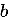
لخفض التباين (№ 124):
الذي صار الأساس المباشر لتحسين النماذج اللغوية المستدلّة بطريقتَي PPO
وGRPO53. وفي الوقت نفسه أدخل يورغن شميدهوبر في Neural
Computationضاغط التاريخ العصبي (№ 125)22 — تدريبًا
مسبقًا هرميًا ذاتي الإشراف لـRNN، لا ينقل إلى المستوى الأعلى سوى الرموز
غير القابلة للتنبؤ («المدهشة») مع الضغط اللاحق («التقطير») لمعلّم عميق في
شبكة طالب مدمجة7. وبرهن بوريس بولياك وأناتولي يوديتسكي على الأمثلية
المقاربية لمتوسطة مسار أوزان SGD
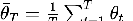
(№ 126) — الأساس النظري لأهداف EMA في DINO
وJEPA والانتشار؛ وبرّر أندرس كروغ وجون هيرتس التنظيم باضمحلال الأوزان
(Weight Decay، № 127)؛ وجمع بوزر وغيون وفابنيك هامش
المستوى الفائق مع خدعة النواة في COLT (№ 128).
1993
المجالات: المرمِّز الأساس التحسين
في عام 1993 قدّم جين برومّلي وإيزابيل غيون ويان لوكون ومعاونوهم في NIPS
الشبكات العصبية التوأمية (Siamese Networks) (№ 129):
برجان التفافيان متطابقان بأوزان مشتركة يُسقطان زوج مدخلات في فضاء متري
مشترك من قرب جيب التمام — نموذج يقوم عليه جميع المرمِّزات التقابلية
الحديثة (CLIP وSigLIP والاسترجاع الكثيف). وفي مؤتمر COLT صاغ جيفري
هينتون ودرو فان كامب مبدأ أدنى طول وصف للأوزان عبر تصغير الطاقة الحرة
التغايرية (الاستدلال البايزي
التغايري في الشبكات العصبية، № 130)، الذي استبق الدالي ELBO.
وفي العام نفسه برهن أندرو بارون على استقلال سرعة التقريب
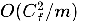
بشبكة ثنائية الطبقات عن بُعد الفضاء للدوال ذات المعيار الطيفي لفورييه المحدود
(№ 131)، وعمّم بابك حسيبي وديفيد ستورك تشذيب الهسيان إلى Optimal
Brain Surgeon (OBS) الكامل غير القطري (№ 132) — القاعدة
الرياضية لمكمِّمات أوزان LLM الحديثة (GPTQ).
1994
المجالات: الحلقات MoE التحسين
في عام 1994 نشر يوشوا بنجيو وباتريس سيمار وباولو فراسكوني في IEEE
Transactions on Neural Networks المبرهنة الصارمة «Learning
Long-Term Dependencies with Gradient Descent is Difficult» (№ 133)،
مبرهنين على التعارض الأساسي في النظم الديناميكية اللاخطية: فالتخزين
المقاوم للتشويش لبتّ واحد في جاذب زائدي يتطلب قيمًا ذاتية لليعقوبي
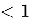
، مما يستدعي تلقائيًا اضمحلالًا أسّيًا لتدرّج
الخطأ عبر الزمن. وفي العام نفسه عمّم مايكل جوردان وروبرت جاكوبز خليط
الخبراء إلى خليط خبراء هرمي (HME) شجري مع تعلّم EM سريع
(№ 134)، واشتق باروخ بيرلماتر المؤثر التفاضلي
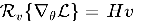
للضرب الدقيق للهسيان في متجه في عملية دون تخزين مصفوفة المشتقات الثانية (№
135)، وصدرت الطبعة الأولى من المقرر الأساسي لسايمون هايكن «Neural
Networks: A Comprehensive Foundation» (№ 136).
المجالات: المرمِّز الأساس الحلقات
في يونيو 1996 بيّن برونو أولشاوزن وديفيد فيلد في مجلة Nature
(«Emergence of Simple-Cell Receptive Field Properties by Learning a
Sparse Code for Natural Images»، № 142) أن تصغير خطأ إعادة بناء
الصور الطبيعية بقاموس فائض مع عقوبة تناثر - هي يشكّل
تلقائيًا موجات غابور المحلية الموجَّهة — الأساس الرياضي لكل من الترميز
المتناثر والمرمّزات التلقائية المتناثرة الحديثة (Sparse Autoencoders,
SAE) لقابلية تفسير LLM. وفي العام نفسه برهن رادفورد نيل في المونوغراف
«Bayesian Learning for Neural Networks» (№ 143) على تقارب
الشبكات العصبية العشوائية التهيئة ذات العرض اللانهائي () إلى العمليات الغاوسية
(NNGP)، وأدخل كريستوف غوللر وأندرياس كوشلر الانتشار العكسي على
الرسوم اللادورية والأشجار النحوية (№ 144)، وصدر كتاب برايان ريبلي
«Pattern Recognition and Neural Networks» (№ 145).
1997
المجالات: الحلقات الذاكرة التحسين
في نوفمبر 1997 نشر زيب هوخرايتر ويورغن شميدهوبر في Neural
Computation معمارية الذاكرة الطويلة قصيرة المدى (Long
Short-Term Memory, LSTM) (№ 146)7. فللتغلب على تلاشي التدرّجات
استبدل المؤلفان التحويل اللاخطي الانضغاطي للحالة بـدوّارة خطأ
ثابت (Constant Error Carousel, CEC) خطية ذات يعقوبي وحدوي عبر الزمن، وحمَوا الكتابة
والقراءة ببوابتين ضربيتين: بوابة الدخل () وبوابة الخرج ():
وفي العام نفسه 1997 أنشأ مايكل شوستر وكولديب باليوال في IEEE
TSPالشبكات التكرارية ثنائية الاتجاه (BiRNN) (№
147) التي تجمع بين النشرين الزمنيين الأمامي والخلفي للترميز السياقي
الكامل؛ وأدخل هوخرايتر وشميدهوبر معيار البحث عن الحدود الدنيا
المسطحة (Flat Minima) ذات انحناء الهسيان الصغير لتحسين التعميم
(№ 148)؛ ونشر يوآف فرويند وروبرت شابير خوارزمية التعزيز الموزون
AdaBoost (№ 149).
1998
المجالات: المرمِّز التحسين الأساس
في نوفمبر 1998 نشر يان لوكون وليون بوتو ويوشوا بنجيو وباتريك هافنر في
Proceedings of the IEEE المقالة الضخمة «Gradient-Based
Learning Applied to Document Recognition» (№ 150)، مثبّتين الشبكة
الالتفافية المرجعية ذات 7 طبقات LeNet-5 (خطأ 0.8% على
مجموعة بيانات MNIST) وشبكات المحوِّلات البيانية (GTN)
القابلة للتدريب الشامل لقراءة وثائق متعددة الرموز دون تجزئة مسبقة،
مستكملين إياها بدليل عملي لتقييس التنشيطات والتهيئة «Efficient
BackProp» (№ 151). وفي الوقت نفسه اشتق سيونيتشي أماري في Neural
Computationالتدرّج الطبيعي (Natural Gradient)
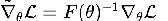
في المقياس الريماني لمصفوفة فيشر
المعلوماتية (№ 152)159 — الأساس
اللامتغير إزاء المعلمة لخوارزميات الرتبة الثانية K-FAC وShampoo وSOAP
والمناطق الموثوقة في PPO160. وفي العام نفسه صدرت المونوغرافات الكلاسيكية
لريتشارد ساتون وأندرو بارتو في التعلّم المعزَّز (№ 153)152 ولفلاديمير
فابنيك «Statistical Learning Theory» (№ 154)99.
1999
المجالات: الحلقات الذاكرة الأساس
في التدفقات المتصلة بلا علامات إعادة ضبط كانت خلية الذاكرة الخطية في LSTM الأصلية لعام 1997 تتشبّع بلا حدود.
وحلّ فيليكس غيرس ويورغن شميدهوبر وفريد كامينز هذه المشكلة في مؤتمر ICANN
1999 (№ 155)155 بإدخال بوابة النسيان (Forget Gate)
الضربية ، التي مكّنت الخلية من محو
الحالة البالية ديناميكيًا. ومن اللافت أن الانتقال من DeltaNet الخطي إلى
Gated DeltaNet وKDA في 2024–2025 أعاد
إنتاج الفكرة الرياضية نفسها بإدخال مضروب اضمحلال معتمد على الدخل قبل الذاكرة المصفوفية24. وفي العام نفسه نشر
دانيال لي وسيباستيان سيونغ في Natureالتحليل المصفوفي
غير السالب (NMF) (№ 156)، مبيّنين أن منع الطرح المتبادل للسمات
عند يستخلص مكوّنات جمعية قابلة للتفسير
(وهو مبدأ نُقل في 2025 إلى الإسقاطات غير السالبة في معمارية DeepSeek mHC2)،
وقدّم نين تشيان تحليلًا طيفيًا دقيقًا للزخم في الانحدار التدريجي (№
157).
2000
المجالات: الحلقات الذاكرة الأساس
في عام 2000 نشر غيرس وشميدهوبر وكامينز النسخة المجلّية الكاملة من
LSTM ببوابة النسيان في Neural Computation (№
158) وأكملاها بـوصلات «ثقب الباب» (Peephole
Connections) من حالة الخلية
مباشرة إلى البوابات لعدّ فواصل الزمن بدقة (№ 159):
وفي مؤتمر NIPS 2000 أدخل شارل دوغا ويوشوا بنجيو ومعاونوهما دالة التنشيط
الملساء الموجبة تمامًا Softplus (№ 160)161، وهي الدالة الأصلية للسيغمويد
اللوجستي، التي هي في SSM الحديثة (Mamba-1/2/3) والشبكات الدلتوية المعلِّم
القياسي لخطوة التقطيع 24. وفي الوقت
نفسه صدرت في مجلة Science الخوارزميات الهندسية لتقويم منطويات
البيانات اللاخطي Isomap لتننباوم وآخرين (№ 161)
وLLE لروايس وسول (№ 162).
2001
المجالات: الحلقات المرمِّز الأساس
في عام 2001 قدّم هربرت ييغر مفهوم الحوسبة الخزّانية في تقرير عن
شبكات حالة الصدى (Echo State Networks, ESN) (№ 163):
خزّان تكراري ثابت كبير بنصف قطر طيفي
يُسقط تاريخ الدخل لاخطيًا في حالة عالية الأبعاد ، يُدرَّب فوقها بالانحدار الخطي مصفوفة القراءة
الخارجة وحدها دون BPTT. وفي مؤتمر ICML 2001 أدخل جون لافرتي وأندرو
ماكالوم وفرناندو بيريرا الحقول العشوائية الشرطية (Conditional
Random Fields, CRF) (№ 164)، التي تطبّع عالميًا احتمالات متتالية
الخرج بأكملها
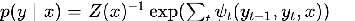
وأزالت انحياز النماذج
المركوفية المطبَّعة محليًا. وفي العام نفسه صدرت الطبعة الأولى من المونوغراف
الإحصائي الأساسي لهاستي وتبشيراني وفريدمان «The Elements of
Statistical Learning» (№ 165).
2002
المجالات: الانتشار الأساس الحلقات
في عام 2002 نشر جيفري هينتون في Neural Computation خوارزمية
التباعد التقابلي (-step
Contrastive Divergence, CD-) (№
166)142، التي سرّعت جذريًا تدريب النماذج الطاقية وRBM: فبدلًا من الإيصال
الطويل لسلسلة ماركوف إلى الكثافة المنمذَجة المتوازنة، يُقرَّب الطور السالب
للتدرّج بخطوة واحدة فقط
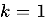
من أخذ عيّنات
غيبس تنطلق من متجه بيانات حقيقي. وقدّم فولفغانغ ماس وتوماس ناتشلاغر وهنري
ماركرام المناظر النبضي للشبكات الخزّانية — آلات الحالات السائلة
(LSM) (№ 167)؛ وعمّم مايكل كولينز في EMNLP البيرسبترون ومبرهنة
نوفيكوف على مسائل التنبؤ البنيوي بالمتتاليات مع فك ترميز فيتربي (№ 168)؛
وأصدر رونان كولوبير وسامي بنجيو وجوني ماريتيز مكتبة C++ مفتوحة وحدوية
Torch (№ 169)، التي صارت سلف PyTorch الحديثة.
2003
المجالات: الأساس الانتباه/LLM المرمِّز
في عام 2003 نشر يوشوا بنجيو وريجان دوشارم وباسكال فنسان وكريستيان جوفين
في JMLR مقالة «A Neural Probabilistic Language Model»
(№ 170)، التي استبدلت العدّادات المتقطعة لـ-غرام بمصفوفة قابلة للتعلّم من
التضمينات المتجهية الكثيفة للكلمات وببيرسبترون أملس فوق نافذة مسلسلة من الرموز
السابقة :
وقد نقل التدريب المشترك للتضمينات والطبقة المخفية الكتلة الاحتمالية إلى
تركيبات كلمات متقاربة دلاليًا لم تظهر قط حرفيًا في المدوّنة، فاتحًا الطريق
مباشرة أمام LLM الحديثة. وفي العام نفسه أدخل باتريس سيمار وديف
شتاينكراوس وجون بلات التشوهات المرنة للبيانات وقيّسوا الممارسات
الالتفافية البسيطة في ICDAR (خطأ 0.4% على MNIST، № 171)، وأصدر ديفيد
ماكاي العمل الأساسي «Information Theory, Inference, and Learning
Algorithms» (№ 172).
2004
المجالات: التحسين الأساس
في عام 2004 نشر كيون-سو أو وكيتشول جونغ في Pattern Recognition
مقالة «GPU Implementation of Neural Networks» (№ 173)، ناقلَين
للمرة الأولى عمليات ضرب المصفوفات في شبكة عصبية كاملة الاتصال إلى خط
أنابيب مظلِّلات البكسل في بطاقة الفيديو (ATI Radeon 9700 Pro)
بـتسريع 20× قياسًا إلى المعالج المركزي7. وفي مؤتمر ICML
2004 برهن أندرو أنغ بصرامة أنه مع وجود عدد أسّي من السمات الضجيجية يزداد
تعقيد العيّنة للتنظيم بـ- لوغاريتميًا فقط
، في حين يزداد خطيًا في الطرائق الثابتة دورانيًا ذات عقوبة
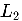
- (№ 174). وفي NIPS وسّع ماكس ويلينغ وميخال
روزن-تسفي وجيفري هينتون معمارية RBM إلى التوزيعات المتصلة للعائلة الأسّية
(Exponential Family Harmoniums، № 175)162.
2005
المجالات: الانتشار STT المرمِّز الأساس
في عام 2005 نشر آابو هيفارينن في JMLR طريقة مطابقة دالة
الدرجة (Score Matching) (№ 176)161، التي مكّنت من تدريب الكثافات
الطاقية غير المطبَّعة دون حساب دالة
التجزئة بتصغير تباعد تدرّجات لوغاريتم
الكثافة بالنسبة إلى متجه البيانات (مع
استبعاد المجهول بالتكامل
بالتجزئة):
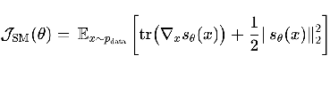
وفي العام نفسه جمع أليكس غريفز ويورغن شميدهوبر بين LSTM ذات البوابات
والنشر ثنائي الاتجاه عبر الزمن (BiLSTM) والانتشار
العكسي الكامل عبر البوابات لتصنيف الفونيمات الكلامية (№ 177)؛ وأدخل
سوميت تشوبرا وريا هادسيل ويان لوكون في CVPR دالة الخسارة المترية
Contrastive Loss (№ 178)؛ واقترح ماركو غوري وغابرييلي
مونفاردييني وفرانكو سكارسيلي أول صياغة للشبكات العصبية البيانية
(GNN) (№ 179)؛ وسرّع فريدريك موران ويوشوا بنجيو الطبقة الخارجة
للنماذج اللغوية من إلى بواسطة Softmax الهرمي على
شجرة ثنائية من الكلمات (№ 180).
2006
المجالات: STT الأساس المرمِّز
في مؤتمر ICML 2006 قدّم أليكس غريفز وسانتياغو فرنانديز وفاوستينو غوميز
ويورغن شميدهوبر آلية Connectionist Temporal Classification
(CTC) (№ 181)، التي حرّرت التعرف على الكلام والنص المكتوب بخط
اليد من ضرورة الوسم الفونيمي إطارًا بإطار. فبتوسيع الأبجدية بالرمز الفارغ
(blank) وإدخال مؤثر طيّ التكرارات
والفراغات ، تحسب CTC الاحتمال الدقيق
للنسخ الهدف
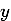
بالجمع على جميع مسارات
المحاذاة المسموحة ذات الطول بطريقة
البرمجة الديناميكية للمرور الأمامي-الخلفي في :
وفي الوقت نفسه نشر جيفري هينتون وسايمون أوسينديرو ويي-واي تيه التدريب
المسبق الطبقي لشبكات الاعتقاد العميقة (Deep Belief
Nets) من كومة RBM (№ 182)142، وبيّن هينتون وروسلان سالاخوتدينوف
في مجلة Science الضغط اللاخطي للبيانات بمرمّزات تلقائية عميقة مع
التدريب اللاحق بالانتشار العكسي (№ 183)، معيدين الشبكات العميقة إلى بؤرة
اهتمام العلم. وختم العامَ الاستعراضُ الأساسي للنماذج الطاقية ليان لوكون
ومعاونيه (№ 184) والكتاب الدراسي الكلاسيكي لكريستوفر بيشوب «Pattern
Recognition and Machine Learning» (№ 185)164.
2007
المجالات: الأساس التحسين المرمِّز
في عام 2007 بيّن يوشوا بنجيو وباسكال لامبلان ودان بوبوفيسي وهوغو لاروشيل
في NIPS («Greedy Layer-Wise Training of Deep Networks»، №
186)163 أن التدريب المسبق الطبقي الجشع للمرمّزات التلقائية الحتمية يهيّئ
الشبكات العميقة بنجاح مماثل لنجاح RBM العشوائية. وفي المؤتمر نفسه نشر
ليون بوتو وأوليفييه بوسكيه عمل «The Tradeoffs of Large Scale
Learning» (№ 187)، مبرهنَين أنه عند ميزانية ثابتة من زمن الحساب في
نظام العيّنات الكبيرة يصغّر الانحدار التدريجي العشوائي البسيط من الرتبة
الأولى (SGD) المخاطرة التعميمية المتوقعة بكفاءة مقاربية أعلى من المُحسِّنات
الثقيلة من الرتبة الثانية. وأدخل أندريه منيه وجيفري هينتون
Log-Bilinear Language Model (№ 188)، وطبّق روسلان
سالاخوتدينوف وأندريه منيه وجيفري هينتون RBM على الترشيح المصفوفي
للتوصيات في Netflix Prize (№ 189).
2008
المجالات: المرمِّز الانتشار الانتباه/LLM
في مؤتمر ICML 2008 قدّم باسكال فنسان وهوغو لاروشيل ويوشوا بنجيو
وبيير-أنطوان مانزاغول المرمّزات التلقائية المزيلة للضجيج
(Denoising Autoencoders, DAE) (№ 190)161: يُشوَّه متجه الدخل عمدًا
بتصفير عشوائي للمركّبات (الإخفاء بالأقنعة) أو بضجيج غاوسي ، وتُدرَّب الشبكة على إسقاط النقطة المضجَّجة
عائدةً إلى منطوية البيانات النظيفة 165.
وصار هذا الاستبدال البسيط لإعادة البناء المتطابقة بإزالة الضجيج جسرًا
مفاهيميًا مباشرًا إلى كلٍّ من نمذجة اللغة المقنَّعة (BERT وLLaDA) ومطابقة
الدرجة الانتشارية. وفي ICML نفسه درّب رونان كولوبير وجيسون ويستون معمارية
التفافية واحدة بتضمينات كلمات مدرَّبة مسبقًا على ويكيبيديا لحل ست مهام
معالجة لغة طبيعية معًا دون هندسة يدوية للسمات (№ 191)، وأدخل لورنس فان
دير ماتن وجيفري هينتون في JMLR خوارزمية تصوير المنطويات
t-SNE (№ 192).
2009
المجالات: المرمِّز التحسين الأساس
في عام 2009 تزامنت ثلاثة أحداث مهّدت لتوسيع نطاق التعلم العميق الحديث.
فقد قدّم جيا دنغ وفاي-فاي لي ومعاونوهم في CVPR المدوّنة الهرمية
ImageNet (أكثر من 14 مليون صورة موسومة، № 193)167؛ ودرّب
راجات راينا وأناند مادهافان وأندرو أنغ في ICML شبكات عميقة من 100 مليون
معامل على نوى CUDA GPU القابلة للبرمجة بـتسريع
70× قياسًا إلى المعالجات متعددة النوى (№ 194)؛ وأضفى يوشوا بنجيو
وجيروم لورادور ورونان كولوبير وجيسون ويستون الصورية على التعلّم
بالمنهج (Curriculum Learning) (№ 195) — الرفع التدريجي لصعوبة
أمثلة التدريب وطولها، الذي صار مرحلة إلزامية في التدريب التدريجي على
السياق الطويل والدقة العالية في جميع LLM ومولّدات الفيديو الحديثة59. وفي
العام نفسه أنشأ سالاخوتدينوف وهينتون آلات بولتزمان العميقة
(DBM) ذات الروابط ثنائية الاتجاه بين الطبقات (№ 196)، وثبّت
فرانكو سكارسيلي وآخرون التقارب الرياضي لشبكات GNN
البيانية في IEEE TNN (№ 197).
2010
المجالات: الأساس التحسين الحلقات
في عام 2010 أُزيلت العوائق الرئيسة أمام تدريب الشبكات العميقة ذات
الانتشار الأمامي من الصفر دون تدريب مسبق طبقي. فقد بيّن كزافييه غلوروت
ويوشوا بنجيو في مؤتمر AISTATS (№ 198) أنه للحفاظ في آن واحد على تباين
الإشارة في المرور الأمامي وتباين التدرّجات في المرور العكسي ينبغي أن تُهيَّأ
أوزان الطبقة بتباين غلوروت (Xavier
Initialization):
وفي مؤتمر ICML 2010 نشر فينود نير وجيفري هينتون عمل «Rectified
Linear Units Improve Restricted Boltzmann Machines» (№ 199)، مُدخِلَين
في الممارسة الواسعة دالة التنشيط القطعية الخطية ReLU
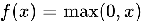
ذات المشتقة الوحدوية على نصف المحور
الموجب. وفي العام نفسه قدّم توماش ميكولوف ومعاونوه في Interspeech
النموذج اللغوي التكراري (RNNLM) للتعرف على الكلام (№
200)، واشتق مايكل غوتمان وآابو هيفارينن التقدير المقابل للضجيج
(NCE) (№ 201)، ودرّب جيمس مارتنز شبكات عميقة دون تدريب مسبق
بطريقة الرتبة الثانية Hessian-Free (№ 202)، وصدر مترجم
الاشتقاق التلقائي الرمزي-التنسوري على GPU Theano لجيمس
بيرغسترا ومجموعة بنجيو (№ 203).
2011
المجالات: التحسين الانتشار الأساس STT
في عام 2011 نشر جون دوتشي وإيلاد هازان ويورام سينغر في JMLR
المُحسِّن التكيفي AdaGrad (№ 204)168، الذي يطبّع خطوة كل
إحداثي بالجذر التربيعي لمجموع مربعات تدرّجاته السابقة المتراكم ، مما دشّن العائلة الكاملة لطرائق التحسين
التكيفية للشبكات العميقة.
وفي صيف 2011 نشر باسكال فنسان في Neural Computation المقالة
النظرية الأساسية «A Connection Between Score Matching and Denoising
Autoencoders» (Denoising Score Matching, DSM، №
205)161. وبرهن فنسان بصرامة أن تدريب المرمّز التلقائي على كبح الضجيج
الغاوسي
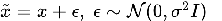
يكافئ تقدير دالة الدرجة
للكثافة المملَّسة بنافذة بارزن دون
حساب المشتقات الثانية لليعقوبي166:
وبما أن ، فإن هذه الصيغة هي النواة
الرياضية المباشرة لجميع نماذج الانتشار المتصلة (NCSN وDDPM وScore
SDE)142. وفي العام نفسه برّر غلوروت وبوردس وبنجيو تناثر الشبكات العميقة
القائمة على ReLU (№ 206)، وربط ماكس ويلينغ ويي-واي تيه التدرّج العشوائي
بديناميكا لانجفان في SGLD (№ 207)، وحقق فرانك زايدا
وغان لي ودونغ يو اختراقًا في التعرف الصناعي على الكلام المحكي بالنموذج
الهجين CD-DNN-HMM (№ 208)، وأصدر كولوبير وآخرون المقالة
الختامية «Natural Language Processing (Almost) from Scratch» في
JMLR (№ 209).
2012
المجالات: المرمِّز STT التحسين الحلقات
في ديسمبر 2012 قدّم أليكس كريجيفسكي وإيليا سوتسكيفر وجيفري هينتون في NIPS
الشبكة الالتفافية ثمانية الطبقات AlexNet (№ 210)96،
التي خفّضت خطأ Top-5 على ImageNet ILSVRC-2012 من 26.2% إلى
15.3% (دقة Top-1 تبلغ 63.3%). وجمع نجاح AlexNet بين 60
مليون معامل، واللاخطية ReLU (التي سرّعت التقارب بمقدار
6× مقارنةً بـ)، والتعطيل العشوائي
للعصبونات Dropout لكبح التكيّف المشترك للسمات (هينتون
وآخرون، 2012، № 212)، والتدريب المتوازي على مستوى النموذج على بطاقتَي
فيديو NVIDIA GTX 580167.
وفي الوقت نفسه، في نوفمبر 2012، نشر أليكس غريفز معمارية
RNN-Transducer (RNN-T) (№ 211)، التي رفعت افتراض
الاستقلال الشرطي لمخرجات CTC بجمع المرمّز الصوتي
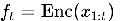
والشبكة الانحدارية الذاتية لتنبؤ النص في شبكة مشتركة Joiner
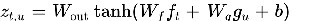
مع التهميش على الشبكة ثنائية الأبعاد — معيار جميع أنظمة التعرف التدفقي على
الكلام حتى TDT الحديثة170. وفي العام نفسه ظهرت التدريج المتوسط التربيعي
المنزلق للخطوة RMSProp لهينتون والطريقة عديمة الأبعاد
Adadelta لماثيو زايلر (№ 213)، والإطار العنقودي الموزَّع
DistBelief لجيف دين وآخرين (№ 214)، ومجموعات GPU-CNN
لدان تشيريشان وأولي ماير ويورغن شميدهوبر بأول دقة فوق بشرية في التعرف
على اللافتات (№ 215)155 وبرهان فعالية البحث العشوائي عن المعاملات
الفائقة لبيرغسترا وبنجيو (№ 216).
2013
المجالات: المرمِّز الانتشار الأساس التحسين
في ديسمبر 2013 نشر ديديريك كينغما وماكس ويلينغ المرمّز التلقائي
التغايري (Variational Autoencoder, VAE) («Auto-Encoding
Variational Bayes»، № 217؛ وبصورة مستقلة دانيلو ريزيندي وشاكير محمد
ودان فيرسترا، № 218)، الذي يعظّم الحدّ الأدنى التغايري للأرجحية
(ELBO):
وخدعة إعادة المعلمة
التي أدخلها المؤلفون نقلت العشوائية إلى ضجيج خارجي ومكّنت من تدريب مرمّزات
احتمالية عميقة اعتباطية بالانتشار العكسي للخطأ المعتاد؛ وبالذات فإن
الفضاءات المضغوطة لـVAE تشكّل اليوم الركيزة الكامنة لجميع مولّدات الصور
والفيديو والكلام الطويل الرائدة74.
وبالتوازي قدّم توماش ميكولوف ومعاونوه في Google المعماريات التقابلية
Word2Vec (Skip-Gram وCBOW مع أخذ العيّنات السالبة، №
219)، التي وسّعت تدريب التمثيلات المتجهية للكلمات إلى مدوّنات بمليارات
الكلمات ذات بنية دلالية خطية. وأدخل مين لين وتشيانغ تشن وشويتشنغ يان
الالتفافات النقطية 1×1 والتجميع المتوسط الشامل في Network in
Network (№ 220)، واقترح إيان غودفيلو وآخرون التنشيط
Maxout (№ 221)، وربط فلاديمير منيه وفريق DeepMind
الشبكة الالتفافية بالتعلّم Q ومخزن التجربة في DQN على
ألعاب Atari (№ 222)، وبرهن أندرو ساكس وجيمس ماكليلاند وسوريا غانغولي على
حفظ القيم المفردة لليعقوبي عند التهيئة المتعامدة
للشبكات العميقة (№ 223)175، وأدخل ريتشارد جونسون وتونغ تشانغ خفض تباين
التدرّج SVRG (№ 224).
2014
المجالات: الانتباه/LLM الحلقات الانتشار المرمِّز
التحسين
في عام 2014 وُلد الانتباه الليّن القابل للاشتقاق، والشبكات التوليدية
التنافسية، والمُحسِّن الرئيس للتعلم العميق الحديث. فبعد نموذج
Seq2Seq لإيليا سوتسكيفر وأوريول فينيالس وكوك لي (№
225)، الذي كان يضغط الجملة الداخلة في متجه LSTM ثابت واحد، أزال دميتري
بهداناو وكيونغهيون تشو ويوشوا بنجيو («Neural Machine Translation by
Jointly Learning to Align and Translate»، № 226) عنق الزجاجة
المعلوماتي للمتجه الثابت، مُمكِّنين فاكّ الترميز في كل خطوة من وزن جميع الحالات المخفية للمرمّز ديناميكيًا (الانتباه
الجمعي):
وفي العام نفسه بسّط كيونغهيون تشو وآخرون الخلية التكرارية ذات البوابات
إلى بوابتين في GRU (،
№ 227)، وزوّد أليكس غريفز وغريغ وين وإيفو دانيليخكا الشبكة العصبية بذاكرة
مصفوفية خارجية قابلة للاشتقاق في Neural Turing Machine
(NTM) (№ 228). وفي NIPS 2014 صاغ إيان غودفيلو ومعاونوه لعبة
المينيماكس بين المولِّد والمميِّز في GAN (، № 229)، وفي ديسمبر نشر ديديريك كينغما
وجيمي با المُحسِّن Adam (№ 230)، الذي جمع التقديرات الأسّية
المنزلقة للعزمين الأول والثاني للتدرّج مع تصحيح انحياز الصفر. وفي الرؤية
الحاسوبية والتضمينات صدرت سلاسل النوى الضيقة 3×3 في VGG
لسيمونيان وزيسرمان (№ 231)176، والكتل متعددة المقاييس GoogLeNet
/ Inception لسيجيدي وآخرين (№ 232)، والتحليل المصفوفي للتواجد
المشترك للكلمات GloVe لبينينغتون وآخرين (№ 233)، وعمل
غودفيلو وآخرين عن الطبيعة الخطية للاضطرابات التنافسية
(FGSM) (№ 234) ومكتبة Caffe ليانغ جيا (№
235).
2015
المجالات: الأساس الانتشار المرمِّز التحسين STT
في عام 2015 جرى تجاوز حاجز تدهور عمق الشبكات وصيغ في الوقت نفسه الانتشار
الديناميكي الحراري. فتطويرًا للطرق السريعة ذات البوابات Highway
Networks لروبيش سريفاستافا وكلاوس غريف ويورغن شميدهوبر (، № 236)7، بسّط كايمنغ هي وشيانغيو تشانغ
وشاوتشينغ رن وجيان صن تمرير الإشارة إلى جمع تطابقي خالص في
ResNet-152 (№ 237؛ بالاقتران مع التهيئة Kaiming
Init لـReLU، № 238)61:
وقد وفّرت الوحدة الجمعية في اليعقوبي
تدفقًا غير متضائل للتدرّج عبر مئات الطبقات وأتت بالفوز في ILSVRC-2015 بخطأ
مجموعة بلغ 3.57%34.
وفي العام نفسه أدخل سيرغي إيوفي وكريستيان سيجيدي Batch
Normalization (№ 239)178؛ وأنشأ أولاف رونيبيرغر وفيليب فيشر
وتوماس بروكس المعمارية الالتفافية المتناظرة مرمِّز–فاكّ ترميز مع تمرير
الخرائط المكانية للسمات U-Net (№ 240)179؛ ونشر ياشا
سول-ديكشتاين وإريك وايس ونيرو ماهيسواران وسوريا غانغولي في ICML 2015
المقالة الرائدة «Deep Unsupervised Learning using Nonequilibrium
Thermodynamics» (№ 241)، مُدخِلين سلسلة ماركوف الأمامية لتضجيج
الانتشار والسلسلة العكسية القابلة
للتعلّم للاستعادة التوليدية . وأتمّ العامَ
تقطير المعرفة الحراري لهينتون وفينيالس ودين (№ 242)،
وتقريب فيشر K-FAC لمارتنز وغروس (№ 243)، والانتباه
العددي للونغ (№ 244)، والمعماريات الكلامية الشاملة LAS
لتشان وآخرين (№ 245) وDeepSpeech 2 لعمودي وآخرين (№
246)، والتجزئة دون الكلمية BPE لزينريش وآخرين (№ 247)
والإصدار المفتوح للإطار TensorFlow (№ 248).
2016
المجالات: TTS الحلقات الأساس التحسين المرمِّز
في عام 2016 تبلورت آليات التطبيع لكل رمز، والحلقات التكرارية التكيفية،
والتوليف الانحداري الذاتي للصوت. فاقترح جيمي با وجيمي كيروس وجيفري
هينتون Layer Normalization (LayerNorm) (№ 249) التي
تطبّع متجه السمات لكل رمز على حدة بصرف النظر عن حجم الدفعة، وبرهن كايمنغ
هي وآخرون أن نقل التطبيع إلى داخل الفرع المتبقي (Pre-LN
ResNet: ، № 250) يحافظ على
المسار الرئيس التطابقي النقي عند عمق يتجاوز 1000 طبقة61. وأدخل أليكس
غريفز آلية Adaptive Computation Time (ACT) (№ 251)41،
التي تتيح للشبكة تنفيذ عدد متغير قابل للتعلّم من التكرارات الداخلية على
كل رمز بإدارة بوابة إيقاف سيغمويدية (ponder cost) — الأساس المباشر للعمق
التكيفي في Universal Transformer وOuro وHuginn41. واقترح دان هندريكس
وكيفن غيمبل اللاخطية الاحتمالية الملساء GELU (№ 252).
وفي توليف الكلام قدّم آرون فان دن أورد وفريق DeepMind
WaveNet (№ 253) — كومة من الالتفافات أحادية البعد
السببية المتّسعة بنمو أسّي للاتساع
ولاخطيات ذات بوابات ، قرّبت للمرة الأولى
توليف الموجة من الصوت الطبيعي. وفي العام نفسه أنشأ لوران دينه وياشا
سول-ديكشتاين وسامي بنجيو التدفقات المطبِّعة العكوسة
RealNVP (№ 254)؛ واشتق إريك جانغ وآخرون الاسترخاء
الفئوي القابل للاشتقاق Gumbel-Softmax (№ 255)54؛ وأضفى
توماس كيبف وماكس ويلينغ الصورية على الشبكات الالتفافية البيانية
(GCN) الطيفية (№ 256)؛ وقدّم غاو هوانغ وآخرون
DenseNet (№ 257)180؛ وأدخل إيليا لوشيلوف وفرانك هوتر
جدول معدل التعلّم بجيب التمام SGDR / Cosine Annealing (№
258)؛ وصدر الكتاب الدراسي الكلاسيكي لغودفيلو وبنجيو وكورفيل «Deep
Learning» (MIT Press، № 259)8.
2017
المجالات: الانتباه/LLM MoE TTS المرمِّز التحسين
في يونيو 2017 نشر آشيش فاسواني ونوام شازير وني برمار وياكوب أوشكوريت
وليون جونز وإيدان غوميز وكوكاش كايزر وإيليا بولوسوخين مقالة
«Attention Is All You Need» (№ 260)182، مستبدلين السلاسل
التكرارية والالتفافات بمعمارية Transformer القائمة على
الانتباه الذاتي متعدد الرؤوس بالجداء السلّمي المُقيَّس (Multi-Head
Attention, MHA):
يثبّت المضروب تباين اللوجيتات قبل
softmax، ويتقلّص طول مسار انتقال الإشارة بين أي موضعين من المتتالية إلى
، ويتلاءم التوازي الكامل على جميع رموز
في مرحلة التدريب تمامًا مع عمليات الضرب
التنسورية في GPU على حساب تعقيد تربيعي
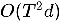
.
وفي عام 2017 نفسه صدرت خمسة أعمال أخرى شكّلت ملامح الأنظمة متعددة الوسائط
والمتناثرة الحديثة. فقدّم نوام شازير ومعاونوه في ICLR
Sparsely-Gated Mixture-of-Experts (№ 261)184، موسِّعين
النموذج اللغوي إلى 137 مليار معامل بفضل التوجيه المتناثر مع عقوبة موازنة مساعدة لحمل الخبراء. وأنشأ
آرون فان دن أورد وأوريول فينيالس وكوراي كافوكتشوغلو
VQ-VAE (№ 262)، مُدخِلين التكميم الاتجاهي للفضاء الكامن
في دفتر شيفرة متقطع مع تقدير التدرّج الشامل Straight-Through Estimator —
الآلية الأساسية لجميع مرمِّزات الصوت العصبية الحديثة. وبنى يوان وانغ
وآخرون (Tacotron، № 263) وجوناثان شين وآخرون
(Tacotron 2، № 264) التوليف الكلامي الشامل «نص طيف مل
مرمِّز صوتي عصبي (vocoder)». وفي التحسين فصل إيليا لوشيلوف وفرانك هوتر
اضمحلال الأوزان عن العزم الثاني التكيفي في AdamW (، № 265)، وأنشأ جون شولمان وآخرون تدرّج
السياسة البديل المقتطَع PPO (№ 266)158، وثبّت مارتن
أرجوفسكي وسوميت تشينتالا وليون بوتو الشبكات التنافسية بمقياس فاسرشتاين
WGAN (№ 267). وأثرت الترسانة المعمارية الالتفافاتُ
القابلة للفصل عمقيًا MobileNets لهاوارد وآخرين (№ 268)،
والانتباه القنوي SENet لهو وآخرين (№ 269)، والتنشيط
Swish / SiLU
لراماتشاندران وآخرين (№ 270) والانتباه البياني GAT
لفيليتشكوفيتش وآخرين (№ 271).
2018
المجالات: المرمِّز الانتباه/LLM الحلقات TTS
التحسين
في عام 2018 انقسم التدريب المسبق للمحوّلات على مدوّنات كبيرة غير موسومة
إلى فرعين متكاملين. فبعد التمثيلات السياقية لـBiLSTM
ELMo لماثيو بيترز وآخرين (№ 272)، قدّم أليك رادفورد
ومعاونوه في OpenAI فاكّ الترميز السببي الانحداري الذاتي
GPT-1 (№ 273)، وأنشأ جاكوب ديفلين ومينغ-وي تشانغ
وكينتون لي وكريستينا توتانوفا في Google المرمّز العميق ثنائي الاتجاه
BERT (№ 274)186، المدرَّب على استعادة 15% من الرموز
المقنَّعة عشوائيًا (Masked Language Modeling, MLM) من
السياق الكامل يسارًا ويمينًا.
وفي الوقت نفسه أدخل مصطفى دهقاني ومعاونوه Universal
Transformer (№ 275)187 — أول محوّل حلقي بمشاركة الأوزان على
العمق وإيقاف ACT لكل رمز، مبرهنين على شموليته الحسابية عند عمق متغير،
وواضعين الأساس المباشر لنماذج Huginn وOuro الحديثة. وانتقل ريكي تشن
ويوليا روباتوفا وجيسي بيتنكور وديفيد دوفينو إلى النهاية المتصلة للشبكة
المتبقية في Neural
ODE مع التدريب بطريقة المعادلات المرافقة بذاكرة على العمق (№ 276)190. وفي العام نفسه صاغ
آرون فان دن أورد وياتشن لي وأوريول فينيالس الدالي التقابلي
InfoNCE ضمن CPC (№ 277)191؛ وأنشأ
كينغما ودهاريوال المولِّد العكوس Glow (№ 278)، الذي كيّفه
ريان برينجر وآخرون إلى المرمِّز الصوتي التدفقي السريع
WaveGlow (№ 279)؛ وأدخل يوكسوان وو وكايمنغ هي
GroupNorm (№ 280)؛ وظهر في التحسين
Adafactor منخفض الرتبة لشازير وشتيرن (№ 281)192 والمهيِّئ
المسبق المصفوفي للانحناء Shampoo لغوبتا وكورين وسينغر
(№ 282)160؛ ووصف آرثر جاكو وآخرون نظام النواة المماسية العصبية
(NTK) (№ 283)؛ وأصدر تاكو كودو وجون ريتشاردسون المجزِّئ
SentencePiece (№ 284)73.
2019
المجالات: الانتباه/LLM الحلقات TTS الانتشار
التحسين
في عام 2019 تبلور الهيكل الهندسي لفاكّ ترميز LLM الحديث والبنية التحتية
لتدريبه الموزَّع. فقد رسّخ أليك رادفورد ومعاونوه في GPT-2
(1.5B معامل، № 285)1 مخطط Pre-LN وتنفيذ المهام بأسلوب
zero-shot عبر المتابعة اللغوية. وقدّم بياو تشانغ وريكو زينريش
RMSNorm (№ 286)28، متخلِّصَين من توسيط المتوسط في
LayerNorm ومبقيَين على التطبيع الثابت إزاء المقياس بالسعة التربيعية
المتوسطة وحدها:
مما سرّع التطبيع على GPU وصار معيارًا لجميع المعماريات المفتوحة تقريبًا
للأعوام 2023–2026196. وفي نوفمبر نشر نوام شازير Multi-Query
Attention (MQA) (№ 287)49، مشيرًا إلى قيد فك الترميز الانحداري
الذاتي بعرض نطاق ذاكرة HBM عند قراءة KV-cache، ومقترحًا إسقاطات مشتركة
لجميع رؤوس الاستعلام.
وفي النماذج الحلقية وطويلة السياق أنشأ شاوجيه باي وزيكو كولتر وفلادلن
كولتون Deep Equilibrium Models (DEQ) (№ 288)، التي تجد
النقطة الثابتة للحلقة بحلّال عددي
للجذور وتشتقّها تحليليًا عبر مبرهنة الدالة الضمنية بذاكرة ؛ وطبّق تشنغتشونغ لان وآخرون المشاركة الشاملة
لأوزان الطبقات في ALBERT (№ 289)189؛ وأدخل كولين رافيل
وآخرون الانحياز الجدولي النسبي للانتباه في T5 (№
290)72؛ وجمع تسيهان داي وآخرون التكرارية القطعية مع المواضع النسبية في
Transformer-XL (№ 291)190. وفي توليف الكلام أنشأ يي رن
وآخرون المحوّل غير الانحداري الذاتي FastSpeech بمنظِّم
صريح لمدد الفونيمات (Length Regulator، № 292)، مسرِّعين
توليد أطياف مل بمقدار رتبتين دون فقدان الاستقرار. وأحيا يانغ سونغ
وستيفانو إرمون النمذجة التوليدية بحسب الدرجة على شبكة ضجيج متعددة
المقاييس في NCSN (№ 293). وختم العامَ التوسيعُ المركّب
للشبكات الالتفافية EfficientNet لتان ولي (№ 294)178،
والمرمّز الصوتي ذاتي الإشراف wav2vec لشنايدر وآخرين (№
295)، والتوازي التنسوري داخل الطبقة Megatron-LM من
NVIDIA (№ 296)198، وتجزئة حالات المُحسِّن والأوزان ZeRO من
Microsoft DeepSpeed (№ 297)73 والمقالة المرجعية لآدم باشكه وآخرين عن
PyTorch (№ 298).
2020
المجالات: الانتباه/LLM الانتشار المُرمِّز STT TTS
الحلقات/SSM
في عام 2020 تحوّلت في آنٍ واحد النماذج اللغوية والتوليد بالانتشار والرؤية
الحاسوبية والتقنيات الصوتية. فقد أرسى Jared Kaplan وزملاؤه
قوانين التوسع (Scaling Laws) من نوع قانون القوة لخسارة
النموذج اللغوي بدلالة عدد المعاملات والبيانات وميزانية FLOPs (№ 299)4، وجسّدها Tom Brown وفريق OpenAI في
النموذج GPT-3 ذي 175 مليار معامل مع التعلّم الناشئ في
السياق (№ 300). وأدخل Noam Shazeer عائلة الكتل كاملة الاتصال ذات
البوابات SwiGLU (№
301)199 التي حلّت محل الشبكة متعددة الطبقات (MLP) ثنائية الطبقات المعتادة
في النماذج اللغوية الكبيرة الحديثة، بينما حلّل Angelos Katharopoulos
وآخرون الانتباه عبر نواة ميزات موجبة
في Linear Attention (№ 302)25، مبيّنين ثنائية المحوّل
الخطي والشبكة العودية ذات الذاكرة المصفوفية بتعقيد .
وفي النماذج التوليدية نشر Jonathan Ho وAjay Jain وPieter Abbeel النموذج
DDPM (№ 303)37، فاختزلوا التدريب التبايني لسلسلة ماركوف
العكسية إلى التنبؤ بالضجيج الغاوسي المضاف ؛ وبنى Jiaming Song وChenlin Meng وStefano
Ermon مسارات حتمية غير ماركوفية لأخذ العينات المُسرَّع
DDIM (№ 304)5؛ ووحّد Yang Song وآخرون الانتشار وتقدير
الدالة الدرجية (score) في معادلات تفاضلية عشوائية مستمرة Score
SDE وفي تدفق الاحتمال الحتمي Probability Flow
ODE (№ 305)5. وفي الرؤية الحاسوبية قدّم Alexey Dosovitskiy
وLucas Beyer وآخرون المحوّل الرقعي الخالص ViT (تقسيم
الصورة إلى رقع 16×16 دون التفافات، وبلغت دقة Top-1 نسبة 88.55% على
ImageNet لدى ViT-H/14، № 306)73، إلى جانب اختراق التعلم الذاتي التبايني
SimCLR (№ 311)202 وMoCo (№ 312)
وBYOL الخالي من العينات السالبة (№ 313).
وفي معالجة الصوت ظهرت ثلاثة مكوّنات أساسية للمنظومة الصوتية الحديثة:
النموذج الهجين الالتفافي–المحوّلي Conformer لـ Anmol
Gulati وآخرين (Macaron-FFN + MHSA + DepthwiseConv، الذي حقق 1.9%
/ 3.9% WER على LibriSpeech test-clean / test-other، № 307)203،
والمُرمِّز الكمّي ذاتي الإشراف للموجة الخام wav2vec 2.0 لـ
Alexei Baevski وآخرين (№ 308)191، ومُرمِّز الصوت (vocoder) التوليدي
التنافسي متعدد الدورات HiFi-GAN لـ Jungil Kong وآخرين
(№ 309)206. وأخيرًا استنتج Albert Gu وTri Dao ومعاونوهم مؤثّرات الإسقاط
متعدد الحدود المتعامد للتاريخ المستمر للإشارة HiPPO (№
310)62 (الأساس النظري لـ S4 وMamba)، وأنشأ Patrick Lewis وآخرون معمارية
RAG (№ 314)، ووسّع Dmitry Lepikhin وآخرون خليط الخبراء
(MoE) إلى 600B معامل في منظومة GShard (№ 315)27.
2021
المجالات: الانتباه/LLM MoE المُرمِّز الحلقات/SSM TTS
الانتشار التحسين
في عام 2021 تشكّلت معايير الترميز الموضعي النسبي، والتكيّف منخفض الرتبة،
وفضاءات الحالة المهيكلة، والانتشار الكامن. فقد أدخل Jianlin Su وزملاؤه
في RoFormerالترميز الموضعي الدوّار
(RoPE) (№ 316)72، إذ تُضرب أزواج إحداثيات الاستعلامات والمفاتيح
في مصفوفات دوران متعامدة في المستوى العقدي بطيف ترددات هندسي :
واقترح Ofir Press وآخرون عقوبات موضعية خطية للانتباه
ALiBi (№ 317)؛ وبسّط William Fedus وBarret Zoph وNoam
Shazeer خليط الخبراء إلى توجيه Top-1 في Switch
Transformer ذي 1.6 تريليون معامل (№ 318)؛ وابتكر Edward Hu
وآخرون طريقة LoRA (№ 319)210 التي تجمّد المصفوفات
المدرَّبة مسبقًا وتدرّب فقط إضافة منخفضة
الرتبة من الرتبة دون زمن تأخير إضافي في الاستدلال.
وفي المُرمِّزات متعددة الوسائط والبصرية، وازن Alec Radford وآخرون بين فضاءي
الصور والنصوص على 400 مليون زوج في CLIP (№ 320)212،
وأنشأ Kaiming He وآخرون المُرمِّز الذاتي اللاتماثلي المقنَّع للرقع
MAE (إخفاء 75% من الرقع، № 321)، واكتشفت Mathilde Caron
وآخرون التقطير الذاتي للمحوّلات البصرية دون تسميات DINO
(№ 322)213، وأدخل Ze Liu وآخرون النوافذ المزاحة الهرمية في Swin
Transformer (№ 323). وفي نمذجة التسلسلات الطويلة نشر Albert Gu
وKaran Goel وChristopher Ré النموذج S4 (Structured State
Spaces) (№ 324)62: فبتحليل مصفوفة HiPPO إلى مجموع مصفوفة نظامية
ومصفوفة منخفضة الرتبة (NPLR: ) اختزلوا حساب نواة الالتفاف ذات الطول إلى نواة Cauchy وتحويل FFT بتعقيد ، فحلّوا لأول مرة مسألة Path-X بطول 16,384
على Long Range Arena (متوسط الدرجة 86.09)216؛ وبالتوازي أدخل Imanol
Schlag وKazuki Irie وJürgen Schmidhuber في ICML 2021 قاعدة دلتا للكتابة
فوق الذاكرة في المحوّلات الخطية (Fast Weight
Programmers، № 325)157، التي غدت المصدر النظري المباشر لـ
DeltaNet.
وفي المجالين الصوتي والتوليدي جمع Jaehyeon Kim وJungil Kong وJuhee Son
بين الاستدلال التبايني والتدفقات التطبيعية وتخليق الموجة التنافسي في
VITS (№ 326)217؛ وأنشأ Neil Zeghidour وآخرون أول ترميز
صوتي عصبي طرفًا إلى طرف مع التكميم المتجهي المتبقي (RVQ)
هو SoundStream (№ 327)47؛ وقدّم Wei-Ning Hsu وآخرون
المُرمِّز الكلامي المقنَّع HuBERT (№ 328)191؛ وبرهن Prafulla
Dhariwal وAlex Nichol على تفوّق الانتشار على GAN في جودة الصور في
ADM (№ 329)219؛ وصاغ Jacob Austin وآخرون الانتشار
المتقطع ذا الرمز الماص [MASK] في D3PM (№ 330)35؛ وفي
ديسمبر نقل Robin Rombach وAndreas Blattmann وDominik Lorenz وPatrick
Esser وBjörn Ommer الانتشار إلى الفضاء المضغوط لمُرمِّز ذاتي إدراكي مع
انتباه متقاطع (cross-attention) نصي في Latent Diffusion Models
(LDM / Stable Diffusion) (№ 331)179.
2022
المجالات: الانتباه/LLM التحسين الانتشار STT
TTS
في عام 2022 غيّرت الخوارزميات الواعية بالعتاد للذاكرة، وقوانين التوسع
الأمثل حسابيًا، وتدفقات المعادلات التفاضلية العادية المستقيمة، اقتصاديات
النماذج الكبيرة. فقد نشر Tri Dao وDaniel Fu وStefano Ermon وAtri Rudra
وChristopher Ré الخوارزمية FlashAttention (№ 332)199:
إذ قسّموا المصفوفات
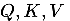
إلى كتل في الذاكرة
السريعة داخل شريحة GPU المسماة SRAM، وطبّقوا إعادة
التحجيم الدقيقة كتلةً كتلة عبر softmax المتصل
(online-softmax) (الذي يعود إلى Milakov وGimelshein، №
333):
وحسب المؤلفون انتباهًا دقيقًا رياضيًا دون كتابة المصفوفة في الذاكرة العامة HBM، فخفّضوا استهلاك
الذاكرة إلى
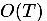
223. وبيّن Jordan Hoffmann
وآخرون في العمل Chinchilla (№ 334)224 أنه عند ميزانية
FLOPs ثابتة يتطلب نظام التدريب الأمثل توسيعًا متناسبًا لعدد المعاملات وعدد
رموز التدريب ()، بينما استنتج Greg Yang
وEdward Hu وآخرون المعايرة
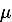
P لنقل المعاملات الفائقة
بلا أمثلة (zero-shot) من النماذج الصغيرة إلى عمليات التشغيل الضخمة (№
335).
وفي النمذجة التوليدية أدخل Jonathan Ho وTim Salimans التوجيه دون
مصنِّف (CFG) (№ 336)، ونظّم Tero Karras وآخرون الشرط المسبق للضجيج
وأجهزة أخذ العينات من الرتبة الثانية في EDM (№ 337)37،
وفي خريف 2022 نقل كلٌّ من Xingchao Liu وChengyue Gong وQiang Liu
(Rectified Flow، № 338)، وYaron Lipman وRicky Chen
وآخرين (Flow Matching، № 339)، وMichael Albergo مع Eric
Vanden-Eijnden (Stochastic Interpolants، № 340) التوليدَ
إلى تدريب حقول سرعة مستقيمة للمعادلة التفاضلية العادية على امتداد الاستكمال الخطي
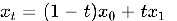
مع إجراء تقويم المسارات
Reflow5. وفي ديسمبر استبدل William Peebles وSaining Xie
في الانتشار الكامن شبكة U-Net بمحوّل قابل للتوسع مع تطبيع تكيّفي
adaLN-Zero، أي Diffusion Transformer
(DiT) (FID 2.27 على ImageNet 256×256، № 341)219. وفي الصوت وما
بعد التدريب ظهر محوّل التعرف على الكلام متعدد اللغات
Whisper لـ Alec Radford وآخرين على 680,000 ساعة من
التوسيم الضعيف (№ 342)229، ورمّاز RVQ المفتوح بتردد 24 كيلوهرتز
EnCodec لـ Alexandre Défossez وآخرين (№ 343)231،
والمواءمة ثلاثية المراحل مع تفضيلات البشر InstructGPT
(RLHF) لـ Long Ouyang وآخرين (№ 344)، والحثّ بسلاسل الاستدلال
Chain-of-Thought لـ Jason Wei وآخرين (№ 345)، والمُحسِّنات
ذات 8 بتات المكمَّمة بالكتل لـ Tim Dettmers وآخرين (№ 346)169.
2023
المجالات: الانتباه/LLM MoE الحلقات/SSM المُرمِّز
الفيديو STT TTS STS التحسين
في عام 2023 حصل النظام المفتوح للنماذج اللغوية الكبيرة على معيار للفك
الفعّال، وتحدّت النماذج الخطية العودية المحوّلاتِ لأول مرة في المهام
اللغوية. فقد أدخل Joshua Ainslie وآخرون Grouped-Query Attention
(GQA) (№ 347)39، مقاسمين
مجموعة من المفاتيح والقيم بين رأس
استعلام (وطُبّق في Llama 2 70B لـ Touvron وآخرين، №
348194)؛ وأزال Woosuk Kwon وآخرون تجزؤ ذاكرة الفيديو لمخبأ KV بآلية
الصفحات PagedAttention في محرك vLLM (№
349)232؛ وحسّن Tri Dao التوازي على مستوى الـ warp في
FlashAttention-2 (№ 350)198؛ وابتكر Hao Liu وMatei
Zaharia وPieter Abbeel الانتباه الموزَّع على حلقة من المسرّعات Ring
Attention للسياقات التي تبلغ ملايين الرموز (№ 351)132؛ وأصدر
فريق Mistral AI خليط الخبراء المتناثر المفتوح Mixtral
8x7B (Top-2 من 8، № 352)234؛ واستنتج Rafael Rafailov وآخرون
الصيغة المغلقة لمواءمة السياسة دون نموذج مكافآت، أي Direct
Preference Optimization (DPO) (№ 353)158:
وفي الوقت نفسه اتسع هجوم المعماريات دون التربيعية ذات الذاكرة الثابتة في
الاستدلال : RWKV-4 لـ
Bo Peng وآخرين (№ 354)236، وشبكة الاحتفاظ متعددة المقاييس
RetNet لـ Yutao Sun وآخرين (№ 355)49، وفي ديسمبر
Mamba (S6) لـ Albert Gu وTri Dao (№ 356)25. فبجعل
معاملات فضاء الحالة دوالَّ للرمز المُدخَل
الحالي (Selective SSM) وتنفيذ ماسح تجميعي متوازٍ واعٍ
بالعتاد في SRAM، حلّ Mamba مشكلة الترشيح المعتمد على المحتوى للسياق
بتعقيد خطي .
وفي المجالات البصرية والانتشار النصي والكلامي ظهر المتنبئ الكامن غير
التوليدي للصور I-JEPA لـ Assran وLeCun وآخرين (№ 357)،
والمُرمِّز التبايني الزوجي السيغمويدي الخالي من softmax
SigLIP لـ Zhai وآخرين (№ 358)212، والنموذج البصري
الأساسي DINOv2 لـ Oquab وآخرين (№ 359)176، ومولّد
الفيديو Stable Video Diffusion لـ Blattmann وآخرين (№
360)، والانتشار المتقطع مع تقدير نسب الاحتمالات SEDD لـ
Lou وMeng وErmon (№ 361)57، وأول نموذج لغوي ترميزي لتخليق الكلام
zero-shot من عينة مدتها 3 ثوانٍ VALL-E لـ Wang وآخرين (№
362)218، والرمّاز الصوتي المحسَّن DAC لـ Kumar وآخرين (№
363)55، ونموذج الكلام الحواري SpeechGPT لـ Zhang وآخرين
(№ 364)240، والمُرمِّز FastConformer ذو الإطار 80 ميلي
ثانية والأسرع بمقدار 2.8× لـ Rekesh وآخرين (№ 365)171، والمحوّل
Token-and-Duration Transducer (TDT) الذي يتخطى الإطارات
الفارغة لـ Xu وMajumdar وGinsburg (№ 366)79، والتكييف بـ 4 بتات
QLoRA لـ Dettmers وآخرين (№ 367)، وتوسيع نافذة RoPE
YaRN لـ Peng وآخرين (№ 368)30، وكتاب Simon Prince
«Understanding Deep Learning» (MIT Press، № 369)8.
الانتباه
الكامن MLA، وموازنة MoE دون عقوبات، والتدريب المسبق المكمَّم
في عام 2024 أعادت سلسلة أعمال مختبر DeepSeek-AI النظر في معمارية
الانتباه وتوجيه الخبراء. ففي DeepSeekMoE
(arXiv:2401.06066، № 370)29 جُزِّئ الخبراء إلى شبكات فرعية صغيرة متخصصة
مقترنة بـ خبراء مشتركين معزولين ونشطين دائمًا. وفي مايو أُدخلت في
DeepSeek-V2 (arXiv:2405.04434، 236B معامل إجمالي / 21B
نشط، № 371)50 آلية Multi-Head Latent Attention
(MLA):
وبفضل امتصاص مصفوفات فك الضغط
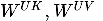
في
إسقاطي الاستعلامات والخرج في مرحلة الاستدلال، لا يُخزَّن في الذاكرة سوى
المتجه المضغوط المؤلف من عنصرًا لكل طبقة بدلًا من 32,768 لدى MHA ذي
128 رأسًا، أي تقليص لمخبأ KV بنسبة 98.24% لكل طبقة (وبنسبة 93.3% على
مستوى نموذج V2 بأكمله مقابل DeepSeek 67B الكثيف)50. وفي ديسمبر جُمع في
DeepSeek-V3 (arXiv:2412.19437، 671B معامل إجمالي / 37B
نشط، 14.8T رمز، № 372)29 كلٌّ من موازنة حمل الخبراء دون خسارة
مساعدة عبر انحياز ديناميكي
عند اختيار Top- (وهي تطوير لـ Loss-Free
Balancing لـ Wang وآخرين، № 37327)، والوحدة التعاقبية
Multi-Token Prediction (MTP) (التي أسّسها نظريًا في أبريل
Fabian Gloeckle وآخرون من Meta، arXiv:2404.19737، № 37464)، وخط أنابيب
تداخل الاتصالات DualPipe، والتدريب المستقر بدقة
FP8 خلال 2.788 مليون ساعة GPU من طراز H800 (نحو $5.576M
بسعر تقديري $2/ساعة، دون احتساب التشغيلات البحثية التمهيدية ودراسات
الاستئصال (ablations)؛ MMLU 88.5%، MATH-500 90.2%)29. وقبل ذلك في فبراير
قدّم Zhihong Shao وآخرون في DeepSeekMath
(arXiv:2402.03300، № 375)53 خوارزمية RL GRPO الخالية من
الناقد. وبالتوازي أثبت Shuming Ma وآخرون جدوى الأوزان الثلاثية في BitNet b1.58
(arXiv:2402.17764، № 376)51، وتصدّر خط المحوّلات الكثيفة المفتوح كلٌّ من
Llama 3.1 405B (№ 377)246 وQwen2.5 (№
378)247.
ثنائية
SSM، وGated DeltaNet، وTTT، والمُحسِّنات من الجيل الثاني
وعلى محور التسلسلات العودية برهن Tri Dao وAlbert Gu في
Mamba-2 (arXiv:2405.21060، № 379)32 على ثنائية بنيوية
صارمة (SSD) بين نماذج SSM الانتقائية ذات الانتقال
العددي والانتباه الخطي شبه القابل
للفصل ، فنقلا تدريب SSM إلى كتل مصفوفية
على Tensor Cores. ووسّع Maximilian Beck وSepp Hochreiter نطاق LSTM ذي
البوابات الأسية والذاكرة المصفوفية التغايرية mLSTM في
xLSTM (arXiv:2405.04517، № 380)183؛ ووازى Songlin Yang
وآخرون المحوّل الخطي ذا قاعدة دلتا عبر تمثيل WY لـ Householder بالأجزاء
(DeltaNet، № 381248)، وفي ديسمبر، بالاشتراك مع Jan
Kautz وAli Hatamizadeh، جمعوا قاعدة دلتا مع التخميد التكيّفي في Mamba-2
في Gated DeltaNet (arXiv:2412.06464، № 382)157:
وفي العام نفسه ظهرت النماذج المصفوفية العودية RWKV-5/6 (Eagle
& Finch) لـ Bo Peng وآخرين (№ 383)249، والنموذج الهجين
Mamba–Transformer–MoE Jamba لـ Opher Lieber وآخرين (№
384)184، والتدفقات المتبقية متعددة المسارات Hyper-Connections
(HC) لـ Defa Zhu وآخرين (arXiv:2409.19606، № 385)61، وطبقات
Test-Time Training (TTT-Linear / TTT-MLP) لـ Yu Sun
وKaran Dalal وآخرين (arXiv:2407.04620، № 386)44 التي حوّلت الحالة المخفية
نفسها إلى مُدرِك (perceptron) ثنائي الطبقات يُدرَّب على سياق الاختبار. وفي
التحسين العتادي والعددي ظهر FlashAttention-3 غير
المتزامن لرقاقات Hopper H100 (740 TFLOPs/s بدقة FP16، № 387)252، والمُهيِّئ
المسبق SOAP لـ Nikhil Vyas وSham Kakade وآخرين
(arXiv:2409.11321، تشغيل AdamW في الأساس الذاتي لمصفوفات Shampoo بخفض
زمن تدريب الدفعات الكبيرة بأكثر من 35%، № 388)168، والزخم المصفوفي
المتعامد Muon لـ Keller Jordan (№ 389)65.
في توليد الصور والفيديو رسّخ Patrick Esser وآخرون في Stable
Diffusion 3 (arXiv:2403.03206، № 390)174 وفريق Black Forest
Labs في FLUX.1 (12B معامل، № 391)174 المعمارية ثنائية
التدفق MMDiT مع Rectified Flow. وحلّت محل نماذج الفيديو
الالتفافية نماذج DiT ثلاثية الأبعاد زمانية–مكانية فوق VAE سببية ثلاثية
الأبعاد (ضغط 4×8×8): CogVideoX لـ Zhuoyi Yang وآخرين (№
392)255، وMochi 1 (№ 393)254،
وHunyuanVideo ذو 13 مليار معامل لـ Weijie Kong وآخرين
مع ترميز المحثّات بـ MLLM وRoPE ثلاثي الأبعاد (arXiv:2412.03603، №
394)256، وLTX-Video فائق السرعة من Lightricks بضغط
Video-VAE بنسبة 1:192 (arXiv:2501.00103، № 395)258. وسرّع Sihyun Yu
وآخرون تقارب محوّلات الانتشار بأكثر من 17.5× بطريقة
مواءمة الرقع الكامنة مع ميزات DINOv2 (REPA،
arXiv:2410.06940، FID 1.42 على ImageNet 256×256، № 396)36؛ واستنتج
Subham Sahoo وآخرون الحد المستمر للانتشار المقنَّع للنص في
MDLM (arXiv:2406.07524، № 397)222؛ وقدّم Adrien Bardes
وآخرون مُرمِّز الفيديو للتنبؤ بالميزات V-JEPA
(arXiv:2404.08471، № 398)60؛ وحدّث Benjamin Warner وآخرون المُرمِّزات ثنائية
الاتجاه للنص والشفرة إلى نافذة 8,192 رمزًا في ModernBERT
(arXiv:2412.13663، تناوب الانتباه العام والمنزلق بنسبة 1:2، وRoPE،
وGeGLU، وunpadding، № 399)186.
وفي التفاعل الكلامي أصدر Alexandre Défossez وآخرون من مختبر Kyutai
النموذج Moshi والرمّاز العصبي المتدفق
Mimi (arXiv:2410.00037، № 400)26 — أول نموذج لغوي كلامي
مفتوح ثنائي الاتجاه المتزامن بزمن تأخير نظري 160 ميلي
ثانية (200 ميلي ثانية عمليًا مقابل نحو 230 ميلي ثانية هي متوسط
الوقفة في الكلام البشري). يضغط الرمّاز Mimi موجة 24 كيلوهرتز إلى تردد
12.5 هرتز (خطوة 80 ميلي ثانية) في 8 دفاتر شفرات RVQ من
2,048 مدخلًا (1.1 كيلوبت/ث) مع تقطير دلالات WavLM في
دفتر الشفرات الأول، بينما يتنبأ تسلسل هرمي من Temporal Transformer ذي 7B
وDepth Transformer صغير بالتوازي بـ«المونولوج الداخلي» النصي (Inner
Monologue) وبتدفقين صوتيين دون تقسيم المحادثة إلى أدوار26. وأكمل منظومةَ
2024 المُرمِّزُ غير الانحداري الذاتي SenseVoice (أسرع من
Whisper-Large بـ 15×) والمُخلِّق CosyVoice (FunAudioLLM، №
401)263، وF5-TTS المتدفق (№ 402)264،
وFish-Speech ثنائي التعاقب (№ 403)265، وكذلك الكتب
الدراسية الأساسية الجديدة لـ Christopher وHugh Bishop «Deep
Learning: Foundations and Concepts» (Springer، № 404)266 ولـ
Sebastian Raschka «Build a Large Language Model (From Scratch)»
(Manning، № 405)267.
في يناير 2025 بيّن نشر DeepSeek-R1 (arXiv:2501.12948،
الذي صدر في سبتمبر 2025 في مجلة Nature، № 406)50 عبر تجربة
DeepSeek-R1-Zero أن التوسيع الخالص للتعلم المعزَّز
GRPO وفق قواعد قابلة للتحقق دون SFT ابتدائي يُكوِّن
تلقائيًا سلاسل طويلة من التحقق الذاتي والتأمل، فيرفع الدقة على AIME 2024
من 15.6% إلى 71.0%، وبلغ DeepSeek-R1 الكامل متعدد
المراحل 79.8% Pass@1 على AIME 2024 و97.3% على
MATH-500 مع تقطير ناجح للاستدلال في نماذج كثيفة من 1.5B إلى
70B269. وفي فبراير قدّم Jingyang Yuan وآخرون Native Sparse
Attention (NSA) (arXiv:2502.11089، أفضل ورقة في ACL 2025، №
407)50، مقسّمين الانتباه إلى فروع مضغوط وانتقائي ومحلي ذي نافذة، مع تسريع
الفك حتى 11.6×76. وفي ديسمبر صدر DeepSeek-V3.2
(arXiv:2512.02556، № 408)10 الذي أدمج فوق MLA آلية DeepSeek
Sparse Attention (DSA) بمفهرس سريع (lightning indexer) واختيار
top- رمز بتعقيد (وأظهر الإصدار عالي الميزانية V3.2-Speciale
نتائج بمستوى الذهب في IMO 2025 وIOI 2025 وفق تقرير المؤلفين)10، وعمل
Zhenda Xie وShengding Hu وآخرين حول Manifold-Constrained
Hyper-Connections (mHC) (arXiv:2512.24880، № 409)2، الذي أسقط
مصفوفات خلط مسارات التدفق المتبقي بخوارزمية Sinkhorn–Knopp على متعدد
السطوح Birkhoff للمصفوفات ثنائية العشوائية (ضمان وبنفقات زمنية إضافية لا تتجاوز 6.7% عند )2.
وبالتوازي أثبت فريق Moonshot AI قابلية المُحسِّن المصفوفي
Muon للتوسع (arXiv:2502.16982، № 410)65، وفي يوليو درّب
على 15.5 تريليون رمز دون ارتفاع مفاجئ واحد في الخسارة النموذجَ الوكيلي
التريليوني الرائد Kimi K2 (arXiv:2507.20534، 1.04T
معامل إجمالي / 32.6B نشط، 8 من 384 خبيرًا + 1 مشترك، № 411) بفضل حزمة
MuonClip (تكرارات Newton–Schulz + تقييد أقصى لوغاريتم
للانتباه QK-Clip)66، وأتبعه في أكتوبر بالمعمارية
الهجينة Kimi Linear ذات تخميد دلتا لكل قناة
KDA (arXiv:2510.26692، تسريع فك يصل إلى 6× على سياق 1M،
№ 412)278. وتوسّعت الجبهة المفتوحة بعائلة Qwen3 القابلة
للتحكم في الاستدلال (حتى 235B-A22B على 36T رمز، arXiv:2505.09388، №
413)247، والنماذج الأصلية متعددة الوسائط ذات الدمج المبكر Llama
4 Scout (109B-A17B، سياق 10 ملايين رمز) وLlama 4
Maverick (400B-A17B، № 414)280، وGLM-4.5
الوكيلي (355B-A32B، arXiv:2508.06471، № 415)282، والنموذج الهجين Mamba-2
+ GQA + MoE بصيغة NVFP4 NVIDIA Nemotron 3 Nano
(31.6B-A3.2B، سياق 1M، arXiv:2512.20848، № 416)13.
العمق
العودي، والذاكرة أثناء الاستدلال، والنماذج اللغوية الانتشارية، وفيديو
MoE
في فبراير 2025 وسّع Jonas Geiping وTom Goldstein وآخرون الاستدلال
الكامن بالعمق في النموذج Huginn-0125 (3.5B معامل، 800B
رمز، arXiv:2502.05171، № 417)3: إذ يعيد المخطط الساندويتشي
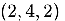
تشغيل نواة من 4 طبقات ذات تهيئة عشوائية
مع إعادة حقن المُدخل حتى مرة
(132 طبقة فعّالة)، رغم أن الدراسات اللاحقة بطريقة الاستقصاء (probing) (Lu
et al., arXiv:2507.02199) أشارت إلى غموض التفسير النصي المباشر للتكرارات
المخفية الوسيطة وإلى احتياطي أكثر تواضعًا من الذاكرة الوقائعية (MMLU
31.4%) مقارنة بالنماذج المدرَّبة على 4T رمز187. وفي أكتوبر درّب Rui-Jie Zhu
وآخرون (ByteDance) على 7.7T رمز نماذج حلقية كاملة المكدس ذات خروج تكيّفي
Ouro-1.4B وOuro-2.6B (arXiv:2510.25741، № 418)77، حيث
بلغ نموذج 2.6B عند نسبة 90.8% على
MATH-500 وعادل نماذج كثيفة حتى 12B بفضل التركيب متعدد الخطوات للمعرفة،
بينما أزال Bohong Wu وآخرون عقوبة التأخير التسلسلي للحلقات بجدولة خط
الأنابيب Cross-Loop Parallelism في Parallel
Loop Transformer (PLT) (arXiv:2510.24824، № 419)33. وفي الوقت
نفسه أنشأ Ali Behrouz وآخرون الذاكرة العصبية طويلة المدى
Titans المحدَّثة بالتدرج مع الزخم أثناء الاستدلال
(arXiv:2501.00663، № 420)288، ووسّع Tianyuan Zhang وآخرون تدريب الأوزان
السريعة على أجزاء حتى 1M رمز في LaCT (arXiv:2505.23884،
№ 421)289، وأصدر Maximilian Beck وSepp Hochreiter النموذج xLSTM
7B (arXiv:2503.13427، № 422)183، وأصدر Bo Peng وآخرون
RWKV-7 "Goose" بالتطور الديناميكي منخفض الرتبة للحالة
(arXiv:2503.14456، № 423)236.
وفي الانتشار المتقطع للنص صدر النموذج LLaDA-8B المدرَّب
من الصفر بخسارة ELBO الموزونة (ومتغيره
MoE بـ 7B-A1B) لـ Shen Nie وآخرين (arXiv:2502.09992، № 424)35، والعائلة
التجارية Mercury Coder من Inception Labs بسرعة توليد
متوازٍ 1,109 رمز/ث على H100 (arXiv:2506.17298، № 425)58
وDream 7B لـ Jiacheng Ye وآخرين (arXiv:2508.15487، №
426)294. وفي توليد الفيديو فتح فريق Alibaba بترخيص Apache 2.0 النموذجين
Wan 2.1 (arXiv:2503.20314، № 427) وWan
2.2 (№ 428) — أول معمارية انتشار فيديو مع مزيل ضجيج MoE
زمني ثنائي الخبراء (27B إجمالي / 14B نشط، مع التبديل بين خبير
البنية الخشنة وخبير التفاصيل الدقيقة بعتبة SNR دون زيادة في تكلفة
الخطوة، إضافة إلى النموذج المدمج TI2V-5B بضغط VAE بنسبة
4×16×16 لبطاقة RTX 4090 واحدة)172. وصدر أيضًا HunyuanVideo
1.5 (8.3B معامل، 75 ثانية للتصيير على RTX 4090 في نمط
step-distilled، arXiv:2511.18870، № 429)297، والمحرِّر السياقي والمولّد ذو
32 مليار معامل FLUX.1 Kontext / FLUX.2 (Mistral-3 24B +
VAE ذو 128 قناة، № 430)174، والمُرمِّز متعدد اللغات SigLIP
2 (arXiv:2502.14786، 85.0% zero-shot على ImageNet لدى ViT-g/16،
№ 431)239، ونموذج العالم الفيديوي مع تخطيط الروبوتات V-JEPA
2 (arXiv:2506.09985، № 432)59، والمُرمِّز البصري ذو 7 مليارات
معامل DINOv3 بآلية Gram Anchoring
للحفاظ على خرائط التقطيع الكثيفة أثناء التدريب الطويل (arXiv:2508.10104،
55.9 mIoU على ADE20k، № 433)301.
وفي المنظومة الصوتية قدّمت Alibaba النماذج متعددة الوسائط الشاملة
Qwen2.5-Omni (arXiv:2503.20215، № 434)
وQwen3-Omni (arXiv:2509.17765، معمارية
Thinker–Talker MoE + مُرمِّز AuT بتردد
12.5 هرتز على 20 مليون ساعة صوت + مفكّك سببي لحظي Code2Wav دون تراجع في
MMLU النصي، № 435)303. وإلى جانبها صدر Step-Audio ذو
130 مليار معامل (arXiv:2502.11946، № 436)306،
وLLaMA-Omni2 المتدفق (arXiv:2505.02625، № 437)308،
والمُخلِّق ذو التكميم FSQ CosyVoice 3 (arXiv:2505.17589، №
438)46، والنماذج المفتوحة المحلية Kokoro-82M
وOrpheus-3B وChatterbox311، والمولّد
الحواري لمدة 90 دقيقة على -VAE المستمر
Microsoft VibeVoice (arXiv:2508.19205، № 439)173،
ونماذج Kyutai الصوتية اللغوية المستمرة (arXiv:2509.06926، № 440)315،
والنموذج الصوتي اللغوي Mistral Voxtral
(arXiv:2507.13264، № 441)316، وNVIDIA Canary-1B-v2
وParakeet-TDT-0.6B-v3 فائقا السرعة (arXiv:2509.14128، 3,332.7
RTFx، № 442)229 وGigaAM-v3317.
بحلول نوفمبر 2026 انتقلت المعماريات المفتوحة (التي نظّمها Sebastian
Raschka في فهرسه LLM Architecture Gallery المؤلف من 132 نموذجًا
وفي كتابه «Build a Reasoning Model (From Scratch)»، يونيو 2026،
№ 445)1 إلى التنشيط فائق التناثر للأوزان (3–6% لكل رمز) والضغط الهجين
للانتباه. فقد وسّع النموذج DeepSeek V4 Pro (الإصدار 0813
في أغسطس 2026، ترخيص MIT) نطاق MoE إلى 1.6 تريليون معامل مع ~49B
نشطة لكل رمز (~3.06%) بنافذة 1M رمز (التدريب على >32T رمز
بمُحسِّن Muon): وخفّض الجمع بين Compressed Sparse Attention
(CSA) وHeavily Compressed Attention (HCA)
التكاليف الحسابية على سياق 1M إلى 27% من FLOPs، وذاكرة مخبأ KV إلى 10%
من مستوى V3.2 (وتفيد المراجعات المنشورة ومواد الإصدار بنسبة 93–94% على
LiveCodeBench، و>90% على GPQA Diamond، و62.7 على DeepSWE)31.
وأصدر فريق Moonshot AI، في أعقاب Kimi K2.5 البصري
الوكيلي (arXiv:2602.02276)، طريقة Attention Residuals
(AttnRes) (arXiv:2603.15031) التي تستبدل التراكم المنتظم للتدفق
المتبقي بانتباه softmax كتلي قابل للتعلم على امتداد محور عمق الطبقات
السابقة، وفي يوليو 2026 فتح النموذج الرائد ذا 2.8 تريليون معامل، وهو
الأكبر حينها، Kimi K3 (arXiv:2607.24653، 104B معامل نشط
— 16 من 896 خبيرًا موجَّهًا + 2 مشتركين، نافذة 1M، نقطة حفظ أصلية MXFP4، №
443)4. وطُبِّق في Kimi K3 تناوب 3:1 بين طبقات KDA الخطية
(بتخميد لوغاريتمي سيغمويدي محدود من الأسفل يتسع في المدى الديناميكي لـ
BF16 على أنوية المصفوفات الكثيفة Tensor Cores) وطبقات Gated
MLA العامة دون أي ترميز موضعي (NoPE)، وكذلك
Normalized LatentMoE مع طبقة RMSNorm قبل الإسقاط
الرافع4. وأكملت سلسلة MoE الكبيرة ذات الانتباه المتناثر النماذجُ
GLM-5 (arXiv:2602.15763، 744B-A40B، MLA + DSA + RL
وكيلي غير متزامن APRIL، 77.8% على SWE-bench Verified و50.4 على AA Index
v4.0)321، وTencent Hy4 (770B-A49B، Gated MLA + DSA مع
IndexCache عبر الطبقات وروابط فائقة رباعية المسارات iHC)1، وMeta
Muse Spark Open (816B-A42B)1.
وفي قطب الأنظمة المحلية المدمجة أدخل Google Gemma 4
(arXiv:2607.02770، Apache 2.0، بأحجام E2B وE4B و12B Unified و26B-A4B MoE
و31B Dense) ثلاث آليات معمارية دفعة واحدة: جداول التضمين لكل طبقة
Per-Layer Embeddings (PLE) في النماذج الأصغر،
والإسقاط الخالي كليًا من المُرمِّز (Encoder-Free) لمقاطع
الصوت الخام بطول 40 ميلي ثانية ورقع الصور مباشرة إلى المفكّك في 12B
Unified، وإعادة استخدام المفاتيح بوصفها قيمًا () مع التدوير الجزئي -RoPE () في طبقات الانتباه العامة (نسبة
المحلي إلى العام 5:1)، مما خفّض مخبأ KV العام بنسبة **37.5%**73. ومع
التقييمات العالية في الاختبارات الرياضية والعلمية (89.2% على AIME 2026
و84.3% على GPQA Diamond لدى 31B في نمط Thinking) لاحظ أرشيف Artificial
Analysis v5.0.1 المستقل تخلّف نموذج 31B في السيناريوهات الوكيلية المعقدة
متعددة الخطوات عن الأنظمة التريليونية الكبيرة324.
ترسّخ هجين الذاكرة المصفوفية الخطية والانتباه الكامل النادر في
Alibaba Qwen 3.8-27B (أغسطس 2026، Apache 2.0، معمارية
VLM كثيفة من 64 طبقة: 16 كتلة من 3 طبقات Gated DeltaNet
وطبقة Gated Attention واحدة، بالتوازي مع النموذج
المغلق/الرائد 2.4T-A95B Qwen 3.8-Max)11. وفي 48 طبقة Gated DeltaNet تُخزَّن
مصفوفات حالة ثابتة الحجم لـ 48 رأس قيم
تشغل 72.0 ميبيبايت ثابتة في BF16 (144.0
ميبيبايت / 151.0 ميغابايت في FP32) عند أي طول للتسلسل، بينما
تتطلب 16 طبقة Gated Attention ذاكرة لمخبأ KV أقل بأربع مرات من محوّل
منتظم من 64 طبقة30. وفي عائلة NVIDIA Nemotron 3 Super
(120B-A12B، arXiv:2604.12374) وNemotron 3 Ultra
(550B-A55B، 108 طبقات، arXiv:2606.15007) وNemotron 3.5 Super
& Lightning (arXiv:2610.38095) يُجمع الهجين Mamba-2 + GQA مع
LatentMoE (
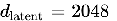
) ومسوِّدة
MTP تعاودية للفك التأملي على سياق حتى 1M رمز27.
وشهدت الأنوية الأساسية لـ SSM والانتباه نفسها تحديثًا جوهريًا. فقد قدّم
Aakash Lahoti وTri Dao وAlbert Gu وآخرون Mamba-3
(arXiv:2603.15569، ICLR 2026)32: إذ أزال الانتقال إلى التقطيع
الأسي شبه المنحرف من الرتبة الثانية في الدقة الحاجة إلى التفاف 1D خارجي، وسمحت
انتقالات الحالة العقدية (المكافئة لـ
RoPE المعتمد على المُدخل) بتتبع التكافؤ (Parity) بدقة
100%، ورفعت صياغة MIMO من الرتبة الكثافة الحسابية للفك بمقدار 4× دون زيادة في
التأخير، مساوية الحالة بالسابقة 329. وفصل Ali Hatamizadeh وYejin Choi وJan
Kautz بوابتي المحو والكتابة في Gated DeltaNet-2
(arXiv:2605.22791)248، وأصدر مختبر Tri Dao
FlashAttention-4 (arXiv:2603.05451) للتوسع اللامتماثل
لمسرّعات NVIDIA Blackwell (B200/GB200): فقد أتاحت
المحاكاة متعددة الحدود للدالة الأسية على وحدات FMA والتخطي
الشرطي لإعادة تحجيم softmax المتصل عند بلوغ 1,600 TFLOPs/s (71% من الذروة)، وخفّضت
كتابة النواة بلغة Python عبر CuTe-DSL زمن التصريف 20–30
مرة مقارنة بقوالب C++223. وعند تقاطع الحلقات والانتشار أنشأ Sanghyun Lee
وآخرون Looped Diffusion Language Models (LoopMDM)
(arXiv:2605.26106، NeurIPS 2026)، بتكرار الطبقات الأولى–المتوسطة لنموذج
لغوي انتشاري مقنَّع مع توفير يصل إلى 3.34× من FLOPs
التدريب188 (وطُوِّر في Looped UDLMs،
arXiv:2610.3006656)؛ وصدرت كذلك دراسة تشبّع المُرمِّز 7B
LoopCoder-v2 (PLT-7B) (arXiv:2606.18023)38،
وHyperloop Transformers (arXiv:2604.21254)334،
وLoopFold (arXiv:2610.35556)194، والنموذج الحلقي
المفتوح MoE Inkling 2 Mini (Thinking Machines Lab،
26.4B-A3.4B، 3 مرورات للطبقات المتوسطة + AttnRes)197.
في الفيديو التوليدي نشرت Lightricks LTX-2
(arXiv:2601.03233، DiT لامتماثل ثنائي التدفق من تدفق فيديو 14B مع RoPE
ثلاثي الأبعاد وتدفق صوت 5B مع RoPE أحادي البعد، مرتبطين بانتباه متقاطع
ثنائي الاتجاه عبر الزمن)335، وفي أغسطس 2026 أصدرت
LTX-2.5 ذا 22 مليار معامل (مُرمِّز نصي Gemma 4 12B، توليد
فيديو متزامن حتى 4K بمدة تصل إلى 20 ثانية وصوت ستيريو 24 كيلوهرتز في
مرور واحد، واستمرارية المشاهد متعددة اللقطات والتحكم عبر IC-LoRA)258،
بينما في توليد الصور خفّض المحوّل المنفصل DDT-XL/2 لـ
Wang وآخرين (CVPR 2026، arXiv:2504.05741) قيمة FID على ImageNet 256×256
إلى 1.26219. وفي الكلام ثنائي الاتجاه المتزامن قدّم فريق
NVIDIA PersonaPlex 7B (arXiv:2602.06053، محثّ هجين مثبَّت
في السياق للدور وعينة الصوت فوق معمارية Moshi + Mimi: الطبيعية DMOS
3.90 ± 0.15 وتشابه استنساخ الصوت SSIM
0.57)68 وNemotronLabs VoiceChat
(arXiv:2609.21967، أول نموذج STS مفتوح ثنائي الاتجاه المتزامن
(Full-Duplex) مع الاستدعاء الأصلي للأدوات Tool Calling، ونسخ مساعد بـ
RNN-T، واعتراض بنسبة 100% عند المقاطعة واستئناف الكلام بنسبة 93% بعد
تعبيرات المستمع القصيرة)69. وأكمل المنظومة الصوتية المتدفقة
Qwen3-TTS (arXiv:2601.15621، فرع سببي بتردد 12.5 هرتز
مع MTP ذي 16 دفتر شفرات وتأخير الحزمة الأولى نحو 97–100 ميلي
ثانية) وQwen-Audio-3.0-TTS
(arXiv:2607.23938)54، وQwen3.5-Omni (arXiv:2604.15804،
مواءمة ARIA)342، وFish Audio S2-Pro (arXiv:2603.08823،
TTFA ~100 ميلي ثانية، RTF 0.195) وDrama 3
(arXiv:2610.18010)158، وKyutai Pocket TTS العامل بسرعة
أعلى من الزمن الحقيقي بـ 6× على نواتين من وحدة المعالجة المركزية في
حاسوب محمول (100M معامل، MIT)344، وMistral Voxtral
Realtime المتدفق (arXiv:2602.11298، تأخير 480 ميلي ثانية)345،
وGigaAM Multilingual (arXiv:2607.10371، Interspeech
2026)346 وNemotron 3.5 Transcribe ثنائي الفرعين (TDT +
مُقسِّم المتحدثين Sortformer)348.
2027
المجالات: الانتباه/LLM الحلقات/SSM الانتشار الفيديو
التحسين
يتركز البرنامج العلمي لعام 2027، الذي ثبّتته بحلول
نوفمبر 2026 المنشورات المقبولة في مؤتمرات الشتاء–الربيع WACV
2027 وAAAI / IAAI 2027 وWSDM
2027 وDATE 2027 والمدوّنة المفتوحة المحكَّمة
المؤلفة من 37,028 تقديمًا في ICLR 2027 على OpenReview،
على التوحيد النظري للنماذج التوليدية ومعالجة الأمراض العددية–الطورية
الدقيقة في الشبكات الهجينة والحلقية15. ففي الورقة المقبولة في WACV 2027
لـ Amandeep Kumar وNithin Nair وVishal Patel بعنوان «Scale-wise VAR
is Secretly Discrete Diffusion» (№ 444)17 أُثبت بصرامة أن النماذج
الانحدارية الذاتية البصرية للتنبؤ بالمقياس التالي (VAR) مكافئة وظيفيًا
للانتشار المقنَّع المتقطع بحسب المقياس في الفضاء الكامن متعدد المقاييس.
وقُدِّمت كذلك في أعمال WACV 2027 وAAAI/IAAI 2027 محوّلات الفيديو المقنَّعة
للتقطيع طويل المدى LVMT (Norouzi et al.)16، والمخططات
التدفقية أحادية الخطوة (arXiv:2608.09579)، ومفكّكات الانتشار
PixCell (arXiv:2611.01141)، والانحيازات البنيوية
للانتباه (arXiv:2611.04657)، والمعماريات الصناعية للاسترجاع الموثوق
المقيَّد (arXiv:2611.20398)19.
وفي مدوّنة ICLR 2027 المحكَّمة ظهرت ثلاث آليات أساسية من الجيل التالي.
أولًا، بيّن تحليل الضغط بالأجزاء لمخبأ KV («Periodic Weak Spots: Phase
Sensitivity from Chunked KV-Cache Compression») أنه في نماذج صنف
DeepSeek-V4 تتفاوت دقة استخراج الوقائع حتى 40 نقطة
مئوية بحسب طور موضع الرمز بالنسبة لحدود نافذة الضغط نتيجة نشوء
رؤوس متخصصة بالطور15. ثانيًا، أثبت عمل حول الاستقرار العددي للمرور العكسي
للانتباه (OpenReview:LJvGaCWmFh) أن انفجارات التدرج المتأخرة عند التدريب
بـ BF16 FlashAttention-3 ناتجة عن انتهاك التقريب BF16
لقانون الحفظ الدقيق لمجموع تدرجات صف softmax (الخطأ الوسيط لتدرج
الاستعلامات 219%)، واقترح تصحيحًا لنواة المرور العكسي يخفض الخطأ إلى
0.34% / 0.37% (مستوى FP32) بزيادة في كلفة الخطوة قدرها
4.7% فقط352. ثالثًا، اقتُرحت Variable-Width («Hourglass»)
Transformers المتضيقة في المنتصف، وMatryoshka Language
Model Suites المتداخلة (توفير 36% من الحساب لتدريب سلسلة
الأحجام) وطريقة SafeBridge لمواءمة أمان النماذج الحلقية
عند جميع أعماق التكرار — ردًا على اكتشاف أن خفض عدد الحلقات إلى النصف
أثناء الاستدلال في Ouro وHuginn يحافظ على 89% من الدقة على GSM8K لكنه
يدمّر متجه الرفض المتكوّن متأخرًا، مما يرفع الهشاشة أمام الطلبات الضارة
بمقدار 5.3–9.9 مرة15.
Scale-wise VAR = dLLM؛ تحليل أطوار KV في
DeepSeek-V4؛ BF16 FA-bwd الدقيق؛ Hourglass LM؛ SafeBridge
تماثل VAR والانتشار المقنَّع؛ قانون حفظ تدرج
softmax؛ الأمان عبر الحلقات
Kumar et al. (WACV'27, № 444)17,
OpenReview ICLR'2715
يقع تحوّلان نظاميان حاسمان في المعماريات اللغوية المفتوحة خلال
2024–2026 في مستوى إدارة ذاكرة بطاقات الرسوميات: الضغط الجذري لحالة
السياق (عبر مخبأ MLA منخفض الرتبة واستبدال 75% من طبقات الانتباه بذاكرة
مصفوفية ثابتة الطول هي Gated DeltaNet أو KDA)، والانتقال إلى التنشيط
فائق التناثر للأوزان، إذ يُنشَّط لكل رمز، عند حجم إجمالي للمعرفة يبلغ
0.7–2.8 تريليون معامل، ما بين 3.1% و10.0% فقط من الشبكة4.
ويفسّر مقارنةُ أحجام الذاكرة المذكورة الاقتصادَ العملي للاستدلال الوكيلي
طويل السياق: ففي النماذج المنتظمة ذات الانتباه الكامل يتجاوز النمو الخطي
لمخبأ KV بسرعة حجمَ أوزان النموذج نفسها، مما يُجبر على توزيع الاستدلال على
عدة عقد لمجرد تخزين تاريخ الحوار196. وعلى العكس، فإن المعمارية الهجينة
3:1 تجمّد تمامًا نمو الذاكرة في 75% من طبقات الشبكة (مبقيةً إياها عند 72
ميبيبايت في BF16 بغض النظر عن كون طول السياق 32K أو 1M رمز)، ومع 3–5% من
الخبراء النشطين تتيح خدمة المسارات متعددة الخطوات بكلفة أقل بمرتبة كاملة
عند تساوي الجودة30.
ملاحظة حول الإسناد (حتى 25.11.2026): أُوردت المقاييس وفق
التقارير التقنية الرسمية وبطاقات النماذج لدى المطوّرين؛ وحيثما توفرت
قياسات أو مراجعات مستقلة (Epoch AI وArtificial Analysis والملخصات
التقنية) فإن المصدر مذكور صراحةً في الخلية31. وتعني الشرطة (—) غياب نشر
مقارن للمقياس في المصدر الأول.
تتجلى ديناميكية كثافة الذكاء بين جيلي 2025 و2026 بوضوح خاص عند مقارنة
المسائل العلمية والأولمبية المعقدة (GPQA Diamond وAIME 2026) بالكفاءة
المعاملية للنماذج ذات العمق العودي10.
وتكشف البيانات المذكورة قانونية مهمة: في مهام الاستنتاج الاستنباطي
التسلسلي (AIME وMATH-500) لا يكون العامل الحاسم هو العدد الخام للمعاملات
الفريدة، بل العمق الفعّال للتحويلات اللاخطية المتسلسلة — الذي
يتحقق إما صراحةً عبر نمط الاستدلال في السياق (إذ يرفع نمط Thinking في
Gemma 4 26B-A4B ذي 3.8B معامل نشط نتيجة AIME 2026 إلى 88.3% مقابل 20.8%
لدى Gemma 3 27B غير المستدلّ)، وإما ضمنيًا داخل الحالة المخفية عبر مرورات عودية على مكدس الطبقات المشترك في
Ouro-2.6B286.
الجدول
أ.3. النماذج اللغوية ذات العمق العودي (الحلقية) والانتشارية
(2025–2026)
النموذج / المعمارية
النمط (paradigm) وطوبولوجيا العمق
المعاملات الفريدة / رموز التدريب
المقاييس التجريبية الرئيسية
والتسريعات
Huginn-0125
(arXiv:2502.05171)3
حلقة ساندويتشية مع حقن المُدخل بالتسلسل (concat) و ، ()
3.5B / 800B رمز (4,096 MI250X)
عند زيادة الحلقات : ARC-Easy 49.07%69.91%، HellaSwag 43.46%65.21%، GSM8K CoT 42.08%؛ مشاركة KV بلا أمثلة (zero-shot) على
4 فتحات دون خسائر في MT-Bench (5.86)284
Ouro-1.4B & Ouro-2.6B
(arXiv:2510.25741)286
حلقة المكدس الكامل () مع بوابة خروج مبكر قابلة للتعلم (ACT
gate)
v1.0: جودة حركة 66.5% في اختبار أعمى
(60–80 غيغابايت VRAM)؛ v1.5: تصيير خلال ~75 ث على RTX 4090
واحدة (step-distilled)297
Wan 2.1 (فبراير 2025)
& Wan 2.2 (يوليو 2025، Apache 2.0)172
Flow-Matching DiT؛ وفي 2.2 — MoE
زمني ثنائي الخبراء بحسب SNR وVAE مضغوط
27B-A14B MoE (4×8×8)
وTI2V-5B (4×16×16)
رائد النماذج المفتوحة في الجمالية (85.3
على Wan-Bench 2.0) وVBVR (0.371 مقابل 0.273 لدى CogVideoX-1.5)؛ نموذج 5B
يصيّر 720p@24fps على RTX 4090 واحدة172
LTX-VideoLTX-2LTX-2.5 (أغسطس 2026،
Lightricks)259
Video-VAE فائق الضغط (1:192) DiT صوتي–مرئي لامتماثل ثنائي
التدفق مع انتباه متقاطع 1D/3D-RoPE
2B/13B
19B (14B V + 5B A) 22B (+Gemma 4 12B)
توليد فيديو متزامن حتى 4K (حتى 20 ث في
Fast) وصوت ستيريو 24 كيلوهرتز (حوارات، فولي، مزامنة الشفاه) في مرور
واحد؛ التشغيل من 12–24 غيغابايت VRAM بـ FP8297
وبالتزامن في المجالين البصري والكلامي اقتربت النماذج التوليدية بحلول
2026 اقترابًا وثيقًا من حدّين فيزيائيين أساسيين: حد دقة إعادة بناء المُرمِّز
الذاتي الكامن نفسه (rFID = 1.20 لدى SD-VAE القياسي على ImageNet 256×256)
ومتوسط مدة الوقفة الطبيعية بين الجمل في المحادثة البشرية الحية (230 ميلي
ثانية وفق القياسات عبر اللغات)70.
ويفسّر بلوغ مزيلات الضجيج عتبة FID قدرها 1.26 مقابل 1.20 لدى SD-VAE نفسه
سبب انتقال التركيز البحثي في النصف الثاني من 2025–2026 من تعديل محوّل
الانتشار نفسه إلى إعادة تصميم الفضاءات الكامنة للمُرمِّزات الذاتية — من
الضبط الطرفي لـ VAE بمساعدة REPA-E إلى الفضاء ذي 128 قناة
FLUX.2-VAE والفضاء الفيديوي عالي الضغط
Wan2.2-VAE36. وفي المقابل، في المنظومة الكلامية، أتاح
الانتقال إلى تردد إطارات منخفض جدًا قدره 12.5 هرتز (خطوة
80 ميلي ثانية في Mimi وQwen3-Omni وQwen3-TTS) حصر توليد أول حزمة صوتية
في خطوة أو خطوتين من المفكّك الانحداري الذاتي، فصار التواصل الصوتي الحي
مع المقاطعات لا يُميَّز زمنيًا عن حوار البشر48.
أول حزمة صوتية خلال ~97–100 ميلي
ثانية على المسار السببي 12.5 هرتز؛ انخفاض الخطأ ZH→KO بنسبة 66% مقارنة بـ CosyVoice 3 (4.82
مقابل 14.4 WER)؛ >10 دقائق من الكلام المستقر63
Kyutai Pocket TTS (يناير
2026، MIT)315
TTS نموذج صوتي–لغوي مستمر مع تضجيج
الكامنات (100M معامل)
خرج 24 كيلوهرتز دون GPU
يعمل بسرعة ~6× أسرع من الزمن
الحقيقي على نواتين من CPU (MacBook Air M4)، تأخير القطعة الأولى
~200 ميلي ثانية، استنساخ الصوت، 6 لغات344
Fish Audio S2-Pro (مارس
2026)158
TTS Dual-AR تسلسلي (Fast AR على دفاتر
الشفرات) + GRPO + SGLang
RVQ ذو 10 دفاتر شفرات (قاعدة DAC)
أكثر من 80 لغة، TTFA ~100 ميلي
ثانية، RTF 0.195 على H200 (>3000 رمز/ث)،
فوز بنسبة 81.88% في EmergentTTS-Eval (91.61% في الاستدلال شبه
اللغوي)55
Full-Duplex-Bench 1.0: اعتراض 100%
عند المقاطعة، جودة الرد 4.33/5؛ FDB 1.5: 93% عودة إلى
الكلام بعد التعبيرات القصيرة؛ FDB 3.0: 82.5% F1 في
اختيار الأدوات69
الجدول
أ.6. سجل المستودعات المفتوحة الرئيسية لمعماريات الشبكات العصبية وأنويتها
(Open-Source Ecosystem)
المجال
المستودع (GitHub / المنظمة)
الترخيص
الآليات المنفَّذة والقيمة الهندسية
فهرس معماريات LLM
rasbt/llm-architecture-gallery197
Apache-2.0
بيانات وصفية models.yml ومخططات وحاسبة
ذاكرة لـ 132 معمارية LLM حديثة (حُدِّث في نوفمبر 2026)
أنوية الانتباه (Hopper /
Blackwell)
Dao-AILab/flash-attention223
BSD-3
FlashAttention-1/2/3
وFlashAttention-4 بلغة Python عبر CuTe-DSL (softmax
المتصل الشرطي، خطوط أنابيب B200 غير المتزامنة)
يطابق هذا الملحق بين أنواع النماذج والآليات التي تعدّها الدراسة محطات
مفصلية (معظمها بين 2012 و2027، إضافة إلى الأسس التي يعتمد عليها basalt)
وبين basalt main بحسب حالته في 2026-11-27. لا يُعدّ الصف «مدعومًا» إلا إذا
وصل إليه model_type مسجَّل أو علم مقبول أو نقطة نهاية موجَّهة
مع أوزان حقيقية. أما الأنوية المستقلة، والأعلام المرفوضة أو التجريبية
فقط، والوحدات التي تحمّل الأوزان بأقصى جهد فوق هيكل مبذور، فتُعدّ «جزئي».
وحيثما يختلف README الخاص بـ basalt مع الشيفرة أو CHANGELOG، فالمعتمد هو
الشيفرة وCHANGELOG.
الروابط إلى https://github.com/goodmai/mlx-swift-lm/...
تشير إلى مراجعة النسخة المتفرعة المثبَّتة 8e76c2f
(Package.swift)، وفيها معظم تعريفات المعماريات.
قائمة التحقق الخاصة بهذه الصفوف لكتاب مسائل الدراسة تُتابَع في المسألة
#816.
الأسس (Basis)
الآلية / نوع النموذج
الفصل (السنة)
الحالة في basalt
الموضع في basalt
Perceptron Mark I بوصفه آلة عتادية
1958; B.1
خارج النطاق
جهاز مادي. أما الوحدة الخطية نفسها فهي
MLXNN.Linear.
يوجد فقط sLSTM، وهو خلية LSTM ببوابات أسّية، ككتلة اختيارية في
xlstm (XLSTMOps.swift،
#864). وهي
اصطناعية: ليس لها تخطيط مأخوذ من نقطة حفظ عامة، ولا تُختبر إلا على تجهيزة
صغيرة مقابل مرجع على CPU. لا يوجد LSTM أو GRU تقليدي.
Seq2Seq بانتباه جمعي (Bahdanau)
2014
جزئي
نمط المشفّر→فاكّ الترميز موجود فقط على هيئة مشفّر صوتي → LLM (Nemotron
3.5 Transcribe، NemotronTranscribeEncoder.swift)
وعلى هيئة انتباه متقاطع نصي في هياكل DiT. أما التسجيل الجمعي فغائب.
المحوّل (Transformer) بانتباه متعدد الرؤوس، والنموذج اللغوي السببي ذو
فاكّ الترميز فقط (GPT-1…3)
2017–2020
مدعوم
SDPA المدمج في MLX في كل نموذج من النسخة المتفرعة. المسارات المدمجة
الخاصة بـ basalt في FusedTransformerKernels.swift.
يقدّمه basalt serve عبر واجهتي OpenAI وAnthropic (الأوامر).
مشفّرات عائلة BERT تخدم /v1/embeddings
و/v1/rerank (Bert.swift،
#178). لا
يوجد رأس MLM ولا تدريب MLM.
ModernBERT
2024
غير مدعوم بعد
تضم MLXEmbedders كلًّا من Bert وNomicBert وQwen3 وGemma3
وLFM2Bidirectional، ولا تضم ModernBERT.
قوانين التدرّج، وChinchilla، وμP
2020–2022
خارج النطاق
هذه تحكم توزيع حوسبة ما قبل التدريب، وbasalt لا يجري أي تدريب
مسبق.
الانتباه والترميز
الموضعي (Attention/LLM)
الآلية / نوع النموذج
الفصل (السنة)
الحالة في basalt
الموضع في basalt
MQA وGQA
2019, 2023
مدعوم
رؤوس KV مشتركة في كل طبقة انتباه في النسخة المتفرعة. يستخدم
Qwen3.8-27B أربعة رؤوس KV. وتستخدم الطبقات العامة في Gemma 4 12B القيمة
num_global_key_value_heads = 1. تقدير حجم KV في النماذج.
FlashAttention: انتباه مقسَّم إلى بلاطات مع softmax تراكمي
2022; B.5
مدعوم
SDPA المدمج على Metal
(MLXFast.scaledDotProductAttention). تُحدَّد أقصى أحجام مقاطع
التعبئة المسبقة غير المدمجة بواسطة PrefillAttentionScratch.swift
(#762).
أنوية FlashAttention-2/3/4
2023–2026; B.5
خارج النطاق
أنوية CUDA لمعماريات Ampere وHopper وBlackwell (تخصيص الـ warp وTMA
وexp المحاكاة بـ FMA). وعلى معالجات Apple الرسومية يؤدي SDPA في MLX
Metal هذا الدور.
partial_rotary_factor تساوي 0.25 في الطبقات العامة من
Gemma 4 (Gemma4Text.swift).
يُرفض YaRN مع p-RoPE (#729).
إعادة استخدام المفاتيح قيمًا، K = V (Gemma 4)
2026
مدعوم
تقرأ النسخة المتفرعة attention_k_eq_v. يخزّن
--experimental-kv-shared-row صفًّا واحدًا من 640 قيمة لكل رأس،
أي 0.625 من KV العام (KEqVRowKVCache.swift،
#645).
يطابق GatedMLAAttention ببوابات للمخرجات وللقيم وبلا
ترميز موضعي (NoPE) (GatedMLAAttention.swift،
#864) مرجعًا على
CPU على تجهيزات صغيرة، لكن لا يستخدمه أي نوع نموذج. ويقبل MLA في
bailing_hybrid أيضًا خياري NoPE وبوابة المخرجات، دون تشغيل بأوزان حقيقية
حتى الآن (#672). لم تُشغَّل
أي نقطة حفظ لـ Kimi K3 أو Tencent Hy4.
لمفهرس البرق وانتباهه المتناثر top-k نوى Metal تطابق مرجعًا على CPU
على تجهيزات صغيرة (DSALightningIndexer.swift،
DSALightningIndexerMetal.swift،
#864)، ويقبل
bailing_hybrid مفهرسًا عبر مفاتيح الإعداد dsa_*. لا تحمل أي
نقطة حفظ مفتوحة بحجم 40B أو أقل أوزان مفهرس مدرَّبة،
و--attention-backend dsa غير متاح.
الانتباه المضغوط CSA + HCA (DeepSeek V4)
2026
غير مدعوم بعد
لم يُعثر على أي دليل.
إسقاط متعدد الوسائط بلا مشفّر (Gemma 4 12B Unified)
2026
جزئي
gemma4_unified مسجَّل، وتذهب رقع الصور مباشرة إلى فاكّ
الترميز (Gemma4UnifiedVisionEmbedder في Gemma4.swift).
يمرّر basalt الصوت عبر النسخ النصي (PipelineRunner.swift)،
لا بوصفه مقاطع خام مدتها 40 ms.
من قاعدة دلتا إلى Gated DeltaNet (Fast Weight Programmers وDeltaNet
وGDN)
1991, 2021, 2024; B.7
مدعوم
بالصيغة المبوَّبة فقط، في هجائن qwen3_5/3.6/3.8 (يخضع Qwen3.8-27B
لاختبار golden). المسار السريع على Metal هو GatedDeltaFastPath.swift.
Kimi Delta Attention (KDA)
2025; B.7
مدعوم
bailing_hybrid (Ling-3.0) بنواة KDA على Metal لكل قناة (BailingHybridKDAKernel.swift،
#672). أما
نوع النموذج kimi_linear نفسه فغير مسجَّل. على الأوزان
الحقيقية يبلغ rapid-mlx/Ling-3.0-tiny-MLX-4bit 1.09 بت/بايت
على النثر و0.15 على الشيفرة (#672، #871)؛ أما بنود P3
المتبقية (passkey وTTFT وإنتاجية بناء release) فما زالت مفتوحة.
الجيل الثاني من أنوية SSM ودلتا: Mamba-3 (MIMO، انتقالات مركّبة)
وGated DeltaNet-2
2026; B.7
جزئي
يحمّل mamba3 (Mamba3Model.swift،
#867) أوزان
state-spaces/mamba3-mimo-187m الحقيقية (بعد تحويل آمن
.bin → safetensors) مع التحقق من كل موتر، وفي float32 يساوي
فكُّ ترميزه خطوةً بخطوة التمريرَ المقسَّم إلى كتل (#871). لم تُقَس
الحيرة (perplexity)، لأن نقطة الحفظ تستخدم مجزِّئ Llama-3.1 المقيَّد الوصول.
أما gdn2 (GatedDeltaNet2Model.swift،
#867) فلا يعمل
إلا على تجهيزة صغيرة؛ ولا توجد نقطة حفظ.
يعمل rwkv7 (RWKV7Model.swift،
#840) بأوزان
حقيقية: يبلغ fla-hub/rwkv7-2.9B-world 1.02 بت/بايت على
النثر مع المجزِّئ RWKV World (#871). ويعمل
xlstm (XLSTMModel.swift،
#864) بأوزان
حقيقية: يبلغ NX-AI/xLSTM-7b نحو 1.01 بت/بايت على النثر بعد
احترام force_bos_token_insert (#871). أما كتلة
sLSTM فيه فاصطناعية وليست لها نقطة حفظ. وRetNet غير مدعوم.
هجين 3:1 من الانتباه الخطي والكامل (Qwen 3.5/3.8)
2026
مدعوم
لدى Qwen3.8-27B ما عدده 48 طبقة GDN و16 طبقة انتباه مبوَّب، ويخضع
لاختبار golden. تتيح لقطات الحالة التكرارية إعادة استخدام ذاكرة الموجِّه
المؤقتة (HybridPrefixSnapshot.swift،
#79).
تحدّث ttt (Linear وMLP) وtitans (MAC وMAG
وMAL) وlact (TTTModel.swift،
TitansModel.swift،
LaCTModel.swift،
#867) أوزانًا
سريعة داخل الطبقة وقت الاستدلال. وهي تطابق مراجع عددية على CPU على
تجهيزات صغيرة؛ ولم يُربط أي تخطيط لنقاط الحفظ الأصلية ولم يُشغَّل.
طوبولوجيا العمق (Loops)
الآلية / نوع النموذج
الفصل (السنة)
الحالة في basalt
الموضع في basalt
الوصلات الفائقة (HC)، وmHC على متعدد وجوه Birkhoff، وiHC
البواقي الانتباهية (AttnRes)، الانتباه على امتداد العمق
2026; B.8
مدعوم
يطبّق Inkling 2 الانتباه على كتل بواقٍ من 6 طبقات
(depthAttention في Inkling2Layers.swift)،
مع مطابقة لـ mlx-lm (#755).
عمق مكرَّر بأوزان مشتركة (من Universal Transformer إلى النماذج اللغوية
المكرَّرة)
2018–2026; B.9
مدعوم
يشغّل مشغّل الحلقة في Inkling 2 الطبقات 6–17 ثلاث مرات، أي 48 زيارة
للطبقات (Inkling2Model.swift،
#650).
Huginn-0125 وOuro وParallel Loop Transformer (التوازي عبر
الحلقات)
2025; B.9
جزئي
يعمل Huginn-0125 (huginn_raven، HuginnModel.swift،
#838) وOuro
(ouro، OuroModel.swift،
#832)
وLoopCoder-V2 (iquestpltcoder، PLTModel.swift،
#869) بأوزان
حقيقية؛ ويبلغ LoopCoder-V2 حيرة 1.93 على الشيفرة بحلقتين مقابل 15.5
بحلقة واحدة. التخزين المشترك لـ KV الحلقة 0 والنافذة المنزلقة المبوَّبة في
PLT منفَّذان، لكن الحلقات تعمل واحدة بعد أخرى (نحو 1.6× كلفة الرمز)،
فالتوازي عبر الحلقات نفسه غير موجود.
التوقف التكيفي (ACT) وبوابات الخروج المبكر (Ouro)
2016, 2025; B.9
مدعوم
--experimental-loop-exit <threshold> (LoopExit.swift،
#820): يستخدم
Ouro بوابة الخروج المدرَّبة الخاصة به؛ ويستخدم Inkling 2 وHuginn خروجًا لا
يحتاج إلى تدريب يعتمد على التغيّر النسبي في المتبقّي (residual) بين
التمريرات. على Huginn-0125 تعطي العتبة 0.1 سرعة فك ترميز أعلى بمقدار
2.3× مقابل زيادة في الحيرة (perplexity) بنسبة +1.9% (#849).
المحوّلات متغيرة العرض Hourglass، ومجموعات Matryoshka، وأمان
SafeBridge عبر أعماق الحلقات
2027
غير مدعوم بعد
لم يُعثر على أي دليل. توجد أدوات اتجاه الرفض
(steer_search، أدوات
البحث)، لكنها لا تعمل على شيء لكل عمق حلقة.
مُحسِّنات أخرى: AdaGrad وRMSProp وAdafactor وShampoo/SOAP والمُحسِّنات ذات
8 بتات
2011–2024; B.4
جزئي
يدرّب --optimizer soap (SOAPOptimizer.swift،
#853) محوّلات
LoRA وقد شُغِّل على Gemma 4 12B (انخفض NLL على المجموعة المحجوزة من 5.954
إلى 3.010 في 20 خطوة). تأتي AdaGrad وRMSProp وAdafactor ضمن MLXOptimizers،
لكن basalt لا يبنيها. ولم يُعثر على دليل لـ Shampoo مستقل أو لحالات 8
بت.
Muon وMuonClip (Newton–Schulz وQK-Clip)
2024–2025; B.4
جزئي
يشغّل --optimizer muon مُحسِّن Muon بجذر متوسط مربعات مطابَق
وتكرارات Newton–Schulz (MatchedRMSMuonOptimizer.swift،
#840، #853) في مدرّبات
المحوّلات، وقد شُغِّل على Gemma 4 12B (انخفض NLL على المجموعة المحجوزة من
5.954 إلى 3.530 في 20 خطوة). أما QK-Clip في MuonClip (QKClipController.swift)
فلا يُختبر إلا على تجهيزة صغيرة: مدرّبات المحوّلات، وهي مسار التدريب
الوحيد، ترفض --optimizer muonclip لأنها تجمّد
W_q وW_k.
يطبّق basalt models train --grpo (GRPOTrainer.swift،
#840) تحديثات
نسبية للمجموعة مع قصّ PPO، تحقَّق منها على تجهيزة صغيرة. في تشغيل Gemma 4
12B حُلّت كل الـ rollouts الحسابية، فكانت الميزة صفرًا في كل مجموعة ولم
يُطبَّق أي تحديث (#822).
تحتفظ train_experts فقط بالإجابات التي يقبلها المتحقِّق،
وتدرّب LoRA، وتتراجع إذا ساء KL أو PPL على المجموعة المحجوزة (MLXInferenceEngine+LabTrain.swift،
أدوات
البحث). توجد تحديثات بتدرّج السياسة على مكافآت قابلة للتحقق عبر
--grpo، لكنها لم تغيّر أوزانًا حقيقية بعد (انظر GRPO).
تُستورد طبقات FP8 من ModelOpt بوصفها affine بـ 8 بتات، ويُرفض FP8 لكل
قناة (ModelOptImporter.swift،
#677). ويعمل
LoRA فوق أسس mxfp8 (#675). لا يوجد
حساب بـ FP8.
يعمل LLaDA-8B (llada، LLaDAModel.swift)
مع أوزان حقيقية تحت --experimental-dllm عبر مشغّل Fast-dLLM
(FastDLLMRunner.swift،
#832، #833) مع نواة
انتباه مدمجة ثنائية الكتلة (#840). أما Dream
وMercury فغير مدعومين. ولا يُشغَّل nemotron_labs_diffusion من
النسخة المتفرعة إلا على مساره الانحداري الذاتي.
نماذج الانتشار اللغوية المكرَّرة (LoopMDM وLooped UDLM) وVAR على مستوى
المقياس بوصفه انتشارًا منفصلًا (WACV 2027)
تظهر فقط بوصفها أبراجًا: CLIP-L داخل DeepSeek-OCR (DeepSeekOCR.swift)،
وSigLIP داخل PaliGemma وIdefics3 (Paligemma.swift).
لا توجد نقطة نهاية لتضمين الصورة–النص أو للتصنيف دون أمثلة، ولا تدريب
تقابلي.
MAE وDINO / DINOv2 / DINOv3
2021–2025
غير مدعوم بعد
لم يُعثر على أي دليل.
عائلة JEPA: I-JEPA وV-JEPA 2 وLeJEPA
2023–2026
جزئي
يدرّب basalt models train-jepa وحدة LoRA ومُسقِطًا من نوع
LeJEPA على نص متعدد المناظير (LeJEPALoss.swift،
الأوامر).
لا يوجد JEPA للصور أو الفيديو.
نماذج LLM متعددة الوسائط الأصلية مع RoPE متعدد الوسائط/ثلاثي الأبعاد
(الدمج المبكر في Llama 4 وM-RoPE في Qwen-VL وKimi K2.5)
2024–2026
مدعوم
عائلات MLXVLM وهي gemma4 وqwen3_5 وqwen3_vl وmistral3 وmuse_glimmer.
يُعالَج mrope_section في Qwen3.8 داخل النسخة المتفرعة. ويعمل
OCR على DeepSeek-OCR-2 وPaddleOCR-VL. ويستخدم الفيديو Fractional3DMultimodalRoPE.swift.
الكلام والصوت
ثنائي الاتجاه الكامل (STT / TTS / STS)
Whisper والتعرف السريع على الكلام (Parakeet-TDT وCanary وSenseVoice
وGigaAM وVoxtral Realtime)
2022–2026
مدعوم
يوجّه /v1/audio/transcriptions كلًّا من Whisper
(whisper، Speech/Whisper،
#838)
وParakeet-TDT (Speech/Parakeet،
#839) عبر
SpeechRecognitionModel، وقد قيسا مع أوزان حقيقية في #818. لا تزال
مستودعات Whisper في mlx-community تحتاج إلى tokenizer.json
(#851). أما
Canary وSenseVoice وGigaAM وVoxtral Realtime فغير مدعومة.
يشغّل ZONOS3-Mini عمودًا فقريًا من Llama بحجم 1.6B فوق رموز
المرمِّز-الفاكّ بمعامل RTF يتراوح بين 0.23 و0.26 (Zonos3MiniLM.swift،
#527). أما
وحدة Qwen3-TTS (Qwen3TTSSynthesizer.swift)
فهيكل.
نموذج كلام لغوي ثنائي الاتجاه الكامل (Moshi مع Mimi)
2024; B.12
جزئي
مشغّل جلسات الازدواج في LFM2.5-Audio لا يحمّل أي أوزان (LFM25AudioSessionRunner.swift).
والصوت بلا استخدام اليدين في تطبيق Mac عبارة عن تعاقب من SpeechAnalyzer
وLLM وTTS (#604).
الواجهات الخلفية للصور والفيديو موجَّهة (/v1/images/*
و/v1/videos/* في RESTServer.swift).
تبني كل واجهة هيكلًا مبذورًا وتنسخ فيه فقط ملفات safetensors التي يطابق
مفتاحها وشكلها (ImageRunnerCore.swift،
VideoDiTCheckpointCompat.swift).
والتهيئة النصية للصور مضمِّن بتجزئة فورييه (SharedTextEncoderBridge.swift).
لم يُعثر على اختبار مطابقة لنقطة حفظ حقيقية، ولذلك صُنِّفت هذه الآليات
«جزئي».
/v1/embeddings و/v1/rerank (#178)، إضافة إلى
الذاكرة المؤقتة الدلالية LANTERN (#625). لم يُعثر
على فهرس استرجاع ولا على خط أنابيب RAG.
عائلات النماذج الرائدة
(الجدولان A.2–A.3)
الآلية / نوع النموذج
الفصل (السنة)
الحالة في basalt
الموضع في basalt
العائلات المخدومة فعلًا: Qwen3 وQwen 3.5/3.8 وGemma 4 وNemotron 3/3.5
وGLM-4.5 وInkling 2 Mini
2025–2026
مدعوم
صفوف موثَّقة في ModelCapabilities.swift.
تغطي اختبارات golden كلًّا من Gemma 4 26B-A4B وQwen3.8-27B وnemotron_h.
وglm4_moe يأتي من النسخة المتفرعة وغير موثَّق. ولدى Inkling 2
مطابقة مع mlx-lm (#755).
DeepSeek-V3 / R1
2024–2025
مدعوم
deepseek_v3 (DeepseekV3.swift)،
غير موثَّق في basalt. وبحجم 671B يتجاوز قدرة معظم أجهزة Mac.
Kimi K2
2025
جزئي
تخطيط DeepSeek-V3 يُحمَّل، لكن نوع النموذج kimi_k2 غير
مربوط. ولا يوجد إلا محلِّل استدعاءات الأدوات الخاص به (ToolCallFormat.swift).
نماذج الحدود ذات الانتباه المتناثر: DeepSeek-V3.2 وGLM-5 وDeepSeek
V4 Pro وKimi K3 وTencent Hy4
2025–2026
غير مدعوم بعد
لا يوجد نوع نموذج لهذه العائلات. لا توجد DSA وMLA المبوَّب وiHC إلا
كآليات على تجهيزات صغيرة (#864)، ولا يوجد
CSA/HCA. أما KDA وAttnRes فموجودان منفصلين (bailing_hybrid وInkling
2).
الإجمالي: 120 صفًا — مدعوم 55، جزئي 43، غير مدعوم بعد 18، خارج
النطاق 4.
المراجع
تضم الفهرس الببليوغرافي 445 مصدرًا أوليًا مرقَّمًا فرديًا
(منشورات علمية وكتب أساسية ومستودعات مفتوحة للفترة 1958–2027)، مرتبة
زمنيًا:
Rosenblatt, F. (1958). The perceptron: A probabilistic model for
information storage and organization in the brain. Psychological
Review, 65(6), 386–408.82
von Neumann, J. (1958). The Computer and the Brain. Yale
University Press.
Hubel, D. H., & Wiesel, T. N. (1959). Receptive fields of single
neurones in the cat's striate cortex. The Journal of
Physiology, 148(3), 574–591.86
Selfridge, O. G. (1959). Pandemonium: A paradigm for learning.
Proceedings of the Symposium on Mechanisation of Thought
Processes, HMSO, 511–529.87
Samuel, A. L. (1959). Some studies in machine learning using the
game of checkers. IBM Journal of Research and Development,
3(3), 210–229.
Widrow, B., & Hoff, M. E. (1960). Adaptive switching circuits
(ADALINE & LMS). IRE WESCON Convention Record, Part 4,
96–104.88
Kelley, H. J. (1960). Gradient theory of optimal flight paths.
ARS Journal, 30(10), 947–954.7
Steinbuch, K. (1961). Die Lernmatrix. Kybernetik, 1(1),
36–45.91
Caianiello, E. R. (1961). Outline of a theory of thought-processes
and thinking machines. Journal of Theoretical Biology, 1(2),
204–235.
Novikoff, A. B. J. (1962). On convergence proofs on perceptrons.
Proceedings of the Symposium on the Mathematical Theory of
Automata, 12, 615–622.92
Rosenblatt, F. (1962). Principles of Neurodynamics: Perceptrons
and the Theory of Brain Mechanisms. Spartan Books.
Widrow, B. (1962). Generalization and information storage in
networks of adaline "neurons" (MADALINE). Self-Organizing
Systems, Spartan Books, 435–461.
Block, H. D. (1962). The perceptron: A model for brain functioning.
I. Reviews of Modern Physics, 34(1), 123–135.94
Hubel, D. H., & Wiesel, T. N. (1962). Receptive fields,
binocular interaction and functional architecture in the cat's visual
cortex. The Journal of Physiology, 160(1), 106–154.96
Vapnik, V. N., & Lerner, A. Y. (1963). Pattern recognition using
generalized portraits. Avtomatika i Telemekhanika, 24(6),
774–780.98
Steinbuch, K., & Piske, U. A. W. (1963). Learning matrices and
their applications. IEEE Transactions on Electronic Computers,
EC-12(6), 846–862.
Dreyfus, S. E. (1962/1963). Variational problems with inequality
constraints. Journal of Mathematical Analysis and Applications,
4(2), 297–308.7
Polyak, B. T. (1964). Some methods of speeding up the convergence of
iteration methods (Heavy-Ball Momentum). USSR Computational
Mathematics and Mathematical Physics, 4(5), 1–17.100
Aizerman, M. A., Braverman, E. M., & Rozonoer, L. I. (1964).
Theoretical foundations of the potential function method in pattern
recognition learning. Automation and Remote Control, 25,
821–837.20
Wengert, R. E. (1964). A simple automatic derivative evaluation
program. Communications of the ACM, 7(8), 463–464.
Ivakhnenko, A. G., & Lapa, V. G. (1965). Cybernetic
Predicting Devices (Кибернетические предсказывающие устройства).
Наукова думка.7
Cover, T. M. (1965). Geometrical and statistical properties of
systems of linear inequalities with applications in pattern recognition.
IEEE Transactions on Electronic Computers, EC-14(3),
326–334.
Nilsson, N. J. (1965). Learning Machines: Foundations of
Trainable Pattern-Classifying Systems. McGraw-Hill.88
Ho, Y.-C., & Kashyap, R. L. (1965). An algorithm for linear
inequalities and its applications. IEEE Transactions on Electronic
Computers, EC-14(5), 683–688.
Tsypkin, Y. Z. (1966). Adaptation, training and self-organization in
automatic systems. Avtomatika i Telemekhanika, 27(1),
23–61.106
Braverman, E. M. (1966). The method of potential functions in the
problem of training machines to recognize patterns without a teacher.
Avtomatika i Telemekhanika, 27(10), 100–121.103
Fogel, L. J., Owens, A. J., & Walsh, M. J. (1966).
Artificial Intelligence through Simulated Evolution. John Wiley
& Sons.
Amari, S.-I. (1967). A theory of adaptive pattern classifiers.
IEEE Transactions on Electronic Computers, EC-16(3),
299–307.21
Cover, T., & Hart, P. (1967). Nearest neighbor pattern
classification. IEEE Transactions on Information Theory, 13(1),
21–27.
Sinkhorn, R., & Knopp, P. (1967). Concerning nonnegative
matrices and doubly stochastic matrices. Pacific Journal of
Mathematics, 21(2), 343–348.61
Ivakhnenko, A. G. (1968). The group method of data handling — a
rival of the method of stochastic approximation. Soviet Automatic
Control, 13(3), 43–55.104
Grossberg, S. (1968). Some nonlinear networks capable of learning a
spatial pattern of arbitrary complexity. PNAS, 59(2),
368–372.109
Vapnik, V. N., & Chervonenkis, A. Y. (1968). On the uniform
convergence of relative frequencies of events to their probabilities.
Doklady Akademii Nauk SSSR, 181(4), 781–783.
Minsky, M., & Papert, S. (1969). Perceptrons: An
Introduction to Computational Geometry. MIT Press.82
Bryson, A. E., & Ho, Y.-C. (1969). Applied Optimal Control:
Optimization, Estimation, and Control. Blaisdell Publishing.7
Fukushima, K. (1969). Visual feature extraction by a multilayered
network of analog threshold elements. IEEE Transactions on Systems
Science and Cybernetics, 5(4), 322–333.85
Linnainmaa, S. (1970). The representation of the cumulative
rounding error of an algorithm as a Taylor expansion of the local
rounding errors. Master's Thesis, University of Helsinki.113
Goldfarb, D. (1970). A family of variable-metric methods derived by
variational means (BFGS). Mathematics of Computation, 24(109),
23–26.
Ivakhnenko, A. G. (1970). Heuristic self-organization in problems of
engineering cybernetics. Automatica, 6(2), 207–219.115
Ivakhnenko, A. G. (1971). Polynomial theory of complex systems.
IEEE Transactions on Systems, Man, and Cybernetics, SMC-1(4),
364–378.115
Marr, D. (1971). Simple memory: A theory for archicortex.
Philosophical Transactions of the Royal Society of London B,
262(841), 23–81.7
Amari, S.-I. (1972). Learning patterns and pattern sequences by
self-organizing nets of threshold elements. IEEE Transactions on
Computers, C-21(11), 1197–1206.115
Kohonen, T. (1972). Correlation matrix memories. IEEE
Transactions on Computers, C-21(4), 353–359.118
Anderson, J. A. (1972). A simple neural network generating an
interactive memory. Mathematical Biosciences, 14(3–4),
197–220.
Nakano, K. (1972). Associatron — A model of associative memory.
IEEE Transactions on Systems, Man, and Cybernetics, SMC-2(3),
380–388.7
Wilson, H. R., & Cowan, J. D. (1972). Excitatory and inhibitory
interactions in localized populations of model neurons. Biophysical
Journal, 12(1), 1–24.119
von der Malsburg, C. (1973). Self-organization of orientation
sensitive cells in the striate cortex. Kybernetik, 14(2),
85–100.123
Grossberg, S. (1973). Contour enhancement, short term memory, and
constancies in reverberating neural networks. Studies in Applied
Mathematics, 52(3), 213–257.109
Wilson, H. R., & Cowan, J. D. (1973). A mathematical theory of
the functional dynamics of cortical and thalamic nervous tissue.
Kybernetik, 13(2), 55–80.125
Werbos, P. J. (1974). Beyond Regression: New Tools for
Prediction and Analysis in the Behavioral Sciences. PhD Thesis,
Harvard University.123
Little, W. A. (1974). The existence of persistent states in the
brain. Mathematical Biosciences, 19(1–2), 101–120.127
Fukushima, K. (1975). Cognitron: A self-organizing multilayered
neural network. Biological Cybernetics, 20(3–4),
121–136.86
Albus, J. S. (1975). A new approach to manipulator control: The
cerebellar model articulation controller (CMAC). Transactions of the
ASME, Journal of Dynamic Systems, Measurement, and Control, 97(3),
220–227.130
Sherrington, D., & Kirkpatrick, S. (1975). Solvable model of a
spin-glass. Physical Review Letters, 35(26), 1792–1796.
Holland, J. H. (1975). Adaptation in Natural and Artificial
Systems. University of Michigan Press.
Linnainmaa, S. (1976). Taylor expansion of the accumulated rounding
error. BIT Numerical Mathematics, 16(2), 146–160.23
Grossberg, S. (1976). Adaptive pattern classification and universal
recoding: I & II. Biological Cybernetics, 23, 121–134 &
187–202.89
Willshaw, D. J., & von der Malsburg, C. (1976). How patterned
neural connections can be set up by self-organization. Proceedings
of the Royal Society of London B, 194(1117), 431–445.
Anderson, J. A., Silverstein, J. W., Ritz, S. A., & Jones, R. S.
(1977). Distinctive features, categorical perception, and probability
learning: Some applications of a neural model (BSB). Psychological
Review, 84(5), 413–451.122
Amari, S.-I. (1977). Dynamics of pattern formation in
lateral-inhibition type neural fields. Biological Cybernetics,
27(2), 77–87.124
Kohonen, T. (1977). Associative Memory: A System-Theoretical
Approach. Springer-Verlag.
Dempster, A. P., Laird, N. M., & Rubin, D. B. (1977). Maximum
likelihood from incomplete data via the EM algorithm. JRSS: Series
B, 39(1), 1–38.
Little, W. A., & Shaw, G. L. (1978). Analytic study of the
memory storage capacity of a neural network. Mathematical
Biosciences, 39(3–4), 281–290.127
Schwarz, G. (1978). Estimating the dimension of a model. The
Annals of Statistics, 6(2), 461–464.
Grossberg, S. (1978). A theory of human memory: Self-organization
and performance of sensory-motor codes, maps, and plans. Progress in
Theoretical Biology, 5, 233–374.
Fukushima, K. (1979). Improved Cognitron with r.m.s.-type synapses.
Biological Cybernetics, 32, 97–108.129
Fukushima, K. (1979). Neural network model for a mechanism of
pattern recognition unaffected by shift in position — Neocognitron (in
Japanese). Transactions of the IECE of Japan, J62-A(10),
658–665.86
Cooper, L. N., Liberman, F., & Oja, E. (1979). A theory for the
acquisition and loss of neuron specificity in visual cortex.
Biological Cybernetics, 33(1), 9–28.
Fukushima, K. (1980). Neocognitron: A self-organizing neural network
model for a mechanism of pattern recognition unaffected by shift in
position. Biological Cybernetics, 36(4), 193–202.129
Grossberg, S. (1980). How does a brain build a cognitive code?
Psychological Review, 87(1), 1–51.
Baur, W., & Strassen, V. (1983/1980). The complexity of partial
derivatives. Theoretical Computer Science, 22(3),
317–330.114
Hinton, G. E., & Anderson, J. A. (Eds.). (1981). Parallel
Models of Associative Memory. Lawrence Erlbaum Associates.
McClelland, J. L., & Rumelhart, D. E. (1981). An interactive
activation model of context effects in letter perception: Part 1.
Psychological Review, 88(5), 375–407.
Barto, A. G., Sutton, R. S., & Brouwer, P. S. (1981).
Associative search network: A reinforcement learning associative memory.
Biological Cybernetics, 40(3), 201–211.
Hopfield, J. J. (1982). Neural networks and physical systems with
emergent collective computational abilities. PNAS, 79(8),
2554–2558.124
Werbos, P. J. (1982). Applications of advances in nonlinear
sensitivity analysis. System Modeling and Optimization (IFIP),
Springer, 762–770.7
Kohonen, T. (1982). Self-organized formation of topologically
correct feature maps. Biological Cybernetics, 43(1),
59–69.
Oja, E. (1982). Simplified neuron model as a principal component
analyzer. Journal of Mathematical Biology, 15(3), 267–273.
Bienenstock, E. L., Cooper, L. N., & Munro, P. W. (1982). Theory
for the development of neuron selectivity: Orientation specificity and
binocular interaction in visual cortex. Journal of
Neuroscience, 2(1), 32–48.
Marr, D. (1982). Vision: A Computational Investigation into the
Human Representation and Processing of Visual Information. W. H.
Freeman.
Nesterov, Y. E. (1983). A method for solving the convex programming
problem with convergence rate .
Doklady Akademii Nauk SSSR, 269(3), 543–547 (Soviet Math.
Dokl., 27(2), 372–376).143
Kirkpatrick, S., Gelatt, C. D., & Vecchi, M. P. (1983).
Optimization by simulated annealing. Science, 220(4598),
671–680.144
Barto, A. G., Sutton, R. S., & Anderson, C. W. (1983).
Neuronlike adaptive elements that can solve difficult learning control
problems. IEEE TSMC, SMC-13(5), 834–846.
Valiant, L. G. (1984). A theory of the learnable. Communications
of the ACM, 27(11), 1134–1142.147
Hopfield, J. J. (1984). Neurons with graded response have collective
computational properties like those of two-state neurons. PNAS,
81(10), 3088–3092.
Geman, S., & Geman, D. (1984). Stochastic relaxation, Gibbs
distributions, and the Bayesian restoration of images. IEEE
TPAMI, 6(6), 721–741.
Kohonen, T. (1984). Self-Organization and Associative
Memory. Springer-Verlag.
Ackley, D. H., Hinton, G. E., & Sejnowski, T. J. (1985). A
learning algorithm for Boltzmann machines. Cognitive Science,
9(1), 147–169.149
LeCun, Y. (1985). Une procédure d'apprentissage pour réseau à seuil
asymétrique. Proceedings of Cognitiva 85, 599–604.
Parker, D. B. (1985). Learning-Logic. Technical Report
TR-47, Center for Computational Research in Economics and Management
Science, MIT.
Rumelhart, D. E., & Zipser, D. (1985). Feature discovery by
competitive learning. Cognitive Science, 9(1), 75–112.
Rumelhart, D. E., Hinton, G. E., & Williams, R. J. (1986).
Learning representations by back-propagating errors. Nature,
323(6088), 533–536.115
Rumelhart, D. E., McClelland, J. L., & the PDP Research Group.
(1986). Parallel Distributed Processing: Explorations in the
Microstructure of Cognition (Vols. 1 & 2). MIT Press.150
Smolensky, P. (1986). Information processing in dynamical systems:
Foundations of harmony theory. In Parallel Distributed
Processing (Vol. 1, pp. 194–281). MIT Press.
Jordan, M. I. (1986). Attractor dynamics and parallelism in a
connectionist sequential machine. Proceedings of the 8th Annual
Conference of the Cognitive Science Society, 531–546.
Sejnowski, T. J., & Rosenberg, C. R. (1987/1986). Parallel
networks that learn to pronounce English text (NETtalk). Complex
Systems, 1(1), 145–168.
Waibel, A., Hanazawa, T., Hinton, G., Shikano, K., & Lang, K. J.
(1989/1987). Phoneme recognition using time-delay neural networks
(TDNN). IEEE TASSP, 37(3), 328–339 (ATR TR-I-0006,
1987).87
Hinton, G. E., & Plaut, D. C. (1987). Using fast weights to
deblur old memories. Proceedings of the 9th Annual Conference of the
Cognitive Science Society, 177–186.45
Ballard, D. H. (1987). Modular learning in neural networks.
Proceedings of AAAI-87, 279–284.
Carpenter, G. A., & Grossberg, S. (1987). A massively parallel
architecture for a self-organizing neural pattern recognition machine
(ART 1). Computer Vision, Graphics, and Image Processing,
37(1), 54–115.
Pineda, F. J. (1987). Generalization of back-propagation to
recurrent neural networks. Physical Review Letters, 59(19),
2229–2232.
Zhang, W., Tanida, J., Itoh, K., & Ichioka, Y. (1988).
Shift-invariant pattern recognition neural network and its optical
architecture. Proceedings of Annual Conference of the Japan Society
of Applied Physics, 2147–2151.20
Broomhead, D. S., & Lowe, D. (1988). Multivariable functional
interpolation and adaptive networks (RBF). Complex Systems, 2,
321–355.
Sutton, R. S. (1988). Learning to predict by the methods of temporal
differences. Machine Learning, 3(1), 9–44.
Bourlard, H., & Kamp, Y. (1988). Auto-association by multilayer
perceptrons and singular value decomposition. Biological
Cybernetics, 59(4–5), 291–294.
Kosko, B. (1988). Bidirectional associative memories. IEEE
TSMC, 18(1), 49–60.
LeCun, Y., Boser, B., Denker, J. S., Henderson, D., Howard, R. E.,
Hubbard, W., & Jackel, L. D. (1989). Backpropagation applied to
handwritten zip code recognition. Neural Computation, 1(4),
541–551.96
Cybenko, G. (1989). Approximation by superpositions of a sigmoidal
function. Mathematics of Control, Signals, and Systems, 2(4),
303–314.
Hornik, K., Stinchcombe, M., & White, H. (1989). Multilayer
feedforward networks are universal approximators. Neural
Networks, 2(5), 359–366.
Williams, R. J., & Zipser, D. (1989). A learning algorithm for
continually running fully recurrent neural networks (RTRL). Neural
Computation, 1(2), 270–280.
Watkins, C. J. C. H. (1989). Learning from Delayed Rewards.
PhD Thesis, King's College, University of Cambridge.
Liu, D. C., & Nocedal, J. (1989). On the limited memory BFGS
method for large scale optimization. Mathematical Programming,
45(1–3), 503–528.153
Bridle, J. S. (1990/1989). Probabilistic interpretation of
feedforward classification network outputs, with relationships to
statistical pattern recognition (Softmax). Neurocomputing,
Springer, 227–236.
Elman, J. L. (1990). Finding structure in time. Cognitive
Science, 14(2), 179–211.154
Werbos, P. J. (1990). Backpropagation through time: What it does and
how to do it. Proceedings of the IEEE, 78(10), 1550–1560.
LeCun, Y., Denker, J. S., & Solla, S. A. (1990). Optimal brain
damage. NeurIPS, 2, 598–605.
Schmidhuber, J. (1990). Making the world differentiable: On using
self-supervised fully recurrent neural networks for dynamic
reinforcement learning and planning in non-stationary environments.
Technical Report FKI-126-90, TU Munich.7
Hansen, L. K., & Salamon, P. (1990). Neural network ensembles.
IEEE TPAMI, 12(10), 993–1001.
Jacobs, R. A., Jordan, M. I., Nowlan, S. J., & Hinton, G. E.
(1991). Adaptive mixtures of local experts. Neural Computation,
3(1), 79–87.156
Hochreiter, S. (1991). Untersuchungen zu dynamischen neuronalen
Netzen. Diploma Thesis, Institut für Informatik, Technische
Universität München.7
Schmidhuber, J. (1992/1991). Learning to control fast-weight
memories: An alternative to dynamic recurrent networks. Neural
Computation, 4(1), 131–139 (TR FKI-147-91, March 1991).22
Kramer, M. A. (1991). Nonlinear principal component analysis using
autoassociative neural networks. AIChE Journal, 37(2),
233–243.
Hertz, J., Krogh, A., & Palmer, R. G. (1991). Introduction
to the Theory of Neural Computation. Addison-Wesley.
Williams, R. J. (1992). Simple statistical gradient-following
algorithms for connectionist reinforcement learning (REINFORCE).
Machine Learning, 8(3–4), 229–256.
Schmidhuber, J. (1992). Learning complex, extended sequences using
the principle of history compression. Neural Computation, 4(2),
234–242.22
Polyak, B. T., & Juditsky, A. B. (1992). Acceleration of
stochastic approximation by averaging. SIAM Journal on Control and
Optimization, 30(4), 838–855.
Krogh, A., & Hertz, J. A. (1992). A simple weight decay can
improve generalization. NeurIPS, 4, 950–957.
Boser, B. E., Guyon, I. M., & Vapnik, V. N. (1992). A training
algorithm for optimal margin classifiers. Proceedings of COLT,
144–152.
Bromley, J., Guyon, I., LeCun, Y., Säckinger, E., & Shah, R.
(1993). Signature verification using a "Siamese" time delay neural
network. NeurIPS, 6, 737–744.
Hinton, G. E., & van Camp, D. (1993). Keeping the neural
networks simple by minimizing the description length of the weights.
Proceedings of COLT, 5–13.
Barron, A. R. (1993). Universal approximation bounds for
superpositions of a sigmoidal function. IEEE Transactions on
Information Theory, 39(3), 930–945.
Hassibi, B., & Stork, D. G. (1993). Second order derivatives for
network pruning: Optimal Brain Surgeon. NeurIPS, 5,
164–171.
Bengio, Y., Simard, P., & Frasconi, P. (1994). Learning
long-term dependencies with gradient descent is difficult. IEEE
Transactions on Neural Networks, 5(2), 157–166.
Jordan, M. I., & Jacobs, R. A. (1994). Hierarchical mixtures of
experts and the EM algorithm. Neural Computation, 6(2),
181–214.
Pearlmutter, B. A. (1994). Fast exact multiplication by the Hessian.
Neural Computation, 6(1), 147–160.
Haykin, S. (1994). Neural Networks: A Comprehensive
Foundation. Macmillan / Prentice Hall.
Hinton, G. E., Dayan, P., Frey, B. J., & Neal, R. M. (1995). The
"wake-sleep" algorithm for unsupervised neural networks.
Science, 268(5214), 1158–1161.
Bell, A. J., & Sejnowski, T. J. (1995). An
information-maximization approach to blind separation and blind
deconvolution. Neural Computation, 7(6), 1129–1159.
LeCun, Y., & Bengio, Y. (1995). Convolutional networks for
images, speech, and time series. In The Handbook of Brain Theory and
Neural Networks (pp. 255–258). MIT Press.
Bishop, C. M. (1995). Neural Networks for Pattern
Recognition. Oxford University Press.88
Olshausen, B. A., & Field, D. J. (1996). Emergence of
simple-cell receptive field properties by learning a sparse code for
natural images. Nature, 381(6583), 607–609.
Neal, R. M. (1996). Bayesian Learning for Neural Networks.
Lecture Notes in Statistics, Vol. 118, Springer.
Goller, C., & Küchler, A. (1996). Learning task-dependent
distributed representations by backpropagation through structure.
Proceedings of IEEE ICNN, 1, 347–352.
Ripley, B. D. (1996). Pattern Recognition and Neural
Networks. Cambridge University Press.
Hochreiter, S., & Schmidhuber, J. (1997). Long short-term
memory. Neural Computation, 9(8), 1735–1780.155
Schuster, M., & Paliwal, K. K. (1997). Bidirectional recurrent
neural networks. IEEE Transactions on Signal Processing,
45(11), 2673–2681.
Freund, Y., & Schapire, R. E. (1997). A decision-theoretic
generalization of on-line learning and an application to boosting
(AdaBoost). Journal of Computer and System Sciences, 55(1),
119–139.
LeCun, Y., Bottou, L., Bengio, Y., & Haffner, P. (1998).
Gradient-based learning applied to document recognition (LeNet-5).
Proceedings of the IEEE, 86(11), 2278–2324.
LeCun, Y., Bottou, L., Orr, G. B., & Müller, K.-R. (1998).
Efficient BackProp. In Neural Networks: Tricks of the Trade
(pp. 9–50). Springer.
Amari, S.-I. (1998). Natural gradient works efficiently in learning.
Neural Computation, 10(2), 251–276.159
Sutton, R. S., & Barto, A. G. (1998/2018). Reinforcement
Learning: An Introduction. MIT Press.152
Vapnik, V. N. (1998). Statistical Learning Theory. John
Wiley & Sons.99
Gers, F. A., Schmidhuber, J., & Cummins, F. (1999). Learning to
forget: Continual prediction with LSTM. Proceedings of ICANN,
2, 850–855.155
Lee, D. D., & Seung, H. S. (1999). Learning the parts of objects
by non-negative matrix factorization. Nature, 401(6755),
788–791.
Qian, N. (1999). On the momentum term in gradient descent learning
algorithms. Neural Networks, 12(1), 145–151.
Gers, F. A., Schmidhuber, J., & Cummins, F. (2000). Learning to
forget: Continual prediction with LSTM. Neural Computation,
12(10), 2451–2471.
Gers, F. A., & Schmidhuber, J. (2000). Recurrent nets that time
and count (Peephole LSTM). Proceedings of IEEE IJCNN, 3,
189–194.
Tenenbaum, J. B., de Silva, V., & Langford, J. C. (2000). A
global geometric framework for nonlinear dimensionality reduction
(Isomap). Science, 290(5500), 2319–2323.
Roweis, S. T., & Saul, L. K. (2000). Nonlinear dimensionality
reduction by locally linear embedding (LLE). Science,
290(5500), 2323–2326.
Jaeger, H. (2001). The "echo state" approach to analysing and
training recurrent neural networks. GMD Report 148, German National
Research Center for Information Technology.
Lafferty, J., McCallum, A., & Pereira, F. C. N. (2001).
Conditional random fields: Probabilistic models for segmenting and
labeling sequence data. ICML, 282–289.
Hastie, T., Tibshirani, R., & Friedman, J. (2001). The
Elements of Statistical Learning: Data Mining, Inference, and
Prediction. Springer.
Hinton, G. E. (2002). Training products of experts by minimizing
contrastive divergence. Neural Computation, 14(8),
1771–1800.142
Maass, W., Natschläger, T., & Markram, H. (2002). Real-time
computing without stable states: A new framework for neural computation
based on perturbations (LSM). Neural Computation, 14(11),
2531–2560.
Collins, M. (2002). Discriminative training methods for hidden
Markov models: Theory and experiments with perceptron algorithms.
EMNLP, 1–8.
Collobert, R., Bengio, S., & Mariéthoz, J. (2002). Torch: A
modular machine learning software library. Technical Report
IDIAP-RR 02-46.
Bengio, Y., Ducharme, R., Vincent, P., & Jauvin, C. (2003). A
neural probabilistic language model. Journal of Machine Learning
Research, 3, 1137–1155.
Simard, P. Y., Steinkraus, D., & Platt, J. C. (2003). Best
practices for convolutional neural networks applied to visual document
analysis. ICDAR, 958–963.
MacKay, D. J. C. (2003). Information Theory, Inference, and
Learning Algorithms. Cambridge University Press.
Oh, K.-S., & Jung, K. (2004). GPU implementation of neural
networks. Pattern Recognition, 37(6), 1311–1314.
Ng, A. Y. (2004). Feature selection, vs.
regularization, and rotational invariance. ICML, 78.
Welling, M., Rosen-Zvi, M., & Hinton, G. E. (2004). Exponential
family harmoniums with an application to information retrieval.
NeurIPS, 17, 1481–1488.163
Hyvärinen, A. (2005). Estimation of non-normalized statistical
models by score matching. Journal of Machine Learning Research,
6, 695–709.163
Graves, A., & Schmidhuber, J. (2005). Framewise phoneme
classification with bidirectional LSTM and other neural network
architectures. Neural Networks, 18(5–6), 602–610.
Chopra, S., Hadsell, R., & LeCun, Y. (2005). Learning a
similarity metric discriminatively, with application to face
verification. CVPR, 1, 539–546.
Gori, M., Monfardini, G., & Scarselli, F. (2005). A new model
for learning in graph domains. IEEE IJCNN, 2, 729–734.
Morin, F., & Bengio, Y. (2005). Hierarchical probabilistic
neural network language model. AISTATS, 246–252.
Graves, A., Fernández, S., Gomez, F., & Schmidhuber, J. (2006).
Connectionist temporal classification: Labelling unsegmented sequence
data with recurrent neural networks (CTC). ICML, 369–376.
Hinton, G. E., Osindero, S., & Teh, Y.-W. (2006). A fast
learning algorithm for deep belief nets. Neural Computation,
18(7), 1527–1554.142
Hinton, G. E., & Salakhutdinov, R. R. (2006). Reducing the
dimensionality of data with neural networks. Science,
313(5786), 504–507.
LeCun, Y., Chopra, S., Hadsell, R., Ranzato, M., & Huang, F. J.
(2006). A tutorial on energy-based learning. Predicting Structured
Data, MIT Press, 1–59.
Bishop, C. M. (2006). Pattern Recognition and Machine
Learning. Springer.164
Bengio, Y., Lamblin, P., Popovici, D., & Larochelle, H. (2007).
Greedy layer-wise training of deep networks. NeurIPS, 19,
153–160.163
Bottou, L., & Bousquet, O. (2007). The tradeoffs of large scale
learning. NeurIPS, 20, 161–168.
Mnih, A., & Hinton, G. (2007). Three new graphical models for
statistical language modelling. ICML, 641–648.
Salakhutdinov, R., Mnih, A., & Hinton, G. (2007). Restricted
Boltzmann machines for collaborative filtering. ICML,
791–798.
Vincent, P., Larochelle, H., Bengio, Y., & Manzagol, P.-A.
(2008). Extracting and composing robust features with denoising
autoencoders. ICML, 1096–1103.161
Collobert, R., & Weston, J. (2008). A unified architecture for
natural language processing: Deep neural networks with multitask
learning. ICML, 160–167.
van der Maaten, L., & Hinton, G. (2008). Visualizing data using
t-SNE. Journal of Machine Learning Research, 9, 2579–2605.
Deng, J., Dong, W., Socher, R., Li, L.-J., Li, K., & Fei-Fei, L.
(2009). ImageNet: A large-scale hierarchical image database.
CVPR, 248–255.
Raina, R., Madhavan, A., & Ng, A. Y. (2009). Large-scale deep
unsupervised learning using graphics processors. ICML,
873–880.
Bengio, Y., Louradour, J., Collobert, R., & Weston, J. (2009).
Curriculum learning. ICML, 41–48.
Salakhutdinov, R., & Hinton, G. E. (2009). Deep Boltzmann
machines. AISTATS, 448–455.
Scarselli, F., Gori, M., Tsoi, A. C., Hagenbuchner, M., &
Monfardini, G. (2009). The graph neural network model. IEEE
Transactions on Neural Networks, 20(1), 61–80.
Glorot, X., & Bengio, Y. (2010). Understanding the difficulty of
training deep feedforward neural networks (Xavier Init).
AISTATS, 249–256.
Nair, V., & Hinton, G. E. (2010). Rectified linear units improve
restricted Boltzmann machines (ReLU). ICML, 807–814.
Mikolov, T., Karafiát, M., Burget, L., Černocký, J., &
Khudanpur, S. (2010). Recurrent neural network based language model.
Interspeech, 1045–1048.
Gutmann, M., & Hyvärinen, A. (2010). Noise-contrastive
estimation: A new estimation principle for unnormalized statistical
models (NCE). AISTATS, 297–304.
Martens, J. (2010). Deep learning via Hessian-free optimization.
ICML, 735–742.
Bergstra, J., Breuleux, O., Bastien, F., Lamblin, P., Pascanu, R.,
Desjardins, G., Turian, J., Warde-Farley, D., & Bengio, Y. (2010).
Theano: A CPU and GPU math compiler in Python. SciPy,
3–10.
Duchi, J., Hazan, E., & Singer, Y. (2011). Adaptive subgradient
methods for online learning and stochastic optimization (AdaGrad).
Journal of Machine Learning Research, 12, 2121–2159.168
Vincent, P. (2011). A connection between score matching and
denoising autoencoders (DSM). Neural Computation, 23(7),
1661–1674.161
Glorot, X., Bordes, A., & Bengio, Y. (2011). Deep sparse
rectifier neural networks. AISTATS, 315–323.
Welling, M., & Teh, Y. W. (2011). Bayesian learning via
stochastic gradient Langevin dynamics (SGLD). ICML,
681–688.
Seide, F., Li, G., & Yu, D. (2011). Conversational speech
transcription using context-dependent deep neural networks.
Interspeech, 437–440.
Collobert, R., Weston, J., Bottou, L., Karlen, M., Kavukcuoglu, K.,
& Kuksa, P. (2011). Natural language processing (almost) from
scratch. JMLR, 12, 2493–2537.
Krizhevsky, A., Sutskever, I., & Hinton, G. E. (2012). ImageNet
classification with deep convolutional neural networks (AlexNet).
NeurIPS, 25, 1097–1105.96
Graves, A. (2012). Sequence transduction with recurrent neural
networks (RNN-T). arXiv preprint arXiv:1211.3711.
Hinton, G. E., Srivastava, N., Krizhevsky, A., Sutskever, I., &
Salakhutdinov, R. R. (2012). Improving neural networks by preventing
co-adaptation of feature detectors (Dropout). arXiv:1207.0580
(JMLR 2014).
Zeiler, M. D. (2012). ADADELTA: An adaptive learning rate method.
arXiv preprint arXiv:1212.5701.
Dean, J., Corrado, G., Monga, R., Chen, K., Devin, M., Mao, M., ...
& Ng, A. Y. (2012). Large scale distributed deep networks
(DistBelief). NeurIPS, 25, 1223–1231.
Cireşan, D., Meier, U., & Schmidhuber, J. (2012). Multi-column
deep neural networks for image classification. CVPR,
3642–3649.155
Bergstra, J., & Bengio, Y. (2012). Random search for
hyper-parameter optimization. JMLR, 13, 281–305.
Kingma, D. P., & Welling, M. (2013). Auto-encoding variational
Bayes (VAE). arXiv preprint arXiv:1312.6114 (ICLR 2014).
Rezende, D. J., Mohamed, S., & Wierstra, D. (2014/2013).
Stochastic backpropagation and approximate inference in deep generative
models. ICML, 1278–1286.
Mikolov, T., Sutskever, I., Chen, K., Corrado, G. S., & Dean, J.
(2013). Distributed representations of words and phrases and their
compositionality (Word2Vec). NeurIPS, 26, 3111–3119.
Lin, M., Chen, Q., & Yan, S. (2013). Network in network.
arXiv preprint arXiv:1312.4400.
Goodfellow, I. J., Warde-Farley, D., Mirza, M., Courville, A., &
Bengio, Y. (2013). Maxout networks. ICML, 1319–1327.
Mnih, V., Kavukcuoglu, K., Silver, D., Graves, A., Antonoglou, I.,
Wierstra, D., & Riedmiller, M. (2013/2015). Playing Atari with deep
reinforcement learning (DQN). arXiv:1312.5602 (Nature
2015).
Saxe, A. M., McClelland, J. L., & Ganguli, S. (2013). Exact
solutions to the nonlinear dynamics of learning in deep linear neural
networks. arXiv:1312.6120 (ICLR 2014).
Johnson, R., & Zhang, T. (2013). Accelerating stochastic
gradient descent using predictive variance reduction (SVRG).
NeurIPS, 26, 315–323.
Sutskever, I., Vinyals, O., & Le, Q. V. (2014). Sequence to
sequence learning with neural networks. NeurIPS, 27,
3104–3112.
Bahdanau, D., Cho, K., & Bengio, Y. (2014). Neural machine
translation by jointly learning to align and translate. arXiv
preprint arXiv:1409.0473 (ICLR 2015).
Cho, K., van Merriënboer, B., Gulcehre, C., Bahdanau, D., Bougares,
F., Schwenk, H., & Bengio, Y. (2014). Learning phrase
representations using RNN encoder-decoder for statistical machine
translation (GRU). EMNLP, 1724–1734.
Graves, A., Wayne, G., & Danihelka, I. (2014). Neural Turing
machines. arXiv preprint arXiv:1410.5401.
Goodfellow, I., Pouget-Abadie, J., Mirza, M., Xu, B., Warde-Farley,
D., Ozair, S., Courville, A., & Bengio, Y. (2014). Generative
adversarial nets (GAN). NeurIPS, 27, 2672–2680.
Kingma, D. P., & Ba, J. (2014). Adam: A method for stochastic
optimization. arXiv preprint arXiv:1412.6980 (ICLR 2015).
Simonyan, K., & Zisserman, A. (2014). Very deep convolutional
networks for large-scale image recognition (VGG). arXiv preprint
arXiv:1409.1556.176
Szegedy, C., Liu, W., Jia, Y., Sermanet, P., Reed, S., Anguelov, D.,
... & Rabinovich, A. (2015/2014). Going deeper with convolutions
(GoogLeNet). CVPR, 1–9 (arXiv:1409.4842).
Pennington, J., Socher, R., & Manning, C. D. (2014). GloVe:
Global vectors for word representation. EMNLP, 1532–1543.
Goodfellow, I. J., Shlens, J., & Szegedy, C. (2014). Explaining
and harnessing adversarial examples. arXiv preprint
arXiv:1412.6572 (ICLR 2015).
Jia, Y., Shelhamer, E., Donahue, J., Karayev, S., Long, J.,
Girshick, R., Guadarrama, S., & Darrell, T. (2014). Caffe:
Convolutional architecture for fast feature embedding. ACM
Multimedia, 675–678.
Srivastava, R. K., Greff, K., & Schmidhuber, J. (2015). Highway
networks. arXiv preprint arXiv:1505.00387.
He, K., Zhang, X., Ren, S., & Sun, J. (2016/2015). Deep residual
learning for image recognition (ResNet). CVPR, 770–778
(arXiv:1512.03385).61
He, K., Zhang, X., Ren, S., & Sun, J. (2015). Delving deep into
rectifiers: Surpassing human-level performance on ImageNet
classification (Kaiming Init). ICCV, 1026–1034.
Ioffe, S., & Szegedy, C. (2015). Batch normalization:
Accelerating deep network training by reducing internal covariate shift.
ICML, 448–456.178
Ronneberger, O., Fischer, P., & Brox, T. (2015). U-Net:
Convolutional networks for biomedical image segmentation.
MICCAI, Springer, 234–241.179
Sohl-Dickstein, J., Weiss, E., Maheswaranathan, N., & Ganguli,
S. (2015). Deep unsupervised learning using nonequilibrium
thermodynamics. ICML, 2256–2265.
Hinton, G., Vinyals, O., & Dean, J. (2015). Distilling the
knowledge in a neural network. arXiv preprint
arXiv:1503.02531.
Martens, J., & Grosse, R. (2015). Optimizing neural networks
with Kronecker-factored approximate curvature (K-FAC). ICML,
2408–2417.
Luong, M.-T., Pham, H., & Manning, C. D. (2015). Effective
approaches to attention-based neural machine translation.
EMNLP, 1412–1421.
Chan, W., Jaitly, N., Le, Q., & Vinyals, O. (2016/2015). Listen,
attend and spell (LAS). ICASSP, 4960–4964
(arXiv:1508.01211).
Amodei, D., Ananthanarayanan, S., Anubhai, R., Bai, J., Battenberg,
E., Case, C., ... & Zhu, Z. (2016/2015). Deep Speech 2: End-to-end
speech recognition in English and Mandarin. ICML, 173–182
(arXiv:1512.02595).
Sennrich, R., Haddow, B., & Birch, A. (2016/2015). Neural
machine translation of rare words with subword units (BPE).
ACL, 1715–1725 (arXiv:1508.07909).
Abadi, M., Barham, P., Chen, J., Chen, Z., Davis, A., Dean, J., ...
& Zheng, X. (2016/2015). TensorFlow: A system for large-scale
machine learning. OSDI, 265–283
(github.com/tensorflow/tensorflow).
Ba, J. L., Kiros, J. R., & Hinton, G. E. (2016). Layer
normalization. arXiv preprint arXiv:1607.06450.
He, K., Zhang, X., Ren, S., & Sun, J. (2016). Identity mappings
in deep residual networks (Pre-LN ResNet). ECCV,
630–645.61
Graves, A. (2016). Adaptive computation time for recurrent neural
networks (ACT). arXiv preprint arXiv:1603.08983.41
Hendrycks, D., & Gimpel, K. (2016). Gaussian error linear units
(GELUs). arXiv preprint arXiv:1606.08415.
van den Oord, A., Dieleman, S., Zen, H., Simonyan, K., Vinyals, O.,
Graves, A., Kalchbrenner, N., Senior, A., & Kavukcuoglu, K. (2016).
WaveNet: A generative model for raw audio.
arXiv:1609.03499.
Dinh, L., Sohl-Dickstein, J., & Bengio, S. (2016). Density
estimation using Real NVP. arXiv preprint arXiv:1605.08803
(ICLR 2017).
Jang, E., Gu, S., & Poole, B. (2016). Categorical
reparameterization with Gumbel-Softmax. arXiv preprint
arXiv:1611.01144 (ICLR 2017).54
Kipf, T. N., & Welling, M. (2016). Semi-supervised
classification with graph convolutional networks (GCN). arXiv
preprint arXiv:1609.02907 (ICLR 2017).
Huang, G., Liu, Z., Van Der Maaten, L., & Weinberger, K. Q.
(2017/2016). Densely connected convolutional networks (DenseNet).
CVPR, 4700–4708 (arXiv:1608.06993).180
Loshchilov, I., & Hutter, F. (2016). SGDR: Stochastic gradient
descent with warm restarts (Cosine Annealing). arXiv:1608.03983
(ICLR 2017).
Goodfellow, I., Bengio, Y., & Courville, A. (2016). Deep
Learning. MIT Press.8
Vaswani, A., Shazeer, N., Parmar, N., Uszkoreit, J., Jones, L.,
Gomez, A. N., Kaiser, Ł., & Polosukhin, I. (2017). Attention is all
you need. NeurIPS, 30, 5998–6008.182
Shazeer, N., Mirhoseini, A., Maziarz, K., Davis, A., Le, Q., Hinton,
G., & Dean, J. (2017). Outrageously large neural networks: The
sparsely-gated mixture-of-experts layer. ICLR
(arXiv:1701.06538).184
van den Oord, A., Vinyals, O., & Kavukcuoglu, K. (2017). Neural
discrete representation learning (VQ-VAE). NeurIPS, 30,
6306–6315.
Wang, Y., Skerry-Ryan, R., Stanton, D., Wu, Y., Weiss, R. J.,
Jaitly, N., ... & Saurous, R. A. (2017). Tacotron: Towards
end-to-end speech synthesis. Interspeech, 4006–4010.
Shen, J., Pang, R., Weiss, R. J., Schuster, M., Jaitly, N., Yang,
Z., ... & Wu, Y. (2018/2017). Natural TTS synthesis by conditioning
WaveNet on mel spectrogram predictions (Tacotron 2). ICASSP,
4779–4783 (arXiv:1712.05884).
Loshchilov, I., & Hutter, F. (2017). Decoupled weight decay
regularization (AdamW). arXiv preprint arXiv:1711.05101 (ICLR
2019).
Schulman, J., Wolski, F., Dhariwal, P., Radford, A., & Klimov,
O. (2017). Proximal policy optimization algorithms (PPO). arXiv
preprint arXiv:1707.06347.158
Arjovsky, M., Chintala, S., & Bottou, L. (2017). Wasserstein
generative adversarial networks (WGAN). ICML, 214–223.
Howard, A. G., Zhu, M., Chen, B., Kalenichenko, D., Wang, W.,
Weyand, T., Andreetto, M., & Adam, H. (2017). MobileNets: Efficient
convolutional neural networks for mobile vision applications.
arXiv:1704.04861.
Ramachandran, P., Zoph, B., & Le, Q. V. (2017). Searching for
activation functions (Swish). arXiv preprint
arXiv:1710.05941.
Veličković, P., Cucurull, G., Casanova, A., Romero, A., Liò, P.,
& Bengio, Y. (2017). Graph attention networks (GAT).
arXiv:1710.10903 (ICLR 2018).
Peters, M. E., Neumann, M., Iyyer, M., Gardner, M., Clark, C., Lee,
K., & Zettlemoyer, L. (2018). Deep contextualized word
representations (ELMo). NAACL-HLT, 2227–2237.
Radford, A., Narasimhan, K., Salimans, T., & Sutskever, I.
(2018). Improving language understanding by generative pre-training
(GPT-1). OpenAI Technical Report.
Devlin, J., Chang, M.-W., Lee, K., & Toutanova, K. (2019/2018).
BERT: Pre-training of deep bidirectional transformers for language
understanding. NAACL-HLT, 4171–4186 (arXiv:1810.04805).186
Chen, R. T. Q., Rubanova, Y., Bettencourt, J., & Duvenaud, D. K.
(2018). Neural ordinary differential equations. NeurIPS, 31,
6571–6583.
van den Oord, A., Li, Y., & Vinyals, O. (2018). Representation
learning with contrastive predictive coding (CPC / InfoNCE). arXiv
preprint arXiv:1807.03748.191
Kingma, D. P., & Dhariwal, P. (2018). Glow: Generative flow with
invertible 1x1 convolutions. NeurIPS, 31, 10215–10224.
Prenger, R., Valle, R., & Catanzaro, B. (2019/2018). WaveGlow: A
flow-based generative network for speech synthesis. ICASSP,
3617–3621 (arXiv:1811.00002).
Wu, Y., & He, K. (2018). Group normalization. ECCV,
3–19.
Shazeer, N., & Stern, M. (2018). Adafactor: Adaptive learning
rates with sublinear memory cost. ICML, 4596–4604.192
Jacot, A., Gabriel, F., & Hongler, C. (2018). Neural tangent
kernel: Convergence and generalization in neural networks.
NeurIPS, 31, 8571–8580.
Kudo, T., & Richardson, J. (2018). SentencePiece: A simple and
language independent subword tokenizer and detokenizer for neural text
processing. EMNLP Demo, 66–71
(github.com/google/sentencepiece).193
Radford, A., Wu, J., Child, R., Luan, D., Amodei, D., &
Sutskever, I. (2019). Language models are unsupervised multitask
learners (GPT-2). OpenAI Blog, 1(8), 9.194
Zhang, B., & Sennrich, R. (2019). Root mean square layer
normalization (RMSNorm). NeurIPS, 32, 12360–12371.73
Shazeer, N. (2019). Fast transformer decoding: One write-head is all
you need (MQA). arXiv preprint arXiv:1911.02150.156
Bai, S., Kolter, J. Z., & Koltun, V. (2019). Deep equilibrium
models (DEQ). NeurIPS, 32, 690–701.
Lan, Z., Chen, M., Goodman, S., Gimpel, K., Sharma, P., &
Soricut, R. (2019). ALBERT: A lite BERT for self-supervised learning of
language representations. arXiv:1909.11942 (ICLR 2020).189
Raffel, C., Shazeer, N., Roberts, A., Lee, K., Narang, S., Matena,
M., Zhou, Y., Li, W., & Liu, P. J. (2020/2019). Exploring the limits
of transfer learning with a unified text-to-text transformer (T5).
JMLR, 21(140), 1–67 (arXiv:1910.10683).72
Dai, Z., Yang, Z., Yang, Y., Carbonell, J., Le, Q. V., &
Salakhutdinov, R. (2019). Transformer-XL: Attentive language models
beyond a fixed-length context. ACL, 2978–2988.190
Ren, Y., Ruan, Y., Tan, X., Qin, T., Zhao, S., Zhao, Z., & Liu,
T.-Y. (2019). FastSpeech: Fast, robust and controllable text to speech.
NeurIPS, 32, 3171–3180.
Song, Y., & Ermon, S. (2019). Generative modeling by estimating
gradients of the data distribution (NCSN). NeurIPS, 32,
11895–11907.
Tan, M., & Le, Q. (2019). EfficientNet: Rethinking model scaling
for convolutional neural networks. ICML, 6105–6114.178
Schneider, S., Baevski, A., Collobert, R., & Auli, M. (2019).
wav2vec: Unsupervised pre-training for speech recognition.
Interspeech, 3465–3469.
Shoeybi, M., Patwary, M., Puri, R., LeGresley, P., Casper, J., &
Catanzaro, B. (2019). Megatron-LM: Training multi-billion parameter
language models using model parallelism. arXiv:1909.08053
(github.com/NVIDIA/Megatron-LM).198
Paszke, A., Gross, S., Massa, F., Lerer, A., Bradbury, J., Chanan,
G., ... & Chintala, S. (2019). PyTorch: An imperative style,
high-performance deep learning library. NeurIPS, 32, 8024–8035
(github.com/pytorch/pytorch).
Kaplan, J., McCandlish, S., Henighan, T., Brown, T. B., Chess, B.,
Child, R., ... & Amodei, D. (2020). Scaling laws for neural language
models. arXiv preprint arXiv:2001.08361.4
Brown, T., Mann, B., Ryder, N., Subbiah, M., Kaplan, J. D.,
Dhariwal, P., ... & Amodei, D. (2020). Language models are few-shot
learners (GPT-3). NeurIPS, 33, 1877–1901.
Katharopoulos, A., Vyas, A., Pappas, N., & Fleuret, F. (2020).
Transformers are RNNs: Fast autoregressive transformers with linear
attention. ICML, 5156–5165.25
Ho, J., Jain, A., & Abbeel, P. (2020). Denoising diffusion
probabilistic models (DDPM). NeurIPS, 33, 6840–6851.37
Song, Y., Sohl-Dickstein, J., Kingma, D. P., Kumar, A., Ermon, S.,
& Poole, B. (2020). Score-based generative modeling through
stochastic differential equations (Score SDE). arXiv:2011.13456
(ICLR 2021).37
Dosovitskiy, A., Beyer, L., Kolesnikov, A., Weissenborn, D., Zhai,
X., Unterthiner, T., ... & Houlsby, N. (2020). An image is worth
16x16 words: Transformers for image recognition at scale (ViT).
arXiv:2010.11929 (ICLR 2021).73
Gulati, A., Qin, J., Chiu, C.-C., Parmar, N., Zhang, Y., Yu, J., ...
& Pang, R. (2020). Conformer: Convolution-augmented transformer for
speech recognition. Interspeech, 5036–5040
(arXiv:2005.08100).203
Baevski, A., Zhou, Y., Mohamed, A., & Auli, M. (2020). wav2vec
2.0: A framework for self-supervised learning of speech representations.
NeurIPS, 33, 12449–12460.191
Kong, J., Kim, J., & Bae, J. (2020). HiFi-GAN: Generative
adversarial networks for efficient and high fidelity speech synthesis.
NeurIPS, 33, 17022–17033.206
Gu, A., Dao, T., Ermon, S., Rudra, A., & Ré, C. (2020). HiPPO:
Recurrent memory with optimal polynomial projections. NeurIPS,
33, 1474–1487 (arXiv:2008.07669).207
Chen, T., Kornblith, S., Norouzi, M., & Hinton, G. (2020). A
simple framework for contrastive learning of visual representations
(SimCLR). ICML, 1597–1607.202
He, K., Fan, H., Wu, Y., Xie, S., & Girshick, R. (2020).
Momentum contrast for unsupervised visual representation learning
(MoCo). CVPR, 9729–9738.
Grill, J.-B., Strub, F., Altché, F., Tallec, C., Richemond, P.,
Buchatskaya, E., ... & Valko, M. (2020). Bootstrap your own latent —
A new approach to self-supervised learning (BYOL). NeurIPS, 33,
21271–21284.
Lewis, P., Perez, E., Piktus, A., Petroni, F., Karpukhin, V., Goyal,
N., ... & Kiela, D. (2020). Retrieval-augmented generation for
knowledge-intensive NLP tasks (RAG). NeurIPS, 33,
9459–9474.
Lepikhin, D., Lee, H., Xu, Y., Chen, D., Firat, O., Huang, Y., ...
& Chen, Z. (2020). GShard: Scaling giant models with conditional
computation and automatic sharding. arXiv:2006.16668 (ICLR
2021).27
Su, J., Ahmed, M., Lu, Y., Pan, S., Bo, W., & Liu, Y. (2021).
RoFormer: Enhanced transformer with rotary position embedding (RoPE).
arXiv:2104.09864 (Neurocomputing, 568, 2024).190
Press, O., Smith, N. A., & Lewis, M. (2021). Train short, test
long: Attention with linear biases enables input length extrapolation
(ALiBi). arXiv:2108.12409 (ICLR 2022).
Fedus, W., Zoph, B., & Shazeer, N. (2021/2022). Switch
transformers: Scaling to trillion parameter models with simple and
efficient sparsity. JMLR, 23(120), 1–39
(arXiv:2101.03961).
Hu, E. J., Shen, Y., Wallis, P., Allen-Zhu, Z., Li, Y., Wang, S.,
Wang, L., & Chen, W. (2021). LoRA: Low-rank adaptation of large
language models. arXiv:2106.09685 (ICLR 2022,
github.com/microsoft/LoRA).210
Radford, A., Kim, J. W., Hallacy, C., Ramesh, A., Goh, G., Agarwal,
S., ... & Sutskever, I. (2021). Learning transferable visual models
from natural language supervision (CLIP). ICML, 8748–8763
(github.com/openai/CLIP).212
He, K., Chen, X., Xie, S., Li, Y., Dollár, P., & Girshick, R.
(2022/2021). Masked autoencoders are scalable vision learners (MAE).
CVPR, 16000–16009 (arXiv:2111.06377).
Caron, M., Touvron, H., Misra, I., Jégou, H., Mairal, J.,
Bojanowski, P., & Joulin, A. (2021). Emerging properties in
self-supervised vision transformers (DINO). ICCV,
9650–9660.214
Gu, A., Goel, K., & Ré, C. (2021). Efficiently modeling long
sequences with structured state spaces (S4). arXiv:2111.00396
(ICLR 2022, github.com/state-spaces/s4).62
Schlag, I., Irie, K., & Schmidhuber, J. (2021). Linear
transformers are secretly fast weight programmers. ICML,
9355–9366 (arXiv:2102.11174).157
Kim, J., Kong, J., & Son, J. (2021). Conditional variational
autoencoder with adversarial learning for end-to-end text-to-speech
(VITS). ICML, 5530–5540 (arXiv:2106.06103).217
Zeghidour, N., Luebs, A., Omran, A., Skoglund, J., &
Tagliasacchi, M. (2021). SoundStream: An end-to-end neural audio codec.
IEEE/ACM TASLP, 30, 495–507 (arXiv:2107.03312).47
Hsu, W.-N., Bolte, B., Tsai, Y.-H. H., Lakhotia, K., Salakhutdinov,
R., & Mohamed, A. (2021). HuBERT: Self-supervised speech
representation learning by masked prediction of hidden units.
IEEE/ACM TASLP, 29, 3451–3460.191
Dhariwal, P., & Nichol, A. (2021). Diffusion models beat GANs on
image synthesis (ADM). NeurIPS, 34, 8780–8794.219
Austin, J., Johnson, D. D., Ho, J., Tarlow, D., & van den Berg,
R. (2021). Structured denoising diffusion models in discrete
state-spaces (D3PM). NeurIPS, 34, 17981–17993.35
Rombach, R., Blattmann, A., Lorenz, D., Esser, P., & Ommer, B.
(2022/2021). High-resolution image synthesis with latent diffusion
models (LDM / Stable Diffusion). CVPR, 10684–10695
(arXiv:2112.10752, github.com/CompVis/latent-diffusion).179
Dao, T., Fu, D. Y., Ermon, S., Rudra, A., & Ré, C. (2022).
FlashAttention: Fast and memory-efficient exact attention with
IO-awareness. NeurIPS, 35, 16344–16359
(github.com/Dao-AILab/flash-attention).199
Milakov, M., & Gimelshein, N. (2018/2022). Online normalizer
calculation for softmax. arXiv preprint arXiv:1805.02867.
Hoffmann, J., Borgeaud, S., Mensch, A., Buchatskaya, E., Cai, T.,
Rutherford, E., ... & Sifre, L. (2022). Training compute-optimal
large language models (Chinchilla). NeurIPS, 35, 30016–30030
(arXiv:2203.15556).
Yang, G., Hu, E. J., Babuschkin, I., Sidor, S., Liu, X., Farhi, D.,
... & Chen, J. (2022). Tensor programs V: Tuning large neural
networks via zero-shot hyperparameter transfer (P). NeurIPS, 35, 17084–17097.
Ho, J., & Salimans, T. (2022). Classifier-free diffusion
guidance (CFG). NeurIPS 2021 Workshop on Deep Generative Models
(arXiv:2207.12598).
Karras, T., Aittala, M., Aila, T., & Laine, S. (2022).
Elucidating the design space of diffusion-based generative models (EDM).
NeurIPS, 35, 26565–26577 (arXiv:2206.00364).37
Liu, X., Gong, C., & Liu, Q. (2022). Flow straight and fast:
Learning to generate and transfer data with rectified flow.
arXiv:2209.03003 (ICLR 2023).5
Lipman, Y., Chen, R. T. Q., Ben-Hamu, H., Nickel, M., & Le, M.
(2022). Flow matching for generative modeling. arXiv:2210.02747
(ICLR 2023).37
Albergo, M. S., & Vanden-Eijnden, E. (2022). Building
normalizing flows with stochastic interpolants.
arXiv:2209.15571 (ICLR 2023).78
Peebles, W., & Xie, S. (2023/2022). Scalable diffusion models
with transformers (DiT). ICCV, 4195–4205
(arXiv:2212.09748).219
Radford, A., Kim, J. W., Xu, T., Brockman, G., McLeavey, C., &
Sutskever, I. (2023/2022). Robust speech recognition via large-scale
weak supervision (Whisper). ICML, 28492–28518
(arXiv:2212.04356, github.com/openai/whisper).229
Défossez, A., Copet, J., Synnaeve, G., & Adi, Y. (2022). High
fidelity neural audio compression (EnCodec). arXiv:2210.13438
(TMLR 2023, github.com/facebookresearch/encodec).231
Ouyang, L., Wu, J., Jiang, X., Almeida, D., Wainwright, C., Mishkin,
P., ... & Lowe, R. (2022). Training language models to follow
instructions with human feedback (InstructGPT). NeurIPS, 35,
27730–27744.
Wei, J., Wang, X., Schuurmans, D., Bosma, M., Ichter, B., Xia, F.,
Chi, E., Le, Q., & Zhou, D. (2022). Chain-of-thought prompting
elicits reasoning in large language models. NeurIPS, 35,
24824–24837.
Dettmers, T., Lewis, M., Shleifer, S., & Zettlemoyer, L. (2022).
8-bit optimizers via block-wise quantization (bitsandbytes).
ICLR (openreview.net/forum?id=shpkpVXzo3h).169
Ainslie, J., Lee-Thorp, J., de Jong, M., Zemlyanskiy, Y., Lebrón,
F., & Sanghai, S. (2023). GQA: Training generalized multi-query
transformer models from multi-head checkpoints. EMNLP,
4895–4901 (arXiv:2305.13245).39
Touvron, H., Martin, L., Stone, K., Albert, P., Almahairi, A.,
Babaei, Y., ... & Scialom, T. (2023). Llama 2: Open foundation and
fine-tuned chat models. arXiv:2307.09288.194
Kwon, W., Li, Z., Zhuang, S., Sheng, Y., Zheng, L., Yu, C. H.,
Gonzalez, J., Zhang, H., & Stoica, I. (2023). Efficient memory
management for large language model serving with PagedAttention (vLLM).
SOSP, 611–626 (github.com/vllm-project/vllm).232
Dao, T. (2023). FlashAttention-2: Faster attention with better
parallelism and work partitioning. arXiv:2307.08691 (ICLR
2024).198
Liu, H., Zaharia, M., & Abbeel, P. (2023). Ring Attention with
blockwise transformers for near-infinite context.
arXiv:2310.01889 (ICLR 2024).132
Jiang, A. Q., Sablayrolles, A., Roux, A., Mensch, A., Savary, B.,
Bamford, C., ... & Sayed, W. E. (2024/2023). Mixtral of experts.
arXiv:2401.04088 (open weights Dec 2023).234
Rafailov, R., Sharma, A., Mitchell, E., Ermon, S., Manning, C. D.,
& Finn, C. (2023). Direct preference optimization: Your language
model is secretly a reward model (DPO). NeurIPS, 36,
53728–53741 (arXiv:2305.18290).158
Peng, B., Alcaide, E., Anthony, Q., Albalak, A., Arcadinho, S.,
Biderman, S., ... & Zhu, R.-J. (2023). RWKV: Reinventing RNNs for
the transformer era. Findings of EMNLP, 14048–14077
(arXiv:2305.13048, github.com/BlinkDL/RWKV-LM).175
Sun, Y., Dong, L., Huang, S., Ma, S., Xia, Y., Xue, J., Wang, J.,
& Wei, F. (2023). Retentive network: A successor to transformer for
large language models (RetNet). arXiv:2307.08621.49
Gu, A., & Dao, T. (2023). Mamba: Linear-time sequence modeling
with selective state spaces. arXiv:2312.00752 (COLM 2024,
github.com/state-spaces/mamba).25
Assran, M., Duval, Q., Misra, I., Bojanowski, P., Vincent, P.,
Rabbat, M., LeCun, Y., & Ballas, N. (2023). Self-supervised learning
from images with a joint-embedding predictive architecture (I-JEPA).
CVPR, 15619–15629 (arXiv:2301.08243).
Zhai, X., Mustafa, B., Kolesnikov, A., & Beyer, L. (2023).
Sigmoid loss for language image pre-training (SigLIP). ICCV,
11975–11986 (arXiv:2303.15343).212
Oquab, M., Darcet, T., Moutakanni, T., Vo, H., Szafraniec, M.,
Khalidov, V., ... & Bojanowski, P. (2023). DINOv2: Learning robust
visual features without supervision. arXiv:2304.07193
(TMLR 2024, github.com/facebookresearch/dinov2).176
Blattmann, A., Dockhorn, T., Kulal, S., Mendelevitch, D., Kilian,
M., Lorenz, D., ... & Rombach, R. (2023). Stable Video Diffusion:
Scaling latent video diffusion models to large datasets.
arXiv:2311.15127.
Lou, A., Meng, C., & Ermon, S. (2023). Discrete diffusion
modeling by estimating the ratios of the data distribution (SEDD).
arXiv:2310.16834 (ICML 2024 Best Paper).56
Wang, C., Chen, S., Wu, Y., Zhang, Z., Zhou, L., Liu, S., ... &
Wei, F. (2023). Neural codec language models are zero-shot text to
speech synthesizers (VALL-E). arXiv:2301.02111.218
Kumar, R., Seetharaman, P., Luebs, A., Kumar, I., & Kumar, K.
(2023). High-fidelity audio compression with improved RVQGAN (DAC).
NeurIPS, 36 (arXiv:2306.06546).55
Zhang, D., Li, S., Zhang, X., Zhan, J., Wang, P., Zhou, Y., &
Qiu, X. (2023). SpeechGPT: Empowering large language models with
intrinsic cross-modal conversational abilities. Findings of
EMNLP, 15757–15773 (arXiv:2305.11000).240
Rekesh, D., Koluguri, N. R., Kriman, S., Majumdar, S., Noroozi, V.,
Huang, H., ... & Ginsburg, B. (2023). Fast Conformer with linearly
scalable attention for efficient speech recognition. IEEE ASRU,
1–8 (arXiv:2305.05084).81
Xu, H., Jia, F., Majumdar, S., Huang, H., Watanabe, S., &
Ginsburg, B. (2023). Efficient sequence transduction by jointly
predicting tokens and durations (TDT). ICML, 38464–38484
(arXiv:2304.06795, github.com/NVIDIA/NeMo).79
Dettmers, T., Pagnoni, A., Holtzman, A., & Zettlemoyer, L.
(2023). QLoRA: Efficient finetuning of quantized LLMs. NeurIPS,
36, 10088–10115.
Peng, B., Quesnelle, J., Fan, H., & Shippole, E. (2023). YaRN:
Efficient context window extension of large language models.
arXiv:2309.00071 (ICLR 2024).30
Prince, S. J. D. (2023). Understanding Deep Learning. MIT
Press (udlbook.github.io/udlbook).8
Dai, D., Deng, C., Zhao, C., Xu, R. X., Gao, H., Chen, D., ... &
Liang, W. (2024). DeepSeekMoE: Towards ultimate expert specialization in
mixture-of-experts language models. ACL
(arXiv:2401.06066).29
DeepSeek-AI. (2024). DeepSeek-V2: A strong, economical, and
efficient mixture-of-experts language model (MLA).
arXiv:2405.04434.51
Wang, L., Gao, H., Zhao, C., Sun, X., & Dai, D. (2024).
Auxiliary-loss-free load balancing strategy for mixture-of-experts.
arXiv:2408.15664.27
Gloeckle, F., Idrissi, B. Y., Rozière, B., Lopez-Paz, D., &
Synnaeve, G. (2024). Better & faster large language models via
multi-token prediction (MTP). ICML (arXiv:2404.19737).13
Shao, Z., Wang, P., Zhu, Q., Xu, R., Song, J., Bi, X., ... &
Guo, D. (2024). DeepSeekMath: Pushing the limits of mathematical
reasoning in open language models (GRPO).
arXiv:2402.03300.53
Ma, S., Wang, H., Ma, L., Wang, L., Wang, W., Huang, S., Dong, L.,
Wang, R., Xue, J., & Wei, F. (2024). The era of 1-bit LLMs: All
large language models are in 1.58 bits (BitNet b1.58).
arXiv:2402.17764.51
Grattafiori, A., Dubey, A., Jauhri, A., Pandey, A., Kadian, A.,
Al-Dahle, A., ... & Meta Llama Team. (2024). The Llama 3 herd of
models. arXiv:2407.21783.246
Dao, T., & Gu, A. (2024). Transformers are SSMs: Generalized
models and efficient algorithms through structured state space duality
(Mamba-2). ICML (arXiv:2405.21060).184
Beck, M., Pöppel, K., Spanring, M., Auer, A., Prudnikova, O., Kopp,
M., Klambauer, G., Brandstetter, J., & Hochreiter, S. (2024). xLSTM:
Extended long short-term memory. NeurIPS (arXiv:2405.04517,
github.com/NX-AI/xlstm).183
Yang, S., Wang, B., Zhang, Y., Shen, Y., & Kim, Y. (2024).
Parallelizing linear transformers with the delta rule over sequence
length (DeltaNet). NeurIPS (arXiv:2406.06484,
github.com/fla-org/flash-linear-attention).9
Yang, S., Kautz, J., & Hatamizadeh, A. (2024). Gated Delta
Networks: Improving Mamba2 with delta rule. arXiv:2412.06464
(ICLR 2025).157
Peng, B., Goldstein, D., Anthony, Q., Albalak, A., Alcaide, E.,
Biderman, S., ... & Zhu, R.-J. (2024). Eagle and Finch: RWKV with
matrix-valued states and dynamic recurrence (RWKV-5/6). COLM
(arXiv:2404.05892).236
Lieber, O., Lenz, B., Bata, H., Cohen, G., Osin, J., Dalmedigos, I.,
... & Shoham, Y. (2024). Jamba: A hybrid Transformer-Mamba language
model. arXiv:2403.19887.184
Sun, Y., Li, X., Dalal, K., Xu, J., Vikram, A., Zhang, G., Dubois,
Y., Chen, X., Wang, X., Koyejo, S., Hashimoto, T., & Guestrin, C.
(2024). Learning to (learn at test time): RNNs with expressive hidden
states (TTT). arXiv:2407.04620 (ICML 2025).44
Shah, J., Bikshandi, G., Zhang, Y., Thakkar, V., Ramani, P., &
Dao, T. (2024). FlashAttention-3: Fast and accurate attention with
asynchrony and low-precision. NeurIPS
(arXiv:2407.08608).198
Vyas, N., Morwani, D., Zhao, R., Kwun, M., Shapira, I.,
Brandfonbrener, D., Janson, L., & Kakade, S. (2024). SOAP: Improving
and stabilizing Shampoo using Adam. arXiv:2409.11321 (ICLR
2025, github.com/nikhilvyas/SOAP).192
Jordan, K., Jin, Y., Boza, V., Jiacheng, Y., Cecista, F., Newhouse,
L., & Bernstein, J. (2024). Muon: An optimizer for hidden layers in
neural networks (github.com/KellerJordan/Muon).65
Esser, P., Kulal, S., Blattmann, A., Entezari, R., Müller, J.,
Saini, H., ... & Rombach, R. (2024). Scaling rectified flow
transformers for high-resolution image synthesis (Stable Diffusion 3 /
MMDiT). ICML (arXiv:2403.03206).174
Black Forest Labs. (2024). FLUX.1: 12B Rectified Flow Transformer
(github.com/black-forest-labs/flux).254
Yang, Z., Teng, J., Zheng, W., Ding, M., Huang, S., Xu, J., ...
& Tang, J. (2024). CogVideoX: Text-to-video diffusion models with an
expert transformer. arXiv:2408.06072 (ICLR 2025).255
Genmo Team. (2024). Mochi 1: Asymmetric Diffusion Transformer for
Video Generation (github.com/genmoai/mochi).254
Kong, W., Tian, Q., Zhang, Z., Min, R., Dai, Z., Zhou, J., ... &
Zhong, Z. (2024). HunyuanVideo: A systematic framework for large video
generative models. arXiv:2412.03603
(github.com/Tencent-Hunyuan/HunyuanVideo).256
HaCohen, Y., Chiprut, N., Brazowski, B., Shalem, D., Moshe, D.,
Richardson, E., ... & Lightricks Team. (2024). LTX-Video: Realtime
video latent diffusion. arXiv:2501.00103
(github.com/Lightricks/LTX-Video).258
Yu, S., Kwak, S., Jang, H., Jeong, J., Huang, J., Shin, J., &
Xie, S. (2024). Representation alignment for generation: Training
diffusion transformers is easier than you think (REPA).
arXiv:2410.06940 (ICLR 2025).36
Sahoo, S. S., Arriola, M., Schiff, Y., Gokaslan, A., Marroquin, E.,
Chiu, J. T., Rush, A., & Kuleshov, V. (2024). Simple and effective
masked diffusion language models (MDLM). NeurIPS
(arXiv:2406.07524).56
Bardes, A., Garrido, Q., Ponce, J., Chen, X., Rabbat, M., LeCun, Y.,
Assran, M., & Ballas, N. (2024). Revisiting feature prediction for
learning visual representations from video (V-JEPA). TMLR
(arXiv:2404.08471).60
Warner, B., Chaffin, A., Clavié, B., Weller, O., Hallström, O.,
Taghadouini, S., ... & Poli, I. (2024). Smarter, better, faster,
longer: A modern bidirectional encoder for fast, memory efficient, and
long context finetuning and inference (ModernBERT).
arXiv:2412.13663 (github.com/AnswerDotAI/ModernBERT).186
Défossez, A., Mazaré, L., Orsini, M., Royer, A., Pérez, P., Jégou,
H., Grave, E., & Zeghidour, N. (2024). Moshi: A speech-text
foundation model for real-time dialogue (and Mimi codec).
arXiv:2410.00037 (github.com/kyutai-labs/moshi).26
An, K., Chen, Q., Deng, C., Du, Z., Gao, C., Gao, Z., ... &
FunAudioLLM Team. (2024). FunAudioLLM: Voice understanding and
generation foundation models for natural interaction between humans and
LLMs (SenseVoice & CosyVoice). arXiv:2407.04051
(github.com/FunAudioLLM).407
Chen, Y., Niu, Z., Ma, Z., Deng, K., Wang, C., Zhao, J., Yu, K.,
& Chen, X. (2024). F5-TTS: A fairytaler that fakes fluent and
faithful speech with flow matching. arXiv:2410.06885.264
Liao, S., Wang, Y., Li, T., Cheng, Y., Zhang, R., Zhou, R., &
Xing, Y. (2024). Fish-Speech: Leveraging large language models for
advanced multilingual text-to-speech synthesis.
arXiv:2411.01156 (github.com/fishaudio/fish-speech).265
Bishop, C. M., & Bishop, H. (2024). Deep Learning:
Foundations and Concepts. Springer Nature (bishopbook.com).8
Raschka, S. (2024). Build a Large Language Model (From
Scratch). Manning Publications.196
DeepSeek-AI, Guo, D., Yang, D., Zhang, H., Song, J., Zhang, R., ...
& Liang, W. (2025). DeepSeek-R1: Incentivizing reasoning capability
in LLMs via reinforcement learning. arXiv:2501.12948
(Nature, Sept 2025).50
Yuan, J., Gao, H., Dai, D., Luo, J., Zhao, L., Zhang, Z., Xie, Z.,
Wei, Y. X., Wang, L., Xiao, Z., Wang, Y., Ruan, C., Zhang, M., Liang,
W., & Zeng, W. (2025). Native Sparse Attention: Hardware-aligned and
natively trainable sparse attention (NSA). ACL (Best Paper),
23078–23097 (arXiv:2502.11089).50
DeepSeek-AI. (2025). DeepSeek-V3.2: Pushing the frontier of open
large language models (DeepSeek Sparse Attention, DSA).
arXiv:2512.02556
(github.com/deepseek-ai/DeepSeek-V3.2-Exp).10
Liu, J., Su, J., Yao, X., Jiang, Z., Lai, G., Du, Y., ... &
Moonshot AI. (2025). Muon is scalable for LLM training (Moonlight).
arXiv:2502.16982.65
Kimi Team, Bai, Y., Du, Y., ... & Moonshot AI. (2025). Kimi K2:
Open agentic intelligence (MuonClip). arXiv:2507.20534
(github.com/MoonshotAI/Kimi-K2).66
Kimi Team, Moonshot AI. (2025). Kimi Linear: An expressive,
efficient attention architecture (Kimi Delta Attention, KDA).
arXiv:2510.26692.24
Yang, A., ... & Qwen Team. (2025). Qwen3 technical report.
arXiv:2505.09388 (github.com/QwenLM/Qwen3).247
Meta AI. (2025). The Llama 4 herd: Scout & Maverick natively
multimodal MoE models (ai.meta.com/blog/llama-4-multimodal-intelligence,
huggingface.co/meta-llama).280
NVIDIA, Blakeman, A., et al. (2025). Nemotron 3 Nano: Open,
efficient mixture-of-experts hybrid Mamba-Transformer model for agentic
reasoning. arXiv:2512.20848.184
Geiping, J., McLeish, S., Jain, N., Kirchenbauer, J., Singh, S.,
Bartoldson, B. R., Kailkhura, B., Bhatele, A., & Goldstein, T.
(2025). Scaling up test-time compute with latent reasoning: A recurrent
depth approach (Huginn-0125). arXiv:2502.05171
(github.com/seal-rg/recurrent-pretraining).3
Zhu, R.-J., Wang, Z., Hua, K., ... & ByteDance. (2025). Scaling
latent reasoning via looped language models (Ouro-1.4B / 2.6B).
arXiv:2510.25741 (github.com/rkstgr/LoopLM).42
Behrouz, A., Zhong, P., & Mirrokni, V. (2025). Titans: Learning
to memorize at test time. arXiv:2501.00663.288
Zhang, T., Bi, S., Hong, Y., Zhang, K., Luan, F., Yang, S.,
Sunkavalli, K., Freeman, W. T., & Tan, H. (2025/2026). Test-time
training done right (LaCT). arXiv:2505.23884 (ICLR 2026,
github.com/a1600012888/LaCT).45
Beck, M., Pöppel, K., Lippe, P., Kurle, R., Blies, P. M., Klambauer,
G., Böck, S., & Hochreiter, S. (2025). xLSTM 7B: A recurrent LLM for
fast and efficient inference. arXiv:2503.13427
(github.com/NX-AI/xlstm-jax).183
Peng, B., ... & RWKV Community. (2025). RWKV-7 "Goose" with
expressive dynamic state evolution. arXiv:2503.14456.249
Nie, S., Zhu, F., You, Z., Zhang, X., Ou, J., Hu, J., Zhou, J., Lin,
Y., Wen, J.-R., & Li, C. (2025). Large language diffusion models
(LLaDA). arXiv:2502.09992 (github.com/ML-GSAI/LLaDA).35
Khanna, S., Kharbanda, S., Li, S., Varma, H., Wang, E., Birnbaum,
S., Luo, Z., Miraoui, Y., Palrecha, A., Ermon, S., Grover, A., &
Kuleshov, V. (2025). Mercury: Ultra-fast language models based on
diffusion. arXiv:2506.17298.58
Ye, J., Xie, Z., Zheng, L., Gao, J., Wu, Z., Jiang, X., Li, Z.,
& Kong, L. (2025). Dream 7B: Diffusion large language models.
arXiv:2508.15487.294
Team Wan, Wang, A., Ai, B., Wen, B., ... & Alibaba Cloud.
(2025). Wan: Open and advanced large-scale video generative models (Wan
2.1). arXiv:2503.20314.421
Wan Team, Alibaba Cloud. (2025). Wan 2.2: Mixture-of-Experts video
diffusion models & TI2V-5B (wan.video/blog/wan2.2,
huggingface.co/Wan-AI).172
Wu, B., ... & Tencent Hunyuan Foundation Model Team. (2025).
HunyuanVideo 1.5 technical report. arXiv:2511.18870
(github.com/Tencent-Hunyuan/HunyuanVideo-1.5).298
Tschannen, M., Gritsenko, A., Wang, X., Naeem, M. F., Alabdulmohsin,
I., ... & Zhai, X. (2025). SigLIP 2: Multilingual vision-language
encoders with improved semantic understanding, localization, and dense
features. arXiv:2502.14786
(github.com/google-research/big_vision).212
Assran, M., ... & Ballas, N., Rabbat, M. (2025). V-JEPA 2:
Self-supervised video models enable understanding, prediction and
planning. arXiv:2506.09985.59
Siméoni, O., Vo, H. V., Seitzer, M., Baldassarre, F., Oquab, M., ...
& Meta AI. (2025). DINOv3. arXiv:2508.10104.371
Du, Z., Gao, C., ... & Ye, J. (2025). CosyVoice 3: Towards
in-the-wild speech generation via scaling-up and post-training.
arXiv:2505.17589.310
Microsoft VibeVoice Team. (2025). VibeVoice: Continuous speech
tokenizers and long-form dialogue synthesis. arXiv:2508.19205
(github.com/microsoft/VibeVoice).173
NVIDIA NeMo Speech Team. (2025/2026). Canary-1B-v2 &
Parakeet-TDT-0.6B-v3 (arXiv:2509.14128), PersonaPlex (arXiv:2602.06053,
Roy et al., github.com/NVIDIA/personaplex), NemotronLabs VoiceChat
(arXiv:2609.21967, Balam et al.) & Nemotron 3.5 Transcribe;
Kuzmenko, A., et al. (2026). GigaAM Multilingual (Interspeech
2026, arXiv:2607.10371, github.com/salute-developers/GigaAM); Hu,
H., et al. (2026). Qwen3-TTS (arXiv:2601.15621) & Qwen-Audio-3.0-TTS
(arXiv:2607.23938); Liao, S., et al. (2026). Fish Audio S2
(arXiv:2603.08823) & Drama 3 (arXiv:2610.18010).54
Kimi Team (2026). Kimi K2.5 (arXiv:2602.02276), Attention Residuals
(arXiv:2603.15031) & Kimi K3: Open frontier intelligence
(arXiv:2607.24653); GLM-5 Team (2026). GLM-5 (arXiv:2602.15763); Gemma
Team (2026). Gemma 4 (arXiv:2607.02770); NVIDIA (2026). Nemotron 3 Super
(arXiv:2604.12374), Ultra (arXiv:2606.15007) & Nemotron 3.5
(arXiv:2610.38095); Alibaba Qwen (2026). Qwen3.5-Omni (arXiv:2604.15804)
& Qwen3.8-27B; DeepSeek-AI (2026). DeepSeek V4 Pro; Lahoti, A., Dao,
T., Gu, A., et al. (2026). Mamba-3 (arXiv:2603.15569); Hatamizadeh, A.,
Choi, Y., & Kautz, J. (2026). Gated DeltaNet-2 (arXiv:2605.22791);
Dao-AILab (2026). FlashAttention-4 (arXiv:2603.05451); Lee, S., et al.
(2026). Looped Diffusion LMs (arXiv:2605.26106, NeurIPS 2026); HaCohen,
Y., et al. (2026). LTX-2 (arXiv:2601.03233) & LTX-2.5; Wang, Z., et
al. (2026). DDT (CVPR 2026, arXiv:2504.05741).4
Kumar, A., Nair, N. G., & Patel, V. M. (2027). Scale-wise VAR is
secretly discrete diffusion (WACV 2027); Norouzi, N., et al.
(2027). LVMT: Video Mask Transformer (WACV 2027); Fu, Y., &
Gabriel, N. (2027). Bounded retrieval control-logic LLM (AAAI/IAAI
2027, arXiv:2611.20398); OpenReview ICLR 2027 Corpus (Periodic Weak
Spots in Chunked KV-Cache Compression, Variable-Width Transformers,
Matryoshka Language Model Suites, SafeBridge: Aligning Safety Across
Recurrent Depths, OpenReview:LJvGaCWmFh BF16 FlashAttention-3 backward
conservation).15
Raschka, S. (2026). Build a Reasoning Model (From Scratch)
(Manning, ISBN 978-1-63343-467-7) & LLM Architecture
Gallery (github.com/rasbt/llm-architecture-gallery); Schmidhuber,
J. (2022/2025). Annotated history of modern AI and deep learning
(arXiv:2212.11279); Канал «Скрытый слой» (2026). Обучил 6 нейросетей
из разных эпох на «Анне Карениной». От перцептрона до
трансформера.116
 إلى نماذج فضاء الحالة
الثنائية (dual)، وقاعدة دلتا، والانتباه المتناثر المتوافق مع العتاد)،
وعمق الحساب التكراري (من الوصلات المتبقية إلى إسقاط
الوصلات الفائقة على منطوية بيركهوف وحلقات الاستدلال الكامنة)،
والنقل الاحتمالي المتصل والمتقطع (من الحدود التغايرية
إلى تدفقات Flow Matching المُقوَّمة، والمرمّزات التلقائية السببية ثلاثية
الأبعاد، والتكميم الاتجاهي المتبقي للصوت)1. يقدّم هذا المونوغراف إعادة
بناء زمنية متصلة لهذا التطوّر بمعدّل فصل واحد لكل سنة بالضبط على امتداد
الفترة الممتدة سبعين عامًا من 1958 إلى 2027، يفتتحها
دليل القراءة ومعجم صارم للرموز التنسورية، وتختمها جداول مجمَّعة لمعايير
القياس الموثَّقة (الملحق أ)، وتطبيقات مرجعية قابلة للتنفيذ لجميع الآليات
الرئيسة على PyTorch (الملحق ب)، وببليوغرافيا منظَّمة تضم 445 ورقة
علمية وكتابًا أساسيًا ومستودعًا مفتوحًا6.
إلى نماذج فضاء الحالة
الثنائية (dual)، وقاعدة دلتا، والانتباه المتناثر المتوافق مع العتاد)،
وعمق الحساب التكراري (من الوصلات المتبقية إلى إسقاط
الوصلات الفائقة على منطوية بيركهوف وحلقات الاستدلال الكامنة)،
والنقل الاحتمالي المتصل والمتقطع (من الحدود التغايرية
إلى تدفقات Flow Matching المُقوَّمة، والمرمّزات التلقائية السببية ثلاثية
الأبعاد، والتكميم الاتجاهي المتبقي للصوت)1. يقدّم هذا المونوغراف إعادة
بناء زمنية متصلة لهذا التطوّر بمعدّل فصل واحد لكل سنة بالضبط على امتداد
الفترة الممتدة سبعين عامًا من 1958 إلى 2027، يفتتحها
دليل القراءة ومعجم صارم للرموز التنسورية، وتختمها جداول مجمَّعة لمعايير
القياس الموثَّقة (الملحق أ)، وتطبيقات مرجعية قابلة للتنفيذ لجميع الآليات
الرئيسة على PyTorch (الملحق ب)، وببليوغرافيا منظَّمة تضم 445 ورقة
علمية وكتابًا أساسيًا ومستودعًا مفتوحًا6. )، ومطابقة الدرجة Score Matching وDSM
(2005–2011)
)، ومطابقة الدرجة Score Matching وDSM
(2005–2011)
 )، وطول متتالية الرموز أو الإطارات (
)، وطول متتالية الرموز أو الإطارات ( )، والبعد المخفي للنموذج (
)، والبعد المخفي للنموذج ( أو
أو  )
)
 ) وعدد التكرارات التكرارية على العمق /
الحلقات (
) وعدد التكرارات التكرارية على العمق /
الحلقات (
 )، وعدد رؤوس المفاتيح—القيم (
)، وعدد رؤوس المفاتيح—القيم ( في GQA/MQA)، وبُعد الرأس الواحد (
في GQA/MQA)، وبُعد الرأس الواحد ( )30
)30

 والحالة المخفية في الطبقة
والحالة المخفية في الطبقة  في الخطوة
في الخطوة 
 أو
متجه
أو
متجه 

 ) والجداء الخارجي/الكرونكري (
) والجداء الخارجي/الكرونكري ( )
)
 (Swish-1)
(Swish-1)

 بدقة بالنسبة إلى جميع عقد الرسم الحسابي
اللادوري في زمن يتناسب مع تمريرة أمامية واحدة، وذلك بنشر المشتقات
المرافقة
بدقة بالنسبة إلى جميع عقد الرسم الحسابي
اللادوري في زمن يتناسب مع تمريرة أمامية واحدة، وذلك بنشر المشتقات
المرافقة  ديناميكيًا لكل رمز عبر بوابة إيقاف قابلة
للتعلّم
ديناميكيًا لكل رمز عبر بوابة إيقاف قابلة
للتعلّم  تُحدَّث ديناميكيًا في مرحلة
الاستدلال (عبر قاعدة هيب أو قاعدة دلتا أو خطوة انحدار تدريجي على دالة
خسارة ذاتية الإشراف) لضغط السياق الطويل في حجم ذاكرة ثابت44.
تُحدَّث ديناميكيًا في مرحلة
الاستدلال (عبر قاعدة هيب أو قاعدة دلتا أو خطوة انحدار تدريجي على دالة
خسارة ذاتية الإشراف) لضغط السياق الطويل في حجم ذاكرة ثابت44. بالبحث عن أقرب عنصر في دفتر الشيفرة (VQ)، أو
بالتكميم المتتالي للبواقي على
بالبحث عن أقرب عنصر في دفتر الشيفرة (VQ)، أو
بالتكميم المتتالي للبواقي على  من دفاتر
الشيفرة (Residual VQ في SoundStream وEnCodec وMimi)، أو بالتقريب المباشر
لكل إحداثي في شبكة صحيحة محدودة دون دفتر شيفرة قابل للتعلّم (Finite
Scalar Quantization في CosyVoice 3)46.
من دفاتر
الشيفرة (Residual VQ في SoundStream وEnCodec وMimi)، أو بالتقريب المباشر
لكل إحداثي في شبكة صحيحة محدودة دون دفتر شيفرة قابل للتعلّم (Finite
Scalar Quantization في CosyVoice 3)46. بين جميع رؤوس
الاستعلام
بين جميع رؤوس
الاستعلام  ، MQA) أو داخل
، MQA) أو داخل  ، GQA) لتقليص حجم ذاكرة KV-cache وحركة
البيانات من ذاكرة الفيديو HBM عند فك الترميز بعدة أضعاف39.
، GQA) لتقليص حجم ذاكرة KV-cache وحركة
البيانات من ذاكرة الفيديو HBM عند فك الترميز بعدة أضعاف39. (
( ) مع فرع منفصل صغير الأبعاد للترميز الموضعي
Decoupled RoPE؛ وفي الاستدلال يُخزَّن مؤقتًا الكامن المضغوط وحده، فتنخفض
ذاكرة KV-cache بنسبة 93.3% على مستوى النموذج (حتى 98.24% لكل طبقة قياسًا
إلى MHA ذي 128 رأسًا)50.
) مع فرع منفصل صغير الأبعاد للترميز الموضعي
Decoupled RoPE؛ وفي الاستدلال يُخزَّن مؤقتًا الكامن المضغوط وحده، فتنخفض
ذاكرة KV-cache بنسبة 93.3% على مستوى النموذج (حتى 98.24% لكل طبقة قياسًا
إلى MHA ذي 128 رأسًا)50. بتوحيد
معياري للمكافآت داخل مجموعة من
بتوحيد
معياري للمكافآت داخل مجموعة من  مسارًا
مولَّدًا لموجِّه (prompt) واحد53.
مسارًا
مولَّدًا لموجِّه (prompt) واحد53. بانعكاس هاوسهولدر معمَّم مع اضمحلال
بانعكاس هاوسهولدر معمَّم مع اضمحلال  ، يمحو القيمة القديمة عند المفتاح
، يمحو القيمة القديمة عند المفتاح  قبل كتابة القيمة الجديدة
قبل كتابة القيمة الجديدة  (حيث
(حيث  — عددي
— عددي
 في GDN أو مصفوفة قطرية
في GDN أو مصفوفة قطرية  في KDA)24.
في KDA)24. من المسارات المتوازية
من المسارات المتوازية  ، حيث تُسقَط مصفوفة خلط المسارات بخوارزمية
سينكهورن—كنوب على متعدد وجوه بيركهوف للمصفوفات ثنائية العشوائية، لنشر
الإشارة بلا تمدّد (
، حيث تُسقَط مصفوفة خلط المسارات بخوارزمية
سينكهورن—كنوب على متعدد وجوه بيركهوف للمصفوفات ثنائية العشوائية، لنشر
الإشارة بلا تمدّد ( تُقطَّع بخطوة
تُقطَّع بخطوة  ؛ وفي SSM الانتقائية
(Mamba-1/2/3) تعتمد المعاملات
؛ وفي SSM الانتقائية
(Mamba-1/2/3) تعتمد المعاملات  على
الدخل، فتتيح تدريبًا متوازيًا خطيًا بالنسبة إلى
على
الدخل، فتتيح تدريبًا متوازيًا خطيًا بالنسبة إلى  لكل خطوة في الاستدلال32.
لكل خطوة في الاستدلال32. بتكرارات
نيوتن—شولتز كثيرة الحدود (
بتكرارات
نيوتن—شولتز كثيرة الحدود ( )، مما يسوّي
طيف القيم المفردة لخطوة التحديث65.
)، مما يسوّي
طيف القيم المفردة لخطوة التحديث65. والمفاتيح
والمفاتيح  بزوايا
بزوايا  ،
بحيث يعتمد الجداء السلّمي
،
بحيث يعتمد الجداء السلّمي  وحدها؛ ويُعمَّم على تدوير جزء من الفضاء
الجزئي (
وحدها؛ ويُعمَّم على تدوير جزء من الفضاء
الجزئي ( -RoPE) وعلى المحاور
المكانية–الزمنية للفيديو والصوت (3D-RoPE وTMRoPE)71.
-RoPE) وعلى المحاور
المكانية–الزمنية للفيديو والصوت (3D-RoPE وTMRoPE)71. من الشبكات الفرعية الخبيرة مع تنشيط
من الشبكات الفرعية الخبيرة مع تنشيط  31.
31. بانحدار مباشر لحقل السرعات على امتداد
الاستيفاء الخطي
بانحدار مباشر لحقل السرعات على امتداد
الاستيفاء الخطي  بين البيانات والضجيج
الغاوسي، مما يتيح توليدًا حتميًا سريعًا بعدد صغير من خطوات أويلر5.
بين البيانات والضجيج
الغاوسي، مما يتيح توليدًا حتميًا سريعًا بعدد صغير من خطوات أويلر5. التي يغطيها، لتخطي المقاطع الساكنة والوقفات
في الاستدلال79.
التي يغطيها، لتخطي المقاطع الساكنة والوقفات
في الاستدلال79. -)،
وطبقة من الإسقاطات الترابطية اللاخطية العشوائية (الكتلة
-)،
وطبقة من الإسقاطات الترابطية اللاخطية العشوائية (الكتلة  -، السمات
-، السمات  )،
ومجمِّع عتبي قابل للتعلّم (الكتلة -) يحدّد
المستوى الفائق الفاصل:
)،
ومجمِّع عتبي قابل للتعلّم (الكتلة -) يحدّد
المستوى الفائق الفاصل:
 على
الكائنات المصنَّفة خطأً فقط
على
الكائنات المصنَّفة خطأً فقط  ، حيث
، حيث  ، وفق الصيغة
، وفق الصيغة  83. وفي السنة نفسها 1958 صدر بعد الوفاة
مونوغراف جون فون نيومان «The Computer and the Brain» (№ 2)،
الذي قارن للمرة الأولى بين البنية المتوازية على نطاق واسع ومنخفضة التردد
للذاكرة المشبكية في الدماغ وعنق الزجاجة التسلسلي للحواسيب الرقمية. ومع
أن روزنبلات نظر منذ 1958 في مخططات متعددة الطبقات، فقد افتقر إلى
خوارزمية قابلة للاشتقاق لإسناد الفضل (credit assignment) للطبقات
المخفية7.
83. وفي السنة نفسها 1958 صدر بعد الوفاة
مونوغراف جون فون نيومان «The Computer and the Brain» (№ 2)،
الذي قارن للمرة الأولى بين البنية المتوازية على نطاق واسع ومنخفضة التردد
للذاكرة المشبكية في الدماغ وعنق الزجاجة التسلسلي للحواسيب الرقمية. ومع
أن روزنبلات نظر منذ 1958 في مخططات متعددة الطبقات، فقد افتقر إلى
خوارزمية قابلة للاشتقاق لإسناد الفضل (credit assignment) للطبقات
المخفية7. 87. وفي العام نفسه
نشر آرثر صامويل في IBM Journal of Research and Development عمله
الشهير عن لعبة الداما ذاتية التعلّم (№ 5)، فثبّت مصطلح machine
learning (تعلّم الآلة) وأدخل تحديث أوزان كثير حدود التقييم بحسب
الفرق بين تقييمي الوضع الحالي والتالي — وهو النموذج الأولي المباشر
لطريقة الفروق الزمنية (TD learning) والناقد في التعلّم المعزَّز.
87. وفي العام نفسه
نشر آرثر صامويل في IBM Journal of Research and Development عمله
الشهير عن لعبة الداما ذاتية التعلّم (№ 5)، فثبّت مصطلح machine
learning (تعلّم الآلة) وأدخل تحديث أوزان كثير حدود التقييم بحسب
الفرق بين تقييمي الوضع الحالي والتالي — وهو النموذج الأولي المباشر
لطريقة الفروق الزمنية (TD learning) والناقد في التعلّم المعزَّز. قبل المُكمِّم العتبي الثنائي. وقد أعطى الانحدار التدريجي العشوائي
على الخطأ التربيعي اللحظي
قبل المُكمِّم العتبي الثنائي. وقد أعطى الانحدار التدريجي العشوائي
على الخطأ التربيعي اللحظي  قاعدة دلتا
الكلاسيكية:
قاعدة دلتا
الكلاسيكية:
 ورمز الصنف
ورمز الصنف  ، ويجري الاستخراج بضرب مصفوفة في متجه على
التوازي
، ويجري الاستخراج بضرب مصفوفة في متجه على
التوازي  مع انتقاء تنافسي للأقصى. وجبريًّا
وضعت «المصفوفة المتعلِّمة» النموذج الأولي للذاكرات الترابطية الخطية
الحديثة من نوع مفتاح–قيمة
مع انتقاء تنافسي للأقصى. وجبريًّا
وضعت «المصفوفة المتعلِّمة» النموذج الأولي للذاكرات الترابطية الخطية
الحديثة من نوع مفتاح–قيمة  ذات معيار مدخلات محدود
ذات معيار مدخلات محدود  قابلة للفصل خطيًا بمتجه وحدة
قابلة للفصل خطيًا بمتجه وحدة  (
( ، فإن خوارزمية البيرسبترون المنطلقة
من المتجه الصفري
، فإن خوارزمية البيرسبترون المنطلقة
من المتجه الصفري  من التحديثات. ففي كل مثال خاطئ يزداد
الجداء السلّمي مع الأوراكل بمقدار
من التحديثات. ففي كل مثال خاطئ يزداد
الجداء السلّمي مع الأوراكل بمقدار  على
الأقل (
على
الأقل ( )، في حين أن شرط الخطأ
)، في حين أن شرط الخطأ  يحدّ الزيادة في مربع المعيار من الأعلى
بالمقدار
يحدّ الزيادة في مربع المعيار من الأعلى
بالمقدار  (
( )، ومن ذلك ينتج تقدير لا يعتمد إطلاقًا على
بُعد الفضاء
)، ومن ذلك ينتج تقدير لا يعتمد إطلاقًا على
بُعد الفضاء  83:
83:
 . وبذلك دخل في
نظرية التعلّم مبدأ التحكم في معيار الأوزان
. وبذلك دخل في
نظرية التعلّم مبدأ التحكم في معيار الأوزان  بوصفه مقياسًا لسعة المصنِّف. وفي العام نفسه
نشر شتاينبوخ وبيسكه في IEEE Transactions on Electronic
Computers تحليلًا لمصفوفات الذاكرة المتصلة عند الإشارات المضجَّجة (№
16)، وبسّط ستيوارت دريفوس اشتقاق قاعدة السلسلة للمضاعِفات المرافقة عبر
البرمجة الديناميكية (№ 17)7.
بوصفه مقياسًا لسعة المصنِّف. وفي العام نفسه
نشر شتاينبوخ وبيسكه في IEEE Transactions on Electronic
Computers تحليلًا لمصفوفات الذاكرة المتصلة عند الإشارات المضجَّجة (№
16)، وبسّط ستيوارت دريفوس اشتقاق قاعدة السلسلة للمضاعِفات المرافقة عبر
البرمجة الديناميكية (№ 17)7. إلى
إلى  . وفي
الوقت نفسه أدخل مارك أيزرمان وإمانويل برافرمان ولِف روزونوير في
«Автоматика и телемеханика» طريقة الدوال
الكامنة (№ 19) — تأسيسًا صارمًا لـخدعة النواة
. وفي
الوقت نفسه أدخل مارك أيزرمان وإمانويل برافرمان ولِف روزونوير في
«Автоматика и телемеханика» طريقة الدوال
الكامنة (№ 19) — تأسيسًا صارمًا لـخدعة النواة  المرتبطة مباشرة بتحليل النواة المستقبلي
للانتباه الخطي20. وفي العام نفسه قدّم روبرت فنغرت في Communications
of the ACM (№ 20) الخوارزمية البرمجية لـالنمط الأمامي
للاشتقاق التلقائي (Forward-Mode AD) على قائمة العمليات
الأولية.
المرتبطة مباشرة بتحليل النواة المستقبلي
للانتباه الخطي20. وفي العام نفسه قدّم روبرت فنغرت في Communications
of the ACM (№ 20) الخوارزمية البرمجية لـالنمط الأمامي
للاشتقاق التلقائي (Forward-Mode AD) على قائمة العمليات
الأولية.
 من النقاط في الوضع العام في
من النقاط في الوضع العام في  يساوي
يساوي  ، أي
نصف جميع الانقسامات الثنائية
، أي
نصف جميع الانقسامات الثنائية  بالضبط
عند
بالضبط
عند  ، ويؤول أسّيًا إلى الصفر عند
، ويؤول أسّيًا إلى الصفر عند  . وتفسّر هذه الحقيقة الهندسية ضرورة الإسقاطات
الواسعة للسمات في الطبقات المخفية لـMLP وMoE. وأتمّ العامَ كتابُ نيلس
نيلسون الكلاسيكي «Learning Machines» (№ 23)88 وطريقة هو—كاشياب
التدرّجية لأنظمة المتباينات الخطية (№ 24).
. وتفسّر هذه الحقيقة الهندسية ضرورة الإسقاطات
الواسعة للسمات في الطبقات المخفية لـMLP وMoE. وأتمّ العامَ كتابُ نيلس
نيلسون الكلاسيكي «Learning Machines» (№ 23)88 وطريقة هو—كاشياب
التدرّجية لأنظمة المتباينات الخطية (№ 24).
 بالتقريب العشوائي التكراري لروبنز—مونرو
بالتقريب العشوائي التكراري لروبنز—مونرو  105. وصارت هذه الصياغة اللغة المعيارية
لنظرية تحسين الشبكات العصبية الحديثة. وفي العام نفسه عمّم إمانويل
برافرمان طريقة الدوال الكامنة على مسألة التعلّم الذاتي والتجميع دون معلّم
(№ 26)20، وأصدر لورانس فوغل وألفين أوينز ومايكل والش مونوغراف
«Artificial Intelligence through Simulated Evolution» (№ 27)،
الذي افتتح اتجاه البحث التطوّري بلا تدرّجات.
105. وصارت هذه الصياغة اللغة المعيارية
لنظرية تحسين الشبكات العصبية الحديثة. وفي العام نفسه عمّم إمانويل
برافرمان طريقة الدوال الكامنة على مسألة التعلّم الذاتي والتجميع دون معلّم
(№ 26)20، وأصدر لورانس فوغل وألفين أوينز ومايكل والش مونوغراف
«Artificial Intelligence through Simulated Evolution» (№ 27)،
الذي افتتح اتجاه البحث التطوّري بلا تدرّجات. ودرّب تجريبيًا
مصنِّفًا ذا 5 طبقات قبل تسع عشرة سنة من منشور 1986 في
Nature7.
ودرّب تجريبيًا
مصنِّفًا ذا 5 طبقات قبل تسع عشرة سنة من منشور 1986 في
Nature7. ، № 29)، واضعين الأساس النظري للبحث المتجهي
وأنظمة RAG، ونشر ريتشارد سينكهورن وبول كنوب في Pacific Journal of
Mathematics مبرهنة وخوارزمية تكرارية للتطبيع المتناوب لصفوف مصفوفة
موجبة وأعمدتها إلى الشكل ثنائي العشوائية (№ 30) — وهو مؤثِّر
Sinkhorn–Knopp نفسه الذي ضمن في مطلع 2025–2026 استقرار
الوصلات الفائقة متعددة المسارات mHC في معماريات
DeepSeek2.
، № 29)، واضعين الأساس النظري للبحث المتجهي
وأنظمة RAG، ونشر ريتشارد سينكهورن وبول كنوب في Pacific Journal of
Mathematics مبرهنة وخوارزمية تكرارية للتطبيع المتناوب لصفوف مصفوفة
موجبة وأعمدتها إلى الشكل ثنائي العشوائية (№ 30) — وهو مؤثِّر
Sinkhorn–Knopp نفسه الذي ضمن في مطلع 2025–2026 استقرار
الوصلات الفائقة متعددة المسارات mHC في معماريات
DeepSeek2. 7. وفي الوقت نفسه أدخل كونيهيكو
فوكوشيما في مقالة «Visual Feature Extraction by a Multilayered
Network of Analog Threshold Elements» (IEEE Transactions on
Systems Science and Cybernetics، № 36)85 شبكة بصرية متعددة الطبقات
بـمقوِّمات نصف موجية تماثلية
7. وفي الوقت نفسه أدخل كونيهيكو
فوكوشيما في مقالة «Visual Feature Extraction by a Multilayered
Network of Analog Threshold Elements» (IEEE Transactions on
Systems Science and Cybernetics، № 36)85 شبكة بصرية متعددة الطبقات
بـمقوِّمات نصف موجية تماثلية  — وهو أول تطبيق تاريخيًا لدالة التنشيط
ReLU في الشبكات العصبية متعددة الطبقات7.
— وهو أول تطبيق تاريخيًا لدالة التنشيط
ReLU في الشبكات العصبية متعددة الطبقات7. إلى عقد أولية
إلى عقد أولية
 (
( )،
فإن المرور العكسي من
)،
فإن المرور العكسي من  إلى
إلى  يراكم المشتقات الجزئية تكراريًا:
يراكم المشتقات الجزئية تكراريًا:
 بالنسبة
إلى عدد اعتباطي من المعاملات
بالنسبة
إلى عدد اعتباطي من المعاملات  مضاعفًا
ثابتًا من عمليات تمريرة أمامية واحدة114. وفي العام نفسه 1970 اشتق برويدن
وفليتشر وغولدفارب وشانّو بصورة مستقلة طريقة الرتبة الثانية شبه النيوتنية
BFGS (№ 38)، ونشر إيفاخنينكو في المجلة الدولية
Automatica استعراضًا للتنظيم الذاتي الإرشادي للشبكات العميقة (№
39)115.
مضاعفًا
ثابتًا من عمليات تمريرة أمامية واحدة114. وفي العام نفسه 1970 اشتق برويدن
وفليتشر وغولدفارب وشانّو بصورة مستقلة طريقة الرتبة الثانية شبه النيوتنية
BFGS (№ 38)، ونشر إيفاخنينكو في المجلة الدولية
Automatica استعراضًا للتنظيم الذاتي الإرشادي للشبكات العميقة (№
39)115.
 ، № 46)، مبرهنين
تحليليًا على الصلة بين دورات الحدّ للتذبذبات والتخلّف المغنطيسي متعدد
الاستقرار للذاكرة119.
، № 46)، مبرهنين
تحليليًا على الصلة بين دورات الحدّ للتذبذبات والتخلّف المغنطيسي متعدد
الاستقرار للذاكرة119. -معيار المشابك الداخلة
لكل عصبون (
-معيار المشابك الداخلة
لكل عصبون ( )، فقد بيّن التشكّل
التلقائي لخرائط مرتَّبة من أعمدة الاتجاه دون معلّم.
)، فقد بيّن التشكّل
التلقائي لخرائط مرتَّبة من أعمدة الاتجاه دون معلّم. واحتمال لوجستي لانطلاق العصبون
واحتمال لوجستي لانطلاق العصبون  ، وصف ليتل الذاكرة طويلة المدى بأنها حالات
ذاتية عليا منحلّة لمصفوفة الانتقال المركوفية — وهو أساس آلات بولتزمان
والنماذج التوليدية الديناميكية الحرارية.
، وصف ليتل الذاكرة طويلة المدى بأنها حالات
ذاتية عليا منحلّة لمصفوفة الانتقال المركوفية — وهو أساس آلات بولتزمان
والنماذج التوليدية الديناميكية الحرارية. (№ 54)126، الذي صارت طريقة
النسخ التحليلية فيه أساسًا لحساب الانتقالات الطورية وسعة الشبكات العصبية؛
ونشر جون هولاند مونوغراف «Adaptation in Natural and Artificial
Systems» (№ 55)، واضعًا رياضيات الخوارزميات الجينية.
(№ 54)126، الذي صارت طريقة
النسخ التحليلية فيه أساسًا لحساب الانتقالات الطورية وسعة الشبكات العصبية؛
ونشر جون هولاند مونوغراف «Adaptation in Natural and Artificial
Systems» (№ 55)، واضعًا رياضيات الخوارزميات الجينية.
 :
:
 ، لا مع عدد العصبونات
، لا مع عدد العصبونات  -الخلايا التي تجمع استجابات
الجوار المحلي لخلايا
-الخلايا التي تجمع استجابات
الجوار المحلي لخلايا  من مستوى السمة
من مستوى السمة  في النافذة المحلية تُعطى
بالمعادلة:
في النافذة المحلية تُعطى
بالمعادلة:
 ، والتطبيع التربيعي المتوسط المحلي، والتجميع
المكاني — بانتظار أن تحل محل قواعد التنظيم الذاتي المحلية انحدارٌ تدريجي
شامل87. وفي العام نفسه نشر ستيفن غروسبرغ في Psychological
Review مقالة جامعة عن الشيفرات المعرفية الرنينية (№ 70)، وبرهن
فيلفريد باور وفولكر شتراسن مبرهنة التعقيد الجبري الشهيرة (Baur–Strassen
Theorem، № 71): فحساب تدرّج أي دالة كسرية في عدة متغيرات على دارة حسابية
لا يتطلب أكثر من خمسة أضعاف عدد عمليات حساب الدالة نفسها114.
، والتطبيع التربيعي المتوسط المحلي، والتجميع
المكاني — بانتظار أن تحل محل قواعد التنظيم الذاتي المحلية انحدارٌ تدريجي
شامل87. وفي العام نفسه نشر ستيفن غروسبرغ في Psychological
Review مقالة جامعة عن الشيفرات المعرفية الرنينية (№ 70)، وبرهن
فيلفريد باور وفولكر شتراسن مبرهنة التعقيد الجبري الشهيرة (Baur–Strassen
Theorem، № 71): فحساب تدرّج أي دالة كسرية في عدة متغيرات على دارة حسابية
لا يتطلب أكثر من خمسة أضعاف عدد عمليات حساب الدالة نفسها114. ذات مصفوفة الأوزان المتناظرة
ذات مصفوفة الأوزان المتناظرة
 (
( )
دالة طاقة ليابونوف فيزيائية صريحة:
)
دالة طاقة ليابونوف فيزيائية صريحة:
 ) عند التحديثات العتبية غير المتزامنة
) عند التحديثات العتبية غير المتزامنة  وعلى التقارب إلى الحدود الدنيا المحلية —
جواذب الذاكرة المعنونة بالمحتوى (تبلغ سعة الصيغة الثنائية الكلاسيكية نحو
وعلى التقارب إلى الحدود الدنيا المحلية —
جواذب الذاكرة المعنونة بالمحتوى (تبلغ سعة الصيغة الثنائية الكلاسيكية نحو
 من الأنماط غير المترابطة، بينما تمتلك
شبكات هوبفيلد الأسّية الحديثة للأعوام 2016–2020 سعة أسّية وتكافئ انتباه
softmax في المحوّل142).
من الأنماط غير المترابطة، بينما تمتلك
شبكات هوبفيلد الأسّية الحديثة للأعوام 2016–2020 سعة أسّية وتكافئ انتباه
softmax في المحوّل142). — طريقة نيستيروف التدرّجية المتسارعة
(NAG) (№ 81)143:
— طريقة نيستيروف التدرّجية المتسارعة
(NAG) (№ 81)143:
 تصحيحًا للمسار عند المنعطفات الحادة في مشهد
الخسارة، وصار معيارًا في التعديلات الحديثة لـSGD وNAdam وللزخم المتعامد
Muon. وفي عدد مايو من Science قدّم سكوت كيركباتريك وتشارلز جيلات
وماريو فيكي التحسين الشامل العشوائي بطريقة التلدين المحاكى
(Simulated Annealing) مع احتمال انتقال ميتروبوليس
تصحيحًا للمسار عند المنعطفات الحادة في مشهد
الخسارة، وصار معيارًا في التعديلات الحديثة لـSGD وNAdam وللزخم المتعامد
Muon. وفي عدد مايو من Science قدّم سكوت كيركباتريك وتشارلز جيلات
وماريو فيكي التحسين الشامل العشوائي بطريقة التلدين المحاكى
(Simulated Annealing) مع احتمال انتقال ميتروبوليس  (№ 82)144، ونشر أندرو بارتو وريتشارد ساتون
وتشارلز أندرسون في IEEE TSMC المعمارية العصبية
Actor–Critic على مسألة إبقاء البندول المقلوب (№
83)144.
(№ 82)144، ونشر أندرو بارتو وريتشارد ساتون
وتشارلز أندرسون في IEEE TSMC المعمارية العصبية
Actor–Critic على مسألة إبقاء البندول المقلوب (№
83)144. بموثوقية
بموثوقية  . وفي العام نفسه عمّم جون هوبفيلد نموذجه على
دارات ديناميكية متصلة بسيغمويد أملس رتيب
. وفي العام نفسه عمّم جون هوبفيلد نموذجه على
دارات ديناميكية متصلة بسيغمويد أملس رتيب  ودالي ليابونوف متصل (№ 85)، وأدخل الأخوان
ستيوارت ودونالد جيمان في IEEE TPAMI أخذ العيّنات بطريقة
غيبس (Gibbs Sampling) على الحقول العشوائية المركوفية بتوزيع
غيبس
ودالي ليابونوف متصل (№ 85)، وأدخل الأخوان
ستيوارت ودونالد جيمان في IEEE TPAMI أخذ العيّنات بطريقة
غيبس (Gibbs Sampling) على الحقول العشوائية المركوفية بتوزيع
غيبس  للاستعادة البايزية للصور المضجَّجة
(№ 86)، وأصدر تيوفو كوهونن مونوغرافًا موسَّعًا «Self-Organization and
Associative Memory» (№ 87).
للاستعادة البايزية للصور المضجَّجة
(№ 86)، وأصدر تيوفو كوهونن مونوغرافًا موسَّعًا «Self-Organization and
Associative Memory» (№ 87). تنمذج توزيع المتجهات المرئية
تنمذج توزيع المتجهات المرئية  بالتهميش
بالتهميش  .
وانحصر تدرّج تباعد كولباك—لايبلر بالنسبة إلى الوزن المتناظر
.
وانحصر تدرّج تباعد كولباك—لايبلر بالنسبة إلى الوزن المتناظر  في فرق الارتباطات الثنائية في نظامين
ديناميكيين حراريين:
في فرق الارتباطات الثنائية في نظامين
ديناميكيين حراريين:

 (№
94)؛ واقترح مايكل جوردان شبكة تكرارية بتغذية راجعة من الخرج إلى متجه
حالة سياقي
(№
94)؛ واقترح مايكل جوردان شبكة تكرارية بتغذية راجعة من الخرج إلى متجه
حالة سياقي  (Jordan
RNN، № 95)؛ وأظهر تيرينس سيجنوفسكي وتشارلز روزنبرغ مولِّف النسخ
الفونيمي للنص الإنجليزي NETtalk (№ 96).
(Jordan
RNN، № 95)؛ وأظهر تيرينس سيجنوفسكي وتشارلز روزنبرغ مولِّف النسخ
الفونيمي للنص الإنجليزي NETtalk (№ 96).
 (Recurrent
Backpropagation، № 101) — السلف التحليلي للشبكات التوازنية
DEQ.
(Recurrent
Backpropagation، № 101) — السلف التحليلي للشبكات التوازنية
DEQ. (№ 103). وفي نظرية التعلّم نشر ريتشارد ساتون
في مجلة Machine Learning العمل الأساسي عن التعلّم بطريقة
الفروق الزمنية TD(
(№ 103). وفي نظرية التعلّم نشر ريتشارد ساتون
في مجلة Machine Learning العمل الأساسي عن التعلّم بطريقة
الفروق الزمنية TD( ) (№
104)152، الذي يحدّث معاملات المتنبّئ بحسب باقي بيلمان
) (№
104)152، الذي يحدّث معاملات المتنبّئ بحسب باقي بيلمان  قبل انتهاء الحلقة. وفي الوقت نفسه برهن
إيرفيه بورلار وإيف كامب أن المرمّز التلقائي الخطي ذا عنق الزجاجة بالبعد
قبل انتهاء الحلقة. وفي الوقت نفسه برهن
إيرفيه بورلار وإيف كامب أن المرمّز التلقائي الخطي ذا عنق الزجاجة بالبعد
 يتعلّم مسقطًا متعامدًا على الفضاءات
الجزئية المفردة الرئيسة في SVD (№ 105)، وأدخل بارت كوسكو الذاكرة
الترابطية غير المتجانسة ثنائية الاتجاه BAM (№ 106).
يتعلّم مسقطًا متعامدًا على الفضاءات
الجزئية المفردة الرئيسة في SVD (№ 105)، وأدخل بارت كوسكو الذاكرة
الترابطية غير المتجانسة ثنائية الاتجاه BAM (№ 106). أداة أساسية لنمذجة المتتاليات وأظهرت
النشوء التلقائي لعناقيد نحوية-دلالية في الفضاء المخفي عند التنبؤ بالكلمة
التالية. وثبّت بول ويربوس في Proceedings of the IEEE الصياغة
العامة للانتشار العكسي عبر الزمن (BPTT) بالنشر خطوةً
بخطوة للرسم (№ 115). وفي مؤتمر NIPS قدّم يان لوكون وجون دينكر وسارا سولا
طريقة التشذيب المتناثر للأوزان من الرتبة الثانية Optimal Brain
Damage (OBD) بقطر الهسيان
أداة أساسية لنمذجة المتتاليات وأظهرت
النشوء التلقائي لعناقيد نحوية-دلالية في الفضاء المخفي عند التنبؤ بالكلمة
التالية. وثبّت بول ويربوس في Proceedings of the IEEE الصياغة
العامة للانتشار العكسي عبر الزمن (BPTT) بالنشر خطوةً
بخطوة للرسم (№ 115). وفي مؤتمر NIPS قدّم يان لوكون وجون دينكر وسارا سولا
طريقة التشذيب المتناثر للأوزان من الرتبة الثانية Optimal Brain
Damage (OBD) بقطر الهسيان  (№
116) — السلف المباشر لخوارزميات ضغط LLM الحديثة. وبالتوازي اقترح يورغن
شميدهوبر لعبة مينيماكس بين شبكتين في إطار الفضول الاصطناعي
التنافسي (№ 117)7، وبرّر لارس هانسن وبيتر سالامون خفض تباين
الخطأ في مجموعات الشبكات العصبية (ensembles) (№
118).
(№
116) — السلف المباشر لخوارزميات ضغط LLM الحديثة. وبالتوازي اقترح يورغن
شميدهوبر لعبة مينيماكس بين شبكتين في إطار الفضول الاصطناعي
التنافسي (№ 117)7، وبرّر لارس هانسن وبيتر سالامون خفض تباين
الخطأ في مجموعات الشبكات العصبية (ensembles) (№
118). :
:
 في
مناطق مختلفة من فضاء الدخل، إذ يتلقى التدرّج في معظمه الخبيرُ ذو أكبر
مسؤولية لاحقة عن المثال.
في
مناطق مختلفة من فضاء الدخل، إذ يتلقى التدرّج في معظمه الخبيرُ ذو أكبر
مسؤولية لاحقة عن المثال. . وفي ربيع 1991 اقترح
شميدهوبر معمارية Fast Weight Programmers (№ 121؛ نُشرت
في مجلة 1992)7، حيث تولّد شبكة بطيئة ديناميكيًا متجهات المفاتيح والقيم
لإعادة الكتابة التراكمية لمصفوفة الأوزان السريعة
. وفي ربيع 1991 اقترح
شميدهوبر معمارية Fast Weight Programmers (№ 121؛ نُشرت
في مجلة 1992)7، حيث تولّد شبكة بطيئة ديناميكيًا متجهات المفاتيح والقيم
لإعادة الكتابة التراكمية لمصفوفة الأوزان السريعة  والقراءة
والقراءة  — بنية متماثلة رياضيًا مع الانتباه الذاتي الخطي غير المطبَّع22. وختم العامَ
المرمّزاتُ التلقائية اللاخطية خماسية الطبقات لمارك كرامر (№ 122) والكتاب
الدراسي الكلاسيكي في الميكانيكا الإحصائية للشبكات العصبية لهيرتس وكروغ
وبالمر (№ 123).
— بنية متماثلة رياضيًا مع الانتباه الذاتي الخطي غير المطبَّع22. وختم العامَ
المرمّزاتُ التلقائية اللاخطية خماسية الطبقات لمارك كرامر (№ 122) والكتاب
الدراسي الكلاسيكي في الميكانيكا الإحصائية للشبكات العصبية لهيرتس وكروغ
وبالمر (№ 123).
 (الاستدلال البايزي
التغايري في الشبكات العصبية، № 130)، الذي استبق الدالي ELBO.
وفي العام نفسه برهن أندرو بارون على استقلال سرعة التقريب
(الاستدلال البايزي
التغايري في الشبكات العصبية، № 130)، الذي استبق الدالي ELBO.
وفي العام نفسه برهن أندرو بارون على استقلال سرعة التقريب  عملية دون تخزين مصفوفة المشتقات الثانية (№
135)، وصدرت الطبعة الأولى من المقرر الأساسي لسايمون هايكن «Neural
Networks: A Comprehensive Foundation» (№ 136).
عملية دون تخزين مصفوفة المشتقات الثانية (№
135)، وصدرت الطبعة الأولى من المقرر الأساسي لسايمون هايكن «Neural
Networks: A Comprehensive Foundation» (№ 136).
 بشبكة استدلال تعرّفية سريعة — السلف البنيوي المباشر للمرمّز التلقائي
التغايري. وأنشأ أنتوني بيل وتيرينس سيجنوفسكي خوارزمية الفصل الأعمى
للإشارات InfoMax ICA بتعظيم إنتروبيا الخرج اللاخطي (№
138)؛ وأدخلت كورينا كورتيس وفلاديمير فابنيك مصنّف الهامش الليّن
Support-Vector Networks (№ 139)149؛ ونظّم يان لوكون
ويوشوا بنجيو المعماريات الالتفافية أحادية وثنائية الأبعاد للكلام والصور
(№ 140)؛ وأصدر كريستوفر بيشوب المونوغراف الكلاسيكي «Neural Networks
for Pattern Recognition» (Oxford University Press، № 141)88، الذي
ثبّت المعالجة البايزية والاحتمالية لدوال الخسارة والتنظيم.
بشبكة استدلال تعرّفية سريعة — السلف البنيوي المباشر للمرمّز التلقائي
التغايري. وأنشأ أنتوني بيل وتيرينس سيجنوفسكي خوارزمية الفصل الأعمى
للإشارات InfoMax ICA بتعظيم إنتروبيا الخرج اللاخطي (№
138)؛ وأدخلت كورينا كورتيس وفلاديمير فابنيك مصنّف الهامش الليّن
Support-Vector Networks (№ 139)149؛ ونظّم يان لوكون
ويوشوا بنجيو المعماريات الالتفافية أحادية وثنائية الأبعاد للكلام والصور
(№ 140)؛ وأصدر كريستوفر بيشوب المونوغراف الكلاسيكي «Neural Networks
for Pattern Recognition» (Oxford University Press، № 141)88، الذي
ثبّت المعالجة البايزية والاحتمالية لدوال الخسارة والتنظيم. يشكّل
تلقائيًا موجات غابور المحلية الموجَّهة — الأساس الرياضي لكل من الترميز
المتناثر والمرمّزات التلقائية المتناثرة الحديثة (Sparse Autoencoders,
SAE) لقابلية تفسير LLM. وفي العام نفسه برهن رادفورد نيل في المونوغراف
«Bayesian Learning for Neural Networks» (№ 143) على تقارب
الشبكات العصبية العشوائية التهيئة ذات العرض اللانهائي (
يشكّل
تلقائيًا موجات غابور المحلية الموجَّهة — الأساس الرياضي لكل من الترميز
المتناثر والمرمّزات التلقائية المتناثرة الحديثة (Sparse Autoencoders,
SAE) لقابلية تفسير LLM. وفي العام نفسه برهن رادفورد نيل في المونوغراف
«Bayesian Learning for Neural Networks» (№ 143) على تقارب
الشبكات العصبية العشوائية التهيئة ذات العرض اللانهائي ( ) إلى العمليات الغاوسية
(NNGP)، وأدخل كريستوف غوللر وأندرياس كوشلر الانتشار العكسي على
الرسوم اللادورية والأشجار النحوية (№ 144)، وصدر كتاب برايان ريبلي
«Pattern Recognition and Neural Networks» (№ 145).
) إلى العمليات الغاوسية
(NNGP)، وأدخل كريستوف غوللر وأندرياس كوشلر الانتشار العكسي على
الرسوم اللادورية والأشجار النحوية (№ 144)، وصدر كتاب برايان ريبلي
«Pattern Recognition and Neural Networks» (№ 145). ذات يعقوبي وحدوي عبر الزمن، وحمَوا الكتابة
والقراءة ببوابتين ضربيتين: بوابة الدخل (
ذات يعقوبي وحدوي عبر الزمن، وحمَوا الكتابة
والقراءة ببوابتين ضربيتين: بوابة الدخل ( ) وبوابة الخرج (
) وبوابة الخرج ( ):
):
 (№ 152)159 — الأساس
اللامتغير إزاء المعلمة لخوارزميات الرتبة الثانية K-FAC وShampoo وSOAP
والمناطق الموثوقة في PPO160. وفي العام نفسه صدرت المونوغرافات الكلاسيكية
لريتشارد ساتون وأندرو بارتو في التعلّم المعزَّز (№ 153)152 ولفلاديمير
فابنيك «Statistical Learning Theory» (№ 154)99.
(№ 152)159 — الأساس
اللامتغير إزاء المعلمة لخوارزميات الرتبة الثانية K-FAC وShampoo وSOAP
والمناطق الموثوقة في PPO160. وفي العام نفسه صدرت المونوغرافات الكلاسيكية
لريتشارد ساتون وأندرو بارتو في التعلّم المعزَّز (№ 153)152 ولفلاديمير
فابنيك «Statistical Learning Theory» (№ 154)99.
 في LSTM الأصلية لعام 1997 تتشبّع بلا حدود.
وحلّ فيليكس غيرس ويورغن شميدهوبر وفريد كامينز هذه المشكلة في مؤتمر ICANN
1999 (№ 155)155 بإدخال بوابة النسيان (Forget Gate)
الضربية
في LSTM الأصلية لعام 1997 تتشبّع بلا حدود.
وحلّ فيليكس غيرس ويورغن شميدهوبر وفريد كامينز هذه المشكلة في مؤتمر ICANN
1999 (№ 155)155 بإدخال بوابة النسيان (Forget Gate)
الضربية  ، التي مكّنت الخلية من محو
الحالة البالية ديناميكيًا. ومن اللافت أن الانتقال من DeltaNet الخطي إلى
Gated DeltaNet وKDA في 2024–2025 أعاد
إنتاج الفكرة الرياضية نفسها بإدخال مضروب اضمحلال معتمد على الدخل
، التي مكّنت الخلية من محو
الحالة البالية ديناميكيًا. ومن اللافت أن الانتقال من DeltaNet الخطي إلى
Gated DeltaNet وKDA في 2024–2025 أعاد
إنتاج الفكرة الرياضية نفسها بإدخال مضروب اضمحلال معتمد على الدخل  قبل الذاكرة المصفوفية24. وفي العام نفسه نشر
دانيال لي وسيباستيان سيونغ في Nature التحليل المصفوفي
غير السالب (NMF) (№ 156)، مبيّنين أن منع الطرح المتبادل للسمات
عند
قبل الذاكرة المصفوفية24. وفي العام نفسه نشر
دانيال لي وسيباستيان سيونغ في Nature التحليل المصفوفي
غير السالب (NMF) (№ 156)، مبيّنين أن منع الطرح المتبادل للسمات
عند  يستخلص مكوّنات جمعية قابلة للتفسير
(وهو مبدأ نُقل في 2025 إلى الإسقاطات غير السالبة
يستخلص مكوّنات جمعية قابلة للتفسير
(وهو مبدأ نُقل في 2025 إلى الإسقاطات غير السالبة  في معمارية DeepSeek mHC2)،
وقدّم نين تشيان تحليلًا طيفيًا دقيقًا للزخم في الانحدار التدريجي (№
157).
في معمارية DeepSeek mHC2)،
وقدّم نين تشيان تحليلًا طيفيًا دقيقًا للزخم في الانحدار التدريجي (№
157).
 (№ 160)161، وهي الدالة الأصلية للسيغمويد
اللوجستي، التي هي في SSM الحديثة (Mamba-1/2/3) والشبكات الدلتوية المعلِّم
القياسي لخطوة التقطيع
(№ 160)161، وهي الدالة الأصلية للسيغمويد
اللوجستي، التي هي في SSM الحديثة (Mamba-1/2/3) والشبكات الدلتوية المعلِّم
القياسي لخطوة التقطيع  24. وفي الوقت
نفسه صدرت في مجلة Science الخوارزميات الهندسية لتقويم منطويات
البيانات اللاخطي Isomap لتننباوم وآخرين (№ 161)
وLLE لروايس وسول (№ 162).
24. وفي الوقت
نفسه صدرت في مجلة Science الخوارزميات الهندسية لتقويم منطويات
البيانات اللاخطي Isomap لتننباوم وآخرين (№ 161)
وLLE لروايس وسول (№ 162). يُسقط تاريخ الدخل لاخطيًا في حالة عالية الأبعاد
يُسقط تاريخ الدخل لاخطيًا في حالة عالية الأبعاد  ، يُدرَّب فوقها بالانحدار الخطي مصفوفة القراءة
الخارجة وحدها دون BPTT. وفي مؤتمر ICML 2001 أدخل جون لافرتي وأندرو
ماكالوم وفرناندو بيريرا الحقول العشوائية الشرطية (Conditional
Random Fields, CRF) (№ 164)، التي تطبّع عالميًا احتمالات متتالية
الخرج بأكملها
، يُدرَّب فوقها بالانحدار الخطي مصفوفة القراءة
الخارجة وحدها دون BPTT. وفي مؤتمر ICML 2001 أدخل جون لافرتي وأندرو
ماكالوم وفرناندو بيريرا الحقول العشوائية الشرطية (Conditional
Random Fields, CRF) (№ 164)، التي تطبّع عالميًا احتمالات متتالية
الخرج بأكملها  وببيرسبترون أملس فوق نافذة مسلسلة من الرموز
السابقة
وببيرسبترون أملس فوق نافذة مسلسلة من الرموز
السابقة  :
:
 ، في حين يزداد خطيًا
، في حين يزداد خطيًا  في الطرائق الثابتة دورانيًا ذات عقوبة
في الطرائق الثابتة دورانيًا ذات عقوبة  دون حساب دالة
التجزئة
دون حساب دالة
التجزئة  بتصغير تباعد تدرّجات لوغاريتم
الكثافة بالنسبة إلى متجه البيانات
بتصغير تباعد تدرّجات لوغاريتم
الكثافة بالنسبة إلى متجه البيانات  (مع
استبعاد المجهول
(مع
استبعاد المجهول  بالتكامل
بالتجزئة):
بالتكامل
بالتجزئة): إلى
إلى  بواسطة Softmax الهرمي على
شجرة ثنائية من الكلمات (№ 180).
بواسطة Softmax الهرمي على
شجرة ثنائية من الكلمات (№ 180).
 (blank) وإدخال مؤثر طيّ التكرارات
والفراغات
(blank) وإدخال مؤثر طيّ التكرارات
والفراغات  ، تحسب CTC الاحتمال الدقيق
للنسخ الهدف
، تحسب CTC الاحتمال الدقيق
للنسخ الهدف  :
:
 ، وتُدرَّب الشبكة على إسقاط النقطة المضجَّجة
عائدةً إلى منطوية البيانات النظيفة
، وتُدرَّب الشبكة على إسقاط النقطة المضجَّجة
عائدةً إلى منطوية البيانات النظيفة  165.
وصار هذا الاستبدال البسيط لإعادة البناء المتطابقة بإزالة الضجيج جسرًا
مفاهيميًا مباشرًا إلى كلٍّ من نمذجة اللغة المقنَّعة (BERT وLLaDA) ومطابقة
الدرجة الانتشارية. وفي ICML نفسه درّب رونان كولوبير وجيسون ويستون معمارية
التفافية واحدة بتضمينات كلمات مدرَّبة مسبقًا على ويكيبيديا لحل ست مهام
معالجة لغة طبيعية معًا دون هندسة يدوية للسمات (№ 191)، وأدخل لورنس فان
دير ماتن وجيفري هينتون في JMLR خوارزمية تصوير المنطويات
t-SNE (№ 192).
165.
وصار هذا الاستبدال البسيط لإعادة البناء المتطابقة بإزالة الضجيج جسرًا
مفاهيميًا مباشرًا إلى كلٍّ من نمذجة اللغة المقنَّعة (BERT وLLaDA) ومطابقة
الدرجة الانتشارية. وفي ICML نفسه درّب رونان كولوبير وجيسون ويستون معمارية
التفافية واحدة بتضمينات كلمات مدرَّبة مسبقًا على ويكيبيديا لحل ست مهام
معالجة لغة طبيعية معًا دون هندسة يدوية للسمات (№ 191)، وأدخل لورنس فان
دير ماتن وجيفري هينتون في JMLR خوارزمية تصوير المنطويات
t-SNE (№ 192).
 ، مما دشّن العائلة الكاملة لطرائق التحسين
التكيفية للشبكات العميقة.
، مما دشّن العائلة الكاملة لطرائق التحسين
التكيفية للشبكات العميقة. دون
حساب المشتقات الثانية لليعقوبي166:
دون
حساب المشتقات الثانية لليعقوبي166:
 ، فإن هذه الصيغة هي النواة
الرياضية المباشرة لجميع نماذج الانتشار المتصلة (NCSN وDDPM وScore
SDE)142. وفي العام نفسه برّر غلوروت وبوردس وبنجيو تناثر الشبكات العميقة
القائمة على ReLU (№ 206)، وربط ماكس ويلينغ ويي-واي تيه التدرّج العشوائي
بديناميكا لانجفان في SGLD (№ 207)، وحقق فرانك زايدا
وغان لي ودونغ يو اختراقًا في التعرف الصناعي على الكلام المحكي بالنموذج
الهجين CD-DNN-HMM (№ 208)، وأصدر كولوبير وآخرون المقالة
الختامية «Natural Language Processing (Almost) from Scratch» في
JMLR (№ 209).
، فإن هذه الصيغة هي النواة
الرياضية المباشرة لجميع نماذج الانتشار المتصلة (NCSN وDDPM وScore
SDE)142. وفي العام نفسه برّر غلوروت وبوردس وبنجيو تناثر الشبكات العميقة
القائمة على ReLU (№ 206)، وربط ماكس ويلينغ ويي-واي تيه التدرّج العشوائي
بديناميكا لانجفان في SGLD (№ 207)، وحقق فرانك زايدا
وغان لي ودونغ يو اختراقًا في التعرف الصناعي على الكلام المحكي بالنموذج
الهجين CD-DNN-HMM (№ 208)، وأصدر كولوبير وآخرون المقالة
الختامية «Natural Language Processing (Almost) from Scratch» في
JMLR (№ 209).
 )، والتعطيل العشوائي
للعصبونات Dropout لكبح التكيّف المشترك للسمات (هينتون
وآخرون، 2012، № 212)، والتدريب المتوازي على مستوى النموذج على بطاقتَي
فيديو NVIDIA GTX 580167.
)، والتعطيل العشوائي
للعصبونات Dropout لكبح التكيّف المشترك للسمات (هينتون
وآخرون، 2012، № 212)، والتدريب المتوازي على مستوى النموذج على بطاقتَي
فيديو NVIDIA GTX 580167. في شبكة مشتركة Joiner
في شبكة مشتركة Joiner  — معيار جميع أنظمة التعرف التدفقي على
الكلام حتى TDT الحديثة170. وفي العام نفسه ظهرت التدريج المتوسط التربيعي
المنزلق للخطوة RMSProp لهينتون والطريقة عديمة الأبعاد
Adadelta لماثيو زايلر (№ 213)، والإطار العنقودي الموزَّع
DistBelief لجيف دين وآخرين (№ 214)، ومجموعات GPU-CNN
لدان تشيريشان وأولي ماير ويورغن شميدهوبر بأول دقة فوق بشرية في التعرف
على اللافتات (№ 215)155 وبرهان فعالية البحث العشوائي عن المعاملات
الفائقة لبيرغسترا وبنجيو (№ 216).
— معيار جميع أنظمة التعرف التدفقي على
الكلام حتى TDT الحديثة170. وفي العام نفسه ظهرت التدريج المتوسط التربيعي
المنزلق للخطوة RMSProp لهينتون والطريقة عديمة الأبعاد
Adadelta لماثيو زايلر (№ 213)، والإطار العنقودي الموزَّع
DistBelief لجيف دين وآخرين (№ 214)، ومجموعات GPU-CNN
لدان تشيريشان وأولي ماير ويورغن شميدهوبر بأول دقة فوق بشرية في التعرف
على اللافتات (№ 215)155 وبرهان فعالية البحث العشوائي عن المعاملات
الفائقة لبيرغسترا وبنجيو (№ 216).

 التي أدخلها المؤلفون نقلت العشوائية إلى ضجيج خارجي ومكّنت من تدريب مرمّزات
احتمالية عميقة اعتباطية بالانتشار العكسي للخطأ المعتاد؛ وبالذات فإن
الفضاءات المضغوطة لـVAE تشكّل اليوم الركيزة الكامنة لجميع مولّدات الصور
والفيديو والكلام الطويل الرائدة74.
التي أدخلها المؤلفون نقلت العشوائية إلى ضجيج خارجي ومكّنت من تدريب مرمّزات
احتمالية عميقة اعتباطية بالانتشار العكسي للخطأ المعتاد؛ وبالذات فإن
الفضاءات المضغوطة لـVAE تشكّل اليوم الركيزة الكامنة لجميع مولّدات الصور
والفيديو والكلام الطويل الرائدة74. من وزن جميع الحالات المخفية للمرمّز
من وزن جميع الحالات المخفية للمرمّز  ديناميكيًا (الانتباه
الجمعي):
ديناميكيًا (الانتباه
الجمعي):
 ،
№ 227)، وزوّد أليكس غريفز وغريغ وين وإيفو دانيليخكا الشبكة العصبية بذاكرة
مصفوفية خارجية قابلة للاشتقاق في Neural Turing Machine
(NTM) (№ 228). وفي NIPS 2014 صاغ إيان غودفيلو ومعاونوه لعبة
المينيماكس بين المولِّد والمميِّز في GAN (
،
№ 227)، وزوّد أليكس غريفز وغريغ وين وإيفو دانيليخكا الشبكة العصبية بذاكرة
مصفوفية خارجية قابلة للاشتقاق في Neural Turing Machine
(NTM) (№ 228). وفي NIPS 2014 صاغ إيان غودفيلو ومعاونوه لعبة
المينيماكس بين المولِّد والمميِّز في GAN ( ، № 229)، وفي ديسمبر نشر ديديريك كينغما
وجيمي با المُحسِّن Adam (№ 230)، الذي جمع التقديرات الأسّية
المنزلقة للعزمين الأول والثاني للتدرّج مع تصحيح انحياز الصفر. وفي الرؤية
الحاسوبية والتضمينات صدرت سلاسل النوى الضيقة 3×3 في VGG
لسيمونيان وزيسرمان (№ 231)176، والكتل متعددة المقاييس GoogLeNet
/ Inception لسيجيدي وآخرين (№ 232)، والتحليل المصفوفي للتواجد
المشترك للكلمات GloVe لبينينغتون وآخرين (№ 233)، وعمل
غودفيلو وآخرين عن الطبيعة الخطية للاضطرابات التنافسية
(FGSM) (№ 234) ومكتبة Caffe ليانغ جيا (№
235).
، № 229)، وفي ديسمبر نشر ديديريك كينغما
وجيمي با المُحسِّن Adam (№ 230)، الذي جمع التقديرات الأسّية
المنزلقة للعزمين الأول والثاني للتدرّج مع تصحيح انحياز الصفر. وفي الرؤية
الحاسوبية والتضمينات صدرت سلاسل النوى الضيقة 3×3 في VGG
لسيمونيان وزيسرمان (№ 231)176، والكتل متعددة المقاييس GoogLeNet
/ Inception لسيجيدي وآخرين (№ 232)، والتحليل المصفوفي للتواجد
المشترك للكلمات GloVe لبينينغتون وآخرين (№ 233)، وعمل
غودفيلو وآخرين عن الطبيعة الخطية للاضطرابات التنافسية
(FGSM) (№ 234) ومكتبة Caffe ليانغ جيا (№
235). ، № 236)7، بسّط كايمنغ هي وشيانغيو تشانغ
وشاوتشينغ رن وجيان صن تمرير الإشارة إلى جمع تطابقي خالص في
ResNet-152 (№ 237؛ بالاقتران مع التهيئة Kaiming
Init
، № 236)7، بسّط كايمنغ هي وشيانغيو تشانغ
وشاوتشينغ رن وجيان صن تمرير الإشارة إلى جمع تطابقي خالص في
ResNet-152 (№ 237؛ بالاقتران مع التهيئة Kaiming
Init  لـReLU، № 238)61:
لـReLU، № 238)61:
 في اليعقوبي
تدفقًا غير متضائل للتدرّج عبر مئات الطبقات وأتت بالفوز في ILSVRC-2015 بخطأ
مجموعة بلغ 3.57%34.
في اليعقوبي
تدفقًا غير متضائل للتدرّج عبر مئات الطبقات وأتت بالفوز في ILSVRC-2015 بخطأ
مجموعة بلغ 3.57%34. والسلسلة العكسية القابلة
للتعلّم للاستعادة التوليدية
والسلسلة العكسية القابلة
للتعلّم للاستعادة التوليدية  . وأتمّ العامَ
تقطير المعرفة الحراري لهينتون وفينيالس ودين (№ 242)،
وتقريب فيشر K-FAC لمارتنز وغروس (№ 243)، والانتباه
العددي للونغ (№ 244)، والمعماريات الكلامية الشاملة LAS
لتشان وآخرين (№ 245) وDeepSpeech 2 لعمودي وآخرين (№
246)، والتجزئة دون الكلمية BPE لزينريش وآخرين (№ 247)
والإصدار المفتوح للإطار TensorFlow (№ 248).
. وأتمّ العامَ
تقطير المعرفة الحراري لهينتون وفينيالس ودين (№ 242)،
وتقريب فيشر K-FAC لمارتنز وغروس (№ 243)، والانتباه
العددي للونغ (№ 244)، والمعماريات الكلامية الشاملة LAS
لتشان وآخرين (№ 245) وDeepSpeech 2 لعمودي وآخرين (№
246)، والتجزئة دون الكلمية BPE لزينريش وآخرين (№ 247)
والإصدار المفتوح للإطار TensorFlow (№ 248). ، № 250) يحافظ على
المسار الرئيس التطابقي النقي عند عمق يتجاوز 1000 طبقة61. وأدخل أليكس
غريفز آلية Adaptive Computation Time (ACT) (№ 251)41،
التي تتيح للشبكة تنفيذ عدد متغير قابل للتعلّم من التكرارات الداخلية على
كل رمز بإدارة بوابة إيقاف سيغمويدية (ponder cost) — الأساس المباشر للعمق
التكيفي في Universal Transformer وOuro وHuginn41. واقترح دان هندريكس
وكيفن غيمبل اللاخطية الاحتمالية الملساء GELU
، № 250) يحافظ على
المسار الرئيس التطابقي النقي عند عمق يتجاوز 1000 طبقة61. وأدخل أليكس
غريفز آلية Adaptive Computation Time (ACT) (№ 251)41،
التي تتيح للشبكة تنفيذ عدد متغير قابل للتعلّم من التكرارات الداخلية على
كل رمز بإدارة بوابة إيقاف سيغمويدية (ponder cost) — الأساس المباشر للعمق
التكيفي في Universal Transformer وOuro وHuginn41. واقترح دان هندريكس
وكيفن غيمبل اللاخطية الاحتمالية الملساء GELU  (№ 252).
(№ 252). ولاخطيات ذات بوابات
ولاخطيات ذات بوابات  ، قرّبت للمرة الأولى
توليف الموجة من الصوت الطبيعي. وفي العام نفسه أنشأ لوران دينه وياشا
سول-ديكشتاين وسامي بنجيو التدفقات المطبِّعة العكوسة
RealNVP (№ 254)؛ واشتق إريك جانغ وآخرون الاسترخاء
الفئوي القابل للاشتقاق Gumbel-Softmax (№ 255)54؛ وأضفى
توماس كيبف وماكس ويلينغ الصورية على الشبكات الالتفافية البيانية
(GCN) الطيفية (№ 256)؛ وقدّم غاو هوانغ وآخرون
DenseNet (№ 257)180؛ وأدخل إيليا لوشيلوف وفرانك هوتر
جدول معدل التعلّم بجيب التمام SGDR / Cosine Annealing (№
258)؛ وصدر الكتاب الدراسي الكلاسيكي لغودفيلو وبنجيو وكورفيل «Deep
Learning» (MIT Press، № 259)8.
، قرّبت للمرة الأولى
توليف الموجة من الصوت الطبيعي. وفي العام نفسه أنشأ لوران دينه وياشا
سول-ديكشتاين وسامي بنجيو التدفقات المطبِّعة العكوسة
RealNVP (№ 254)؛ واشتق إريك جانغ وآخرون الاسترخاء
الفئوي القابل للاشتقاق Gumbel-Softmax (№ 255)54؛ وأضفى
توماس كيبف وماكس ويلينغ الصورية على الشبكات الالتفافية البيانية
(GCN) الطيفية (№ 256)؛ وقدّم غاو هوانغ وآخرون
DenseNet (№ 257)180؛ وأدخل إيليا لوشيلوف وفرانك هوتر
جدول معدل التعلّم بجيب التمام SGDR / Cosine Annealing (№
258)؛ وصدر الكتاب الدراسي الكلاسيكي لغودفيلو وبنجيو وكورفيل «Deep
Learning» (MIT Press، № 259)8.
 تباين اللوجيتات قبل
softmax، ويتقلّص طول مسار انتقال الإشارة بين أي موضعين من المتتالية إلى
تباين اللوجيتات قبل
softmax، ويتقلّص طول مسار انتقال الإشارة بين أي موضعين من المتتالية إلى
 مع عقوبة موازنة مساعدة لحمل الخبراء. وأنشأ
آرون فان دن أورد وأوريول فينيالس وكوراي كافوكتشوغلو
VQ-VAE (№ 262)، مُدخِلين التكميم الاتجاهي للفضاء الكامن
في دفتر شيفرة متقطع مع تقدير التدرّج الشامل Straight-Through Estimator —
الآلية الأساسية لجميع مرمِّزات الصوت العصبية الحديثة. وبنى يوان وانغ
وآخرون (Tacotron، № 263) وجوناثان شين وآخرون
(Tacotron 2، № 264) التوليف الكلامي الشامل «نص
مع عقوبة موازنة مساعدة لحمل الخبراء. وأنشأ
آرون فان دن أورد وأوريول فينيالس وكوراي كافوكتشوغلو
VQ-VAE (№ 262)، مُدخِلين التكميم الاتجاهي للفضاء الكامن
في دفتر شيفرة متقطع مع تقدير التدرّج الشامل Straight-Through Estimator —
الآلية الأساسية لجميع مرمِّزات الصوت العصبية الحديثة. وبنى يوان وانغ
وآخرون (Tacotron، № 263) وجوناثان شين وآخرون
(Tacotron 2، № 264) التوليف الكلامي الشامل «نص  طيف مل
طيف مل  ، № 265)، وأنشأ جون شولمان وآخرون تدرّج
السياسة البديل المقتطَع PPO (№ 266)158، وثبّت مارتن
أرجوفسكي وسوميت تشينتالا وليون بوتو الشبكات التنافسية بمقياس فاسرشتاين
WGAN (№ 267). وأثرت الترسانة المعمارية الالتفافاتُ
القابلة للفصل عمقيًا MobileNets لهاوارد وآخرين (№ 268)،
والانتباه القنوي SENet لهو وآخرين (№ 269)، والتنشيط
Swish / SiLU
، № 265)، وأنشأ جون شولمان وآخرون تدرّج
السياسة البديل المقتطَع PPO (№ 266)158، وثبّت مارتن
أرجوفسكي وسوميت تشينتالا وليون بوتو الشبكات التنافسية بمقياس فاسرشتاين
WGAN (№ 267). وأثرت الترسانة المعمارية الالتفافاتُ
القابلة للفصل عمقيًا MobileNets لهاوارد وآخرين (№ 268)،
والانتباه القنوي SENet لهو وآخرين (№ 269)، والتنشيط
Swish / SiLU  لراماتشاندران وآخرين (№ 270) والانتباه البياني GAT
لفيليتشكوفيتش وآخرين (№ 271).
لراماتشاندران وآخرين (№ 270) والانتباه البياني GAT
لفيليتشكوفيتش وآخرين (№ 271).
 في Neural
ODE مع التدريب بطريقة المعادلات المرافقة بذاكرة
في Neural
ODE مع التدريب بطريقة المعادلات المرافقة بذاكرة 
 (№ 299)4، وجسّدها Tom Brown وفريق OpenAI في
النموذج GPT-3 ذي 175 مليار معامل مع التعلّم الناشئ في
السياق (№ 300). وأدخل Noam Shazeer عائلة الكتل كاملة الاتصال ذات
البوابات SwiGLU
(№ 299)4، وجسّدها Tom Brown وفريق OpenAI في
النموذج GPT-3 ذي 175 مليار معامل مع التعلّم الناشئ في
السياق (№ 300). وأدخل Noam Shazeer عائلة الكتل كاملة الاتصال ذات
البوابات SwiGLU  (№
301)199 التي حلّت محل الشبكة متعددة الطبقات (MLP) ثنائية الطبقات المعتادة
في النماذج اللغوية الكبيرة الحديثة، بينما حلّل Angelos Katharopoulos
وآخرون الانتباه عبر نواة ميزات موجبة
(№
301)199 التي حلّت محل الشبكة متعددة الطبقات (MLP) ثنائية الطبقات المعتادة
في النماذج اللغوية الكبيرة الحديثة، بينما حلّل Angelos Katharopoulos
وآخرون الانتباه عبر نواة ميزات موجبة  في Linear Attention (№ 302)25، مبيّنين ثنائية المحوّل
الخطي والشبكة العودية ذات الذاكرة المصفوفية
في Linear Attention (№ 302)25، مبيّنين ثنائية المحوّل
الخطي والشبكة العودية ذات الذاكرة المصفوفية  بتعقيد
بتعقيد  .
. ؛ وبنى Jiaming Song وChenlin Meng وStefano
Ermon مسارات حتمية غير ماركوفية لأخذ العينات المُسرَّع
DDIM (№ 304)5؛ ووحّد Yang Song وآخرون الانتشار وتقدير
الدالة الدرجية (score) في معادلات تفاضلية عشوائية مستمرة Score
SDE وفي تدفق الاحتمال الحتمي Probability Flow
ODE (№ 305)5. وفي الرؤية الحاسوبية قدّم Alexey Dosovitskiy
وLucas Beyer وآخرون المحوّل الرقعي الخالص ViT (تقسيم
الصورة إلى رقع 16×16 دون التفافات، وبلغت دقة Top-1 نسبة 88.55% على
ImageNet لدى ViT-H/14، № 306)73، إلى جانب اختراق التعلم الذاتي التبايني
SimCLR (№ 311)202 وMoCo (№ 312)
وBYOL الخالي من العينات السالبة (№ 313).
؛ وبنى Jiaming Song وChenlin Meng وStefano
Ermon مسارات حتمية غير ماركوفية لأخذ العينات المُسرَّع
DDIM (№ 304)5؛ ووحّد Yang Song وآخرون الانتشار وتقدير
الدالة الدرجية (score) في معادلات تفاضلية عشوائية مستمرة Score
SDE وفي تدفق الاحتمال الحتمي Probability Flow
ODE (№ 305)5. وفي الرؤية الحاسوبية قدّم Alexey Dosovitskiy
وLucas Beyer وآخرون المحوّل الرقعي الخالص ViT (تقسيم
الصورة إلى رقع 16×16 دون التفافات، وبلغت دقة Top-1 نسبة 88.55% على
ImageNet لدى ViT-H/14، № 306)73، إلى جانب اختراق التعلم الذاتي التبايني
SimCLR (№ 311)202 وMoCo (№ 312)
وBYOL الخالي من العينات السالبة (№ 313).
 وتدرّب فقط إضافة منخفضة
الرتبة
وتدرّب فقط إضافة منخفضة
الرتبة  من الرتبة
من الرتبة  دون زمن تأخير إضافي في الاستدلال.
دون زمن تأخير إضافي في الاستدلال. ) اختزلوا حساب نواة الالتفاف ذات الطول
) اختزلوا حساب نواة الالتفاف ذات الطول  ، فحلّوا لأول مرة مسألة Path-X بطول 16,384
على Long Range Arena (متوسط الدرجة 86.09)216؛ وبالتوازي أدخل Imanol
Schlag وKazuki Irie وJürgen Schmidhuber في ICML 2021 قاعدة دلتا للكتابة
فوق الذاكرة في المحوّلات الخطية (Fast Weight
Programmers، № 325)157، التي غدت المصدر النظري المباشر لـ
DeltaNet.
، فحلّوا لأول مرة مسألة Path-X بطول 16,384
على Long Range Arena (متوسط الدرجة 86.09)216؛ وبالتوازي أدخل Imanol
Schlag وKazuki Irie وJürgen Schmidhuber في ICML 2021 قاعدة دلتا للكتابة
فوق الذاكرة في المحوّلات الخطية (Fast Weight
Programmers، № 325)157، التي غدت المصدر النظري المباشر لـ
DeltaNet.
 في الذاكرة العامة HBM، فخفّضوا استهلاك
الذاكرة إلى
في الذاكرة العامة HBM، فخفّضوا استهلاك
الذاكرة إلى  )، بينما استنتج Greg Yang
وEdward Hu وآخرون المعايرة
)، بينما استنتج Greg Yang
وEdward Hu وآخرون المعايرة 

 المؤلف من عنصرًا لكل طبقة بدلًا من 32,768 لدى MHA ذي
128 رأسًا، أي تقليص لمخبأ KV بنسبة 98.24% لكل طبقة (وبنسبة 93.3% على
مستوى نموذج V2 بأكمله مقابل DeepSeek 67B الكثيف)50. وفي ديسمبر جُمع في
DeepSeek-V3 (arXiv:2412.19437، 671B معامل إجمالي / 37B
نشط، 14.8T رمز، № 372)29 كلٌّ من موازنة حمل الخبراء دون خسارة
مساعدة عبر انحياز ديناميكي
المؤلف من عنصرًا لكل طبقة بدلًا من 32,768 لدى MHA ذي
128 رأسًا، أي تقليص لمخبأ KV بنسبة 98.24% لكل طبقة (وبنسبة 93.3% على
مستوى نموذج V2 بأكمله مقابل DeepSeek 67B الكثيف)50. وفي ديسمبر جُمع في
DeepSeek-V3 (arXiv:2412.19437، 671B معامل إجمالي / 37B
نشط، 14.8T رمز، № 372)29 كلٌّ من موازنة حمل الخبراء دون خسارة
مساعدة عبر انحياز ديناميكي  عند اختيار Top-
عند اختيار Top- (وهي تطوير لـ Loss-Free
Balancing لـ Wang وآخرين، № 37327)، والوحدة التعاقبية
Multi-Token Prediction (MTP) (التي أسّسها نظريًا في أبريل
Fabian Gloeckle وآخرون من Meta، arXiv:2404.19737، № 37464)، وخط أنابيب
تداخل الاتصالات DualPipe، والتدريب المستقر بدقة
FP8 خلال 2.788 مليون ساعة GPU من طراز H800 (نحو $5.576M
بسعر تقديري $2/ساعة، دون احتساب التشغيلات البحثية التمهيدية ودراسات
الاستئصال (ablations)؛ MMLU 88.5%، MATH-500 90.2%)29. وقبل ذلك في فبراير
قدّم Zhihong Shao وآخرون في DeepSeekMath
(arXiv:2402.03300، № 375)53 خوارزمية RL GRPO الخالية من
الناقد. وبالتوازي أثبت Shuming Ma وآخرون جدوى الأوزان الثلاثية
(وهي تطوير لـ Loss-Free
Balancing لـ Wang وآخرين، № 37327)، والوحدة التعاقبية
Multi-Token Prediction (MTP) (التي أسّسها نظريًا في أبريل
Fabian Gloeckle وآخرون من Meta، arXiv:2404.19737، № 37464)، وخط أنابيب
تداخل الاتصالات DualPipe، والتدريب المستقر بدقة
FP8 خلال 2.788 مليون ساعة GPU من طراز H800 (نحو $5.576M
بسعر تقديري $2/ساعة، دون احتساب التشغيلات البحثية التمهيدية ودراسات
الاستئصال (ablations)؛ MMLU 88.5%، MATH-500 90.2%)29. وقبل ذلك في فبراير
قدّم Zhihong Shao وآخرون في DeepSeekMath
(arXiv:2402.03300، № 375)53 خوارزمية RL GRPO الخالية من
الناقد. وبالتوازي أثبت Shuming Ma وآخرون جدوى الأوزان الثلاثية  في BitNet b1.58
(arXiv:2402.17764، № 376)51، وتصدّر خط المحوّلات الكثيفة المفتوح كلٌّ من
Llama 3.1 405B (№ 377)246 وQwen2.5 (№
378)247.
في BitNet b1.58
(arXiv:2402.17764، № 376)51، وتصدّر خط المحوّلات الكثيفة المفتوح كلٌّ من
Llama 3.1 405B (№ 377)246 وQwen2.5 (№
378)247.
 والانتباه الخطي شبه القابل
للفصل
والانتباه الخطي شبه القابل
للفصل  ، فنقلا تدريب SSM إلى كتل مصفوفية
على Tensor Cores. ووسّع Maximilian Beck وSepp Hochreiter نطاق LSTM ذي
البوابات الأسية والذاكرة المصفوفية التغايرية mLSTM في
xLSTM (arXiv:2405.04517، № 380)183؛ ووازى Songlin Yang
وآخرون المحوّل الخطي ذا قاعدة دلتا عبر تمثيل WY لـ Householder بالأجزاء
(DeltaNet، № 381248)، وفي ديسمبر، بالاشتراك مع Jan
Kautz وAli Hatamizadeh، جمعوا قاعدة دلتا مع التخميد التكيّفي في Mamba-2
في Gated DeltaNet (arXiv:2412.06464، № 382)157:
، فنقلا تدريب SSM إلى كتل مصفوفية
على Tensor Cores. ووسّع Maximilian Beck وSepp Hochreiter نطاق LSTM ذي
البوابات الأسية والذاكرة المصفوفية التغايرية mLSTM في
xLSTM (arXiv:2405.04517، № 380)183؛ ووازى Songlin Yang
وآخرون المحوّل الخطي ذا قاعدة دلتا عبر تمثيل WY لـ Householder بالأجزاء
(DeltaNet، № 381248)، وفي ديسمبر، بالاشتراك مع Jan
Kautz وAli Hatamizadeh، جمعوا قاعدة دلتا مع التخميد التكيّفي في Mamba-2
في Gated DeltaNet (arXiv:2412.06464، № 382)157:
 (وأظهر الإصدار عالي الميزانية V3.2-Speciale
نتائج بمستوى الذهب في IMO 2025 وIOI 2025 وفق تقرير المؤلفين)10، وعمل
Zhenda Xie وShengding Hu وآخرين حول Manifold-Constrained
Hyper-Connections (mHC) (arXiv:2512.24880، № 409)2، الذي أسقط
مصفوفات خلط مسارات التدفق المتبقي بخوارزمية Sinkhorn–Knopp على متعدد
السطوح Birkhoff للمصفوفات ثنائية العشوائية (ضمان وبنفقات زمنية إضافية لا تتجاوز 6.7% عند
(وأظهر الإصدار عالي الميزانية V3.2-Speciale
نتائج بمستوى الذهب في IMO 2025 وIOI 2025 وفق تقرير المؤلفين)10، وعمل
Zhenda Xie وShengding Hu وآخرين حول Manifold-Constrained
Hyper-Connections (mHC) (arXiv:2512.24880، № 409)2، الذي أسقط
مصفوفات خلط مسارات التدفق المتبقي بخوارزمية Sinkhorn–Knopp على متعدد
السطوح Birkhoff للمصفوفات ثنائية العشوائية (ضمان وبنفقات زمنية إضافية لا تتجاوز 6.7% عند  )2.
)2. مع إعادة حقن المُدخل
مع إعادة حقن المُدخل  حتى
حتى  مرة
(132 طبقة فعّالة)، رغم أن الدراسات اللاحقة بطريقة الاستقصاء (probing) (Lu
et al., arXiv:2507.02199) أشارت إلى غموض التفسير النصي المباشر للتكرارات
المخفية الوسيطة وإلى احتياطي أكثر تواضعًا من الذاكرة الوقائعية (MMLU
31.4%) مقارنة بالنماذج المدرَّبة على 4T رمز187. وفي أكتوبر درّب Rui-Jie Zhu
وآخرون (ByteDance) على 7.7T رمز نماذج حلقية كاملة المكدس ذات خروج تكيّفي
Ouro-1.4B وOuro-2.6B (arXiv:2510.25741، № 418)77، حيث
بلغ نموذج 2.6B عند
مرة
(132 طبقة فعّالة)، رغم أن الدراسات اللاحقة بطريقة الاستقصاء (probing) (Lu
et al., arXiv:2507.02199) أشارت إلى غموض التفسير النصي المباشر للتكرارات
المخفية الوسيطة وإلى احتياطي أكثر تواضعًا من الذاكرة الوقائعية (MMLU
31.4%) مقارنة بالنماذج المدرَّبة على 4T رمز187. وفي أكتوبر درّب Rui-Jie Zhu
وآخرون (ByteDance) على 7.7T رمز نماذج حلقية كاملة المكدس ذات خروج تكيّفي
Ouro-1.4B وOuro-2.6B (arXiv:2510.25741، № 418)77، حيث
بلغ نموذج 2.6B عند  نسبة 90.8% على
MATH-500 وعادل نماذج كثيفة حتى 12B بفضل التركيب متعدد الخطوات للمعرفة،
بينما أزال Bohong Wu وآخرون عقوبة التأخير التسلسلي للحلقات بجدولة خط
الأنابيب Cross-Loop Parallelism في Parallel
Loop Transformer (PLT) (arXiv:2510.24824، № 419)33. وفي الوقت
نفسه أنشأ Ali Behrouz وآخرون الذاكرة العصبية طويلة المدى
Titans المحدَّثة بالتدرج مع الزخم أثناء الاستدلال
(arXiv:2501.00663، № 420)288، ووسّع Tianyuan Zhang وآخرون تدريب الأوزان
السريعة على أجزاء حتى 1M رمز في LaCT (arXiv:2505.23884،
№ 421)289، وأصدر Maximilian Beck وSepp Hochreiter النموذج xLSTM
7B (arXiv:2503.13427، № 422)183، وأصدر Bo Peng وآخرون
RWKV-7 "Goose" بالتطور الديناميكي منخفض الرتبة للحالة
(arXiv:2503.14456، № 423)236.
نسبة 90.8% على
MATH-500 وعادل نماذج كثيفة حتى 12B بفضل التركيب متعدد الخطوات للمعرفة،
بينما أزال Bohong Wu وآخرون عقوبة التأخير التسلسلي للحلقات بجدولة خط
الأنابيب Cross-Loop Parallelism في Parallel
Loop Transformer (PLT) (arXiv:2510.24824، № 419)33. وفي الوقت
نفسه أنشأ Ali Behrouz وآخرون الذاكرة العصبية طويلة المدى
Titans المحدَّثة بالتدرج مع الزخم أثناء الاستدلال
(arXiv:2501.00663، № 420)288، ووسّع Tianyuan Zhang وآخرون تدريب الأوزان
السريعة على أجزاء حتى 1M رمز في LaCT (arXiv:2505.23884،
№ 421)289، وأصدر Maximilian Beck وSepp Hochreiter النموذج xLSTM
7B (arXiv:2503.13427، № 422)183، وأصدر Bo Peng وآخرون
RWKV-7 "Goose" بالتطور الديناميكي منخفض الرتبة للحالة
(arXiv:2503.14456، № 423)236. (ومتغيره
MoE بـ 7B-A1B) لـ Shen Nie وآخرين (arXiv:2502.09992، № 424)35، والعائلة
التجارية Mercury Coder من Inception Labs بسرعة توليد
متوازٍ 1,109 رمز/ث على H100 (arXiv:2506.17298، № 425)58
وDream 7B لـ Jiacheng Ye وآخرين (arXiv:2508.15487، №
426)294. وفي توليد الفيديو فتح فريق Alibaba بترخيص Apache 2.0 النموذجين
Wan 2.1 (arXiv:2503.20314، № 427) وWan
2.2 (№ 428) — أول معمارية انتشار فيديو مع مزيل ضجيج MoE
زمني ثنائي الخبراء (27B إجمالي / 14B نشط، مع التبديل بين خبير
البنية الخشنة وخبير التفاصيل الدقيقة بعتبة SNR دون زيادة في تكلفة
الخطوة، إضافة إلى النموذج المدمج TI2V-5B بضغط VAE بنسبة
4×16×16 لبطاقة RTX 4090 واحدة)172. وصدر أيضًا HunyuanVideo
1.5 (8.3B معامل، 75 ثانية للتصيير على RTX 4090 في نمط
step-distilled، arXiv:2511.18870، № 429)297، والمحرِّر السياقي والمولّد ذو
32 مليار معامل FLUX.1 Kontext / FLUX.2 (Mistral-3 24B +
VAE ذو 128 قناة، № 430)174، والمُرمِّز متعدد اللغات SigLIP
2 (arXiv:2502.14786، 85.0% zero-shot على ImageNet لدى ViT-g/16،
№ 431)239، ونموذج العالم الفيديوي مع تخطيط الروبوتات V-JEPA
2 (arXiv:2506.09985، № 432)59، والمُرمِّز البصري ذو 7 مليارات
معامل DINOv3 بآلية Gram Anchoring
للحفاظ على خرائط التقطيع الكثيفة أثناء التدريب الطويل (arXiv:2508.10104،
55.9 mIoU على ADE20k، № 433)301.
(ومتغيره
MoE بـ 7B-A1B) لـ Shen Nie وآخرين (arXiv:2502.09992، № 424)35، والعائلة
التجارية Mercury Coder من Inception Labs بسرعة توليد
متوازٍ 1,109 رمز/ث على H100 (arXiv:2506.17298، № 425)58
وDream 7B لـ Jiacheng Ye وآخرين (arXiv:2508.15487، №
426)294. وفي توليد الفيديو فتح فريق Alibaba بترخيص Apache 2.0 النموذجين
Wan 2.1 (arXiv:2503.20314، № 427) وWan
2.2 (№ 428) — أول معمارية انتشار فيديو مع مزيل ضجيج MoE
زمني ثنائي الخبراء (27B إجمالي / 14B نشط، مع التبديل بين خبير
البنية الخشنة وخبير التفاصيل الدقيقة بعتبة SNR دون زيادة في تكلفة
الخطوة، إضافة إلى النموذج المدمج TI2V-5B بضغط VAE بنسبة
4×16×16 لبطاقة RTX 4090 واحدة)172. وصدر أيضًا HunyuanVideo
1.5 (8.3B معامل، 75 ثانية للتصيير على RTX 4090 في نمط
step-distilled، arXiv:2511.18870، № 429)297، والمحرِّر السياقي والمولّد ذو
32 مليار معامل FLUX.1 Kontext / FLUX.2 (Mistral-3 24B +
VAE ذو 128 قناة، № 430)174، والمُرمِّز متعدد اللغات SigLIP
2 (arXiv:2502.14786، 85.0% zero-shot على ImageNet لدى ViT-g/16،
№ 431)239، ونموذج العالم الفيديوي مع تخطيط الروبوتات V-JEPA
2 (arXiv:2506.09985، № 432)59، والمُرمِّز البصري ذو 7 مليارات
معامل DINOv3 بآلية Gram Anchoring
للحفاظ على خرائط التقطيع الكثيفة أثناء التدريب الطويل (arXiv:2508.10104،
55.9 mIoU على ADE20k، № 433)301. -VAE المستمر
Microsoft VibeVoice (arXiv:2508.19205، № 439)173،
ونماذج Kyutai الصوتية اللغوية المستمرة (arXiv:2509.06926، № 440)315،
والنموذج الصوتي اللغوي Mistral Voxtral
(arXiv:2507.13264، № 441)316، وNVIDIA Canary-1B-v2
وParakeet-TDT-0.6B-v3 فائقا السرعة (arXiv:2509.14128، 3,332.7
RTFx، № 442)229 وGigaAM-v3317.
-VAE المستمر
Microsoft VibeVoice (arXiv:2508.19205، № 439)173،
ونماذج Kyutai الصوتية اللغوية المستمرة (arXiv:2509.06926، № 440)315،
والنموذج الصوتي اللغوي Mistral Voxtral
(arXiv:2507.13264، № 441)316، وNVIDIA Canary-1B-v2
وParakeet-TDT-0.6B-v3 فائقا السرعة (arXiv:2509.14128، 3,332.7
RTFx، № 442)229 وGigaAM-v3317.
 ) مع التدوير الجزئي
) مع التدوير الجزئي  ) في طبقات الانتباه العامة (نسبة
المحلي إلى العام 5:1)، مما خفّض مخبأ KV العام بنسبة **37.5%**73. ومع
التقييمات العالية في الاختبارات الرياضية والعلمية (89.2% على AIME 2026
و84.3% على GPQA Diamond لدى 31B في نمط Thinking) لاحظ أرشيف Artificial
Analysis v5.0.1 المستقل تخلّف نموذج 31B في السيناريوهات الوكيلية المعقدة
متعددة الخطوات عن الأنظمة التريليونية الكبيرة324.
) في طبقات الانتباه العامة (نسبة
المحلي إلى العام 5:1)، مما خفّض مخبأ KV العام بنسبة **37.5%**73. ومع
التقييمات العالية في الاختبارات الرياضية والعلمية (89.2% على AIME 2026
و84.3% على GPQA Diamond لدى 31B في نمط Thinking) لاحظ أرشيف Artificial
Analysis v5.0.1 المستقل تخلّف نموذج 31B في السيناريوهات الوكيلية المعقدة
متعددة الخطوات عن الأنظمة التريليونية الكبيرة324. تشغل 72.0 ميبيبايت ثابتة في BF16 (144.0
ميبيبايت / 151.0 ميغابايت في FP32) عند أي طول للتسلسل، بينما
تتطلب 16 طبقة Gated Attention ذاكرة لمخبأ KV أقل بأربع مرات من محوّل
منتظم من 64 طبقة30. وفي عائلة NVIDIA Nemotron 3 Super
(120B-A12B، arXiv:2604.12374) وNemotron 3 Ultra
(550B-A55B، 108 طبقات، arXiv:2606.15007) وNemotron 3.5 Super
& Lightning (arXiv:2610.38095) يُجمع الهجين Mamba-2 + GQA مع
LatentMoE (
تشغل 72.0 ميبيبايت ثابتة في BF16 (144.0
ميبيبايت / 151.0 ميغابايت في FP32) عند أي طول للتسلسل، بينما
تتطلب 16 طبقة Gated Attention ذاكرة لمخبأ KV أقل بأربع مرات من محوّل
منتظم من 64 طبقة30. وفي عائلة NVIDIA Nemotron 3 Super
(120B-A12B، arXiv:2604.12374) وNemotron 3 Ultra
(550B-A55B، 108 طبقات، arXiv:2606.15007) وNemotron 3.5 Super
& Lightning (arXiv:2610.38095) يُجمع الهجين Mamba-2 + GQA مع
LatentMoE ( الحاجة إلى التفاف 1D خارجي، وسمحت
انتقالات الحالة العقدية (المكافئة لـ
RoPE المعتمد على المُدخل) بتتبع التكافؤ (Parity) بدقة
100%، ورفعت صياغة MIMO من الرتبة الكثافة الحسابية للفك بمقدار 4× دون زيادة في
التأخير، مساوية الحالة
الحاجة إلى التفاف 1D خارجي، وسمحت
انتقالات الحالة العقدية (المكافئة لـ
RoPE المعتمد على المُدخل) بتتبع التكافؤ (Parity) بدقة
100%، ورفعت صياغة MIMO من الرتبة الكثافة الحسابية للفك بمقدار 4× دون زيادة في
التأخير، مساوية الحالة  بالسابقة
بالسابقة  329. وفصل Ali Hatamizadeh وYejin Choi وJan
Kautz بوابتي المحو والكتابة في Gated DeltaNet-2
(arXiv:2605.22791)248، وأصدر مختبر Tri Dao
FlashAttention-4 (arXiv:2603.05451) للتوسع اللامتماثل
لمسرّعات NVIDIA Blackwell (B200/GB200): فقد أتاحت
المحاكاة متعددة الحدود للدالة الأسية على وحدات FMA والتخطي
الشرطي لإعادة تحجيم softmax المتصل عند
329. وفصل Ali Hatamizadeh وYejin Choi وJan
Kautz بوابتي المحو والكتابة في Gated DeltaNet-2
(arXiv:2605.22791)248، وأصدر مختبر Tri Dao
FlashAttention-4 (arXiv:2603.05451) للتوسع اللامتماثل
لمسرّعات NVIDIA Blackwell (B200/GB200): فقد أتاحت
المحاكاة متعددة الحدود للدالة الأسية على وحدات FMA والتخطي
الشرطي لإعادة تحجيم softmax المتصل عند  بلوغ 1,600 TFLOPs/s (71% من الذروة)، وخفّضت
كتابة النواة بلغة Python عبر CuTe-DSL زمن التصريف 20–30
مرة مقارنة بقوالب C++223. وعند تقاطع الحلقات والانتشار أنشأ Sanghyun Lee
وآخرون Looped Diffusion Language Models (LoopMDM)
(arXiv:2605.26106، NeurIPS 2026)، بتكرار الطبقات الأولى–المتوسطة لنموذج
لغوي انتشاري مقنَّع مع توفير يصل إلى 3.34× من FLOPs
التدريب188 (وطُوِّر في Looped UDLMs،
arXiv:2610.3006656)؛ وصدرت كذلك دراسة تشبّع المُرمِّز 7B
LoopCoder-v2 (PLT-7B) (arXiv:2606.18023)38،
وHyperloop Transformers (arXiv:2604.21254)334،
وLoopFold (arXiv:2610.35556)194، والنموذج الحلقي
المفتوح MoE Inkling 2 Mini (Thinking Machines Lab،
26.4B-A3.4B، 3 مرورات للطبقات المتوسطة + AttnRes)197.
بلوغ 1,600 TFLOPs/s (71% من الذروة)، وخفّضت
كتابة النواة بلغة Python عبر CuTe-DSL زمن التصريف 20–30
مرة مقارنة بقوالب C++223. وعند تقاطع الحلقات والانتشار أنشأ Sanghyun Lee
وآخرون Looped Diffusion Language Models (LoopMDM)
(arXiv:2605.26106، NeurIPS 2026)، بتكرار الطبقات الأولى–المتوسطة لنموذج
لغوي انتشاري مقنَّع مع توفير يصل إلى 3.34× من FLOPs
التدريب188 (وطُوِّر في Looped UDLMs،
arXiv:2610.3006656)؛ وصدرت كذلك دراسة تشبّع المُرمِّز 7B
LoopCoder-v2 (PLT-7B) (arXiv:2606.18023)38،
وHyperloop Transformers (arXiv:2604.21254)334،
وLoopFold (arXiv:2610.35556)194، والنموذج الحلقي
المفتوح MoE Inkling 2 Mini (Thinking Machines Lab،
26.4B-A3.4B، 3 مرورات للطبقات المتوسطة + AttnRes)197.
 ، تصحيح الأخطاء
، تصحيح الأخطاء ؛ المعادلات التفاضلية العادية المترافقة
المستمرة
؛ المعادلات التفاضلية العادية المترافقة
المستمرة ؛ الخلايا البسيطة والمعقدة في القشرة
؛ الخلايا البسيطة والمعقدة في القشرة


 ؛ شبه نيوتن
؛ شبه نيوتن ؛ الدورات الحدّية E–I
؛ الدورات الحدّية E–I ؛ الحد الأدنى لاحتمالية المتغيرات
المخفية
؛ الحد الأدنى لاحتمالية المتغيرات
المخفية ؛ تقدير تعقيد التدرج
؛ تقدير تعقيد التدرج 
 ؛ التعلم الطوبوغرافي؛ PCA العصبي
؛ التعلم الطوبوغرافي؛ PCA العصبي
 ؛ طاقة ثنائية الأجزاء دون حلقات
؛ طاقة ثنائية الأجزاء دون حلقات ؛ Q-learning
؛ Q-learning ؛ التقليم وفق قطر الهسّي
؛ التقليم وفق قطر الهسّي ؛
الانتباه الذاتي الخطي
؛
الانتباه الذاتي الخطي ؛ تقطير RNN؛ متوسط المسار لـ SGD
؛ تقطير RNN؛ متوسط المسار لـ SGD ؛ تعظيم المعلومات المتبادلة
؛ تعظيم المعلومات المتبادلة
 ؛ ميزات إضافية
؛ ميزات إضافية 
 ؛ التطبيع العام للمسارات
؛ التطبيع العام للمسارات 
 المضجَّج؛ تضمينات متعددة المهام؛ t-SNE
المضجَّج؛ تضمينات متعددة المهام؛ t-SNE ؛ الخطية متعددة القطع
؛ الخطية متعددة القطع  ؛ تكافؤ DAE و
؛ تكافؤ DAE و 
 ؛ Skip-Gram التبايني
؛ Skip-Gram التبايني ؛
العزوم التكيّفية
؛
العزوم التكيّفية ؛ مُرمِّز–مفكّك skip؛ عكس سلسلة Markov
؛ مُرمِّز–مفكّك skip؛ عكس سلسلة Markov ؛ التوجيه
Top-
؛ التوجيه
Top- ؛ خسارة الضجيج
؛ خسارة الضجيج  ؛ رقع 16×16؛ هجين Conv+Attn
؛ رقع 16×16؛ هجين Conv+Attn ؛ المهايئ
؛ المهايئ  من الرتبة
من الرتبة  ؛ NPLR SSM؛ الرمّاز الصوتي
RVQ؛ الانتشار في VAE
؛ NPLR SSM؛ الرمّاز الصوتي
RVQ؛ الانتشار في VAE ؛ محوّل adaLN-Zero؛ المعادلات التفاضلية
المستقيمة
؛ محوّل adaLN-Zero؛ المعادلات التفاضلية
المستقيمة 
 ؛ قاعدة دلتا
؛ قاعدة دلتا 

 )
) : ARC-Easy 49.07%
: ARC-Easy 49.07% )
) )؛ +5.0 نقاط مئوية في الدقة على حلقتين، وشُخِّص
التشبّع عند
)؛ +5.0 نقاط مئوية في الدقة على حلقتين، وشُخِّص
التشبّع عند  بسبب الإزاحة الطورية لـ
CLP33
بسبب الإزاحة الطورية لـ
CLP33 تطبيقًا من 24 طبقة + AttnRes + MoE (8/128)
تطبيقًا من 24 طبقة + AttnRes + MoE (8/128)
 .
Doklady Akademii Nauk SSSR, 269(3), 543–547 (Soviet Math.
Dokl., 27(2), 372–376).143
.
Doklady Akademii Nauk SSSR, 269(3), 543–547 (Soviet Math.
Dokl., 27(2), 372–376).143